시민에너지·햇빛소득마을
[부산형 햇빛소득②] 기업 PPA로는 수익률 2%대…"부산시가 전기 사서 배출권 비용 아끼자"
부산연구원 "고정가격 상한 150원 아래, 주차장 태양광은 145원에 팔면 원금도 못 건져" / 부산시 배출권 구매비 7억 원대서 20억 원 넘게…시가 PPA 구매자 되면 IRR 5% 넘어 / 전력거래소 "직접 PPA 300kW 이상 고압 요건 완화 검토" / 자유토론서 "협동조합에 맡겨 달라"…선로 1.4km·부서 칸막이 지적

[부산형 햇빛소득①] 공공부지 10MW에 시민 45억…2027년 1월 시범 공모
부산시 17일 옛 시장 관사 도모헌서 에너지신산업 협업네트워크 포럼 / 2030년까지 해마다 2.5MW, 사업비 150억 원 중 시민 30%·PF 70% / 부산테크노파크 "정부 햇빛소득마을 80% 조건부 선정…부지·판로·자금·신뢰 원스톱 지원"

햇빛소득마을 3차 공모 결과 12월 말 발표…"자부담 15%·부지·계통 계획이 성패 가른다"
1·2차 523개 마을 선정, 3차엔 200여 곳 신청 / 춘천 솔바우마을은 마을기금으로 출자해 연 1억1,000만 원 복지비
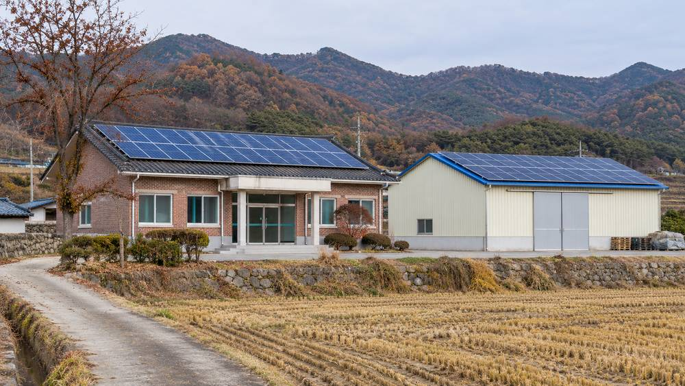
고흥군 "10GW 에너지 대전환, 수익은 군민 에너지연금으로"…세계태양광총회서 공공주도 영농형 1GW·햇빛소득마을 구상 공개
16~19일 대전 총회에 홍보관…주민이 건의한 345kV 송전선로 국가계획 반영 추진, 해상풍력 예비지구 지정도 준비

나주 대실마을 주민참여형 에너지 자립 모델, 아시아 10개국 에너지 관계자 35명에 소개…세네갈 500만 달러 ODA로도 이어져
ADB 초청 방문단, 태양광·소형풍력·ESS로 농기계 충전과 마을회관·스마트팜 운영하는 리빙랩 둘러봐…햇빛소득마을 추진 상담도

강원 고성 1호 햇빛소득마을 장신1리 400kW 다음 달 준공…연 8,129만 원 수입 예상
2호 화곡리 993.3kW·16억5,000만 원은 이달 현장 평가, 군은 공약 15곳 목표로 흘1리 등 13곳 후보지 점검

평창군, 공공주도 육상풍력 200MW로 '바람연금' 첫발…18일 동서발전·강원개발공사와 협약
방림·도사리·흥정 3개 단지, 군 지분 배당과 초과 이익으로 이익공유기금 조성…1인당 환원액·지급 방식은 아직 미정

강원 접경 4개 군 "군 유휴부지·햇빛·물로 에너지 연대"…영농형 태양광 군민펀드·발전 수익 기본소득 제안
철원·화천·양구·인제 정책포럼…"철원 농지 60%가 외지인 소유, 발전 수익 밖으로 샌다", 철원 태양광·화천 양수발전 잇는 '접경지역 에너지 협력권' 구상

남호주 아파트 주민도 '공동 태양광·배터리'…연방·주정부 1,780만 호주달러 지원, 설치비 절반 보조에 나머지 무이자 융자
'StrataCharge' 사업, 공동주택 한 곳당 보조금·융자 각 최대 4만7,500호주달러…집주인·세입자 모두 전기요금 절감, 남호주 12명 중 1명이 공동주택 거주

강화군민해누리협동조합 출범…공영주차장·공공 유휴부지 태양광으로 '군민 참여형 햇빛소득' 추진
군민이 발전과 수익의 주체로…지자체·공공기관과 부지 발굴, 수익 배분·지역 환원 방안 마련 예정

미국·캐나다 원주민 5만 가구에 태양광·배터리…원주민 비영리단체, 25억 달러 모금 나서
Indigenized Energy와 글로벌 시티즌 공동 캠페인, 2027년 첫 사업 목표…'공동체 소유' 에너지 강조

청주 17개 마을 햇빛소득마을 3차 공모 신청…태양광 1만6,082kW·설치비 236억 원
1·2차 선정 4곳은 사업화 준비…청주시 "계통 연계가 관건, 12월 소규모 공익형 우선 접속에 기대"

경기 공공 RE100 태양광 가동중지 3년간 1,914일…'RE100 소득마을'은 3개 시군에 58.8% 쏠려
지영일 경기도의원 행정사무감사서 '설치보다 생산' 성과관리 주문…주택 태양광은 목표 10만 가구의 49.3%

제주 이창흠 초대 기후경제부지사 "풍력·햇빛 이익을 도민 소득으로"…주민참여형 사업을 도민펀드로 넓힌다
2035년 탄소중립 목표, 약 2GW 추자해상풍력 최우선…신규 발전사업 주민 채권·펀드 투자, 공유화기금은 취약계층·공동체 재원

미국 앤아버시 공영 '지속가능 에너지 유틸리티', 저소득 가구까지 넓혀…2027년엔 시 전역에 개방
브라이언트 동네 90여 가구에 지붕 태양광·배터리 설치한 시범사업 다음 단계, 새로 20곳 설치
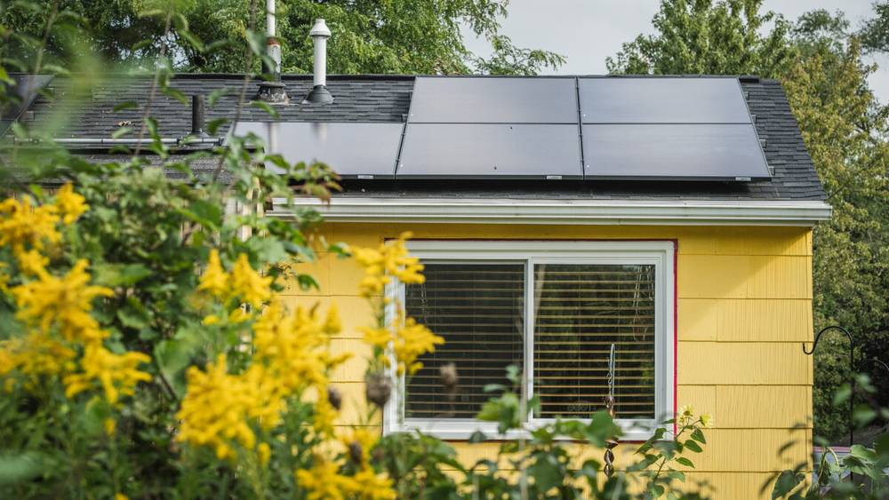
전남광주시의회 "계통 못 잇는 태양광은 희망고문"…햇빛소득마을 126곳 중 바로 접속 가능한 곳 5곳뿐
신민호 의원, 에너지산업본부 행정사무감사서 지적…영광 월평마을 1MW에 18억 원 들였지만 수익 없어, "소규모 농가 우선·주민 균등 참여 보장해야"
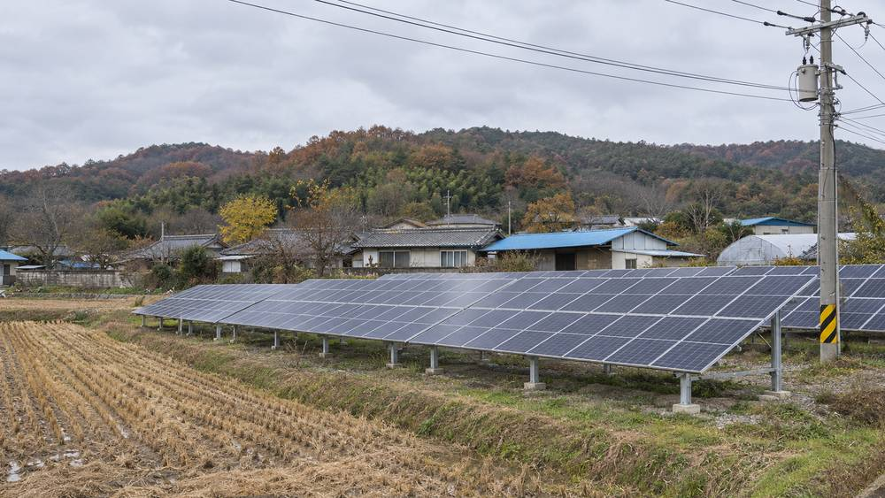
독일 바이에른 이젠 시민풍력조합, 조합원 470명·출자금 80만 유로 모아…"착공은 몇 년 뒤, 지금은 준비 단계"
'시민에너지 이젠탈' 경험 나눔 행사…풍력 7기 주민 소유 푹스탈 전 군수 "돈이 마을에 남는다"

이탈리아 사보나시, 리구리아 '연대형 재생에너지 공동체' 참여…시가 전기 생산·소비하는 '프로슈머'로, 혜택은 취약 가구에
시 집행위원회 승인 거쳐 시의회 표결 남아…공동체 수익을 에너지 빈곤 가구 지원에 돌리는 'CERS 리구리아', 기후행동계획(SECAP) 과제의 하나

美 미네소타 전력협동조합 크로우윙파워, 조합원에 약 300만 달러 돌려줘…11월 전기요금에서 차감
2010년분 출자배당 111만1,000달러에 도매 협동조합이 배정한 1992~1998년분 182만7,000달러 더해

모햇 햇살그린협동조합, 상업운전 태양광 1,427곳·176.1MW…한 달 새 46곳 늘어
조합원 투자금 3,497억5,000만 원 중 출자금은 15억2,700만 원…10월 발전매출은 SMP 하락에 6.8% 줄어
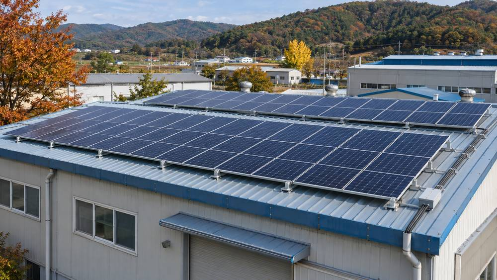
美 래퍼해녹 부족, 옛 수도 터 교육관에 지붕 태양광…원주민 기업이 보조금 신청부터 설치까지 무료로
12.32kW·패널 28장, 가동 뒤 2MWh 가까이 생산…설치비는 '부족 태양광 가속 기금'에서

수원햇빛발전㈜ 밑그림 나왔다…공영주차장 13곳 5MW부터 20MW·328억 원, 공공 배당은 기후대응기금으로
수원시·수원도시공사·에너지협동조합 참여, 시민펀드로 이익 나눠…16일 수원시의회서 창립설명회
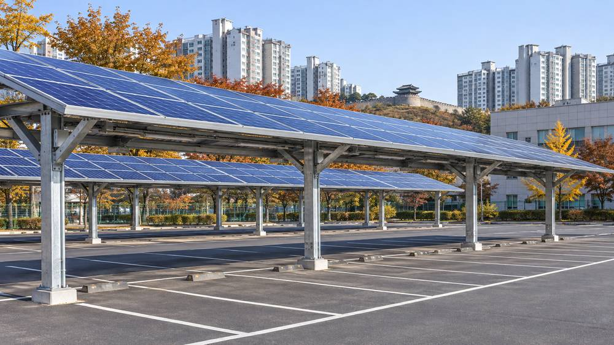
횡성군 햇빛소득마을 5곳으로…하대리·용둔리 이어 학곡1리·삼거리·매일2리 2차 선정
하대리는 주민 협동조합이 1MW 태양광 추진, 1차 '즉시 착수' 9곳에 들어…군은 설명회·조합 설립·계통 협의 지원

전남광주시의회 "햇빛소득마을, 선정 뒤가 더 중요"…녹색에너지연구원에 준공 후 기술·경영 지원 주문
박원종 에너지산업산림위원장 행정사무감사서 지적…연구원 "회계법인과 AI 정산 시스템 도입 중"

캐나다 캘거리 전기·가스 판매사, 이익 100%를 지역 성소수자 단체에…"요금이 공동체 기금이 된다"
사회적기업 Q-TILITIES, 대표는 월급 안 받고 5년 안에 10만 달러 이상 환원 목표

임실 '에너지특구' 추진위 출범…150MW 태양광으로 군민 소득 구상, "실행계획부터 내놔야" 목소리도
288석에 약 150명 참석…집적화단지·분산에너지 특화지역 중 어떤 제도로 갈지, 부지·전력망 확보가 과제
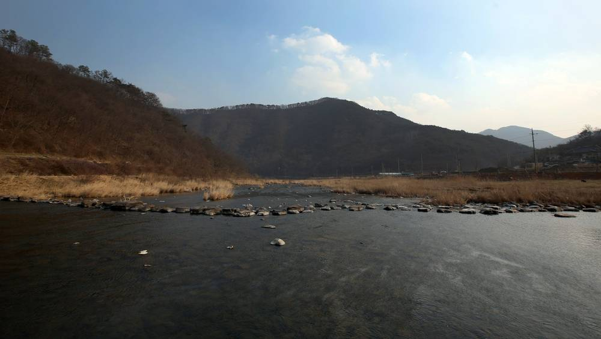
독일 자르베크 주민 에너지협동조합, 1년 새 조합원 380명→574명…새 풍력에 300만 유로
짓고 있는 신닝엔·미덴도르프 풍력 터빈에 주민 돈 몰려…조합 자산도 크게 늘어
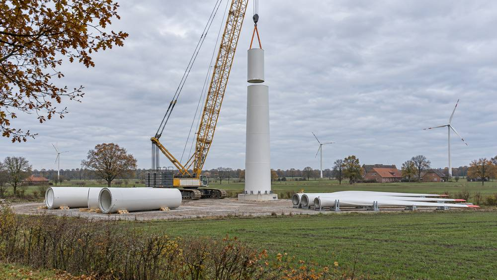
영국 정부 지원 '넷제로 허브' "지역에너지, 주민이 에너지의 주인이 되는 일"
잉글랜드 5개 허브 중 북동부·요크셔 허브 책임자 "수익은 지역에 남고 주민이 한데 모인다"
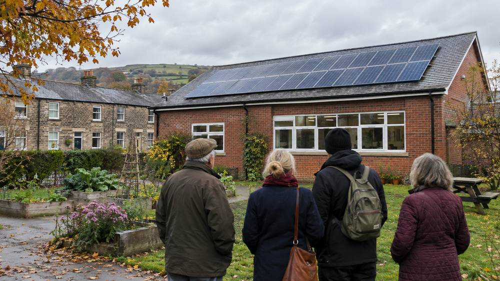
스페인 산타폴라시, 학교·체육관 지붕 200kW로 지역에너지공동체 출범…주민·상가 200곳 전기 최대 절반 충당
연 30만kWh 넘게 생산, 발전 지점 반경 5km 안이면 참여 가능…전기협동조합 그룹이 사업 도와

독일 조합원 4만2,000명 에너지협동조합 프로콘에 통신사도 출자…지분 1,266좌·6만3,300유로, "배당도 다시 출자"
아미바 운영사 STROTH Telecom 조합원 가입…"지분 수와 관계없이 1인 1표 민주적 구조에 끌렸다"

인도네시아 '마을 태양광 100GW'에 협동조합 8만 곳 동원…실제 운영은 1%, "위에서 만든 껍데기 조합" 우려
3년 안에 100GW·약 710억 달러 계획…과거 마을 태양광은 관리 주체 없어 '부서진 기념비' 됐다

독일 에너지협동조합에 여성 조합원 적다…연구소 IÖW "진입 문턱 낮추면 시민에너지 더 강해져", 브레멘 '여성 감사위원 프로그램' 등 사례 제시
연방경제에너지부 지원 EPOS 연구 정책제안서…쉬운 말·하이브리드 회의·자원봉사 쉼 허용 등 권고

정부 "조건부 선정 햇빛소득마을도 사업화 지원"…ESS 구축 사업 11월 공고, 1MW 이하 주민참여 태양광 계통 우선접속 12월 말 시행
행안부·기후부·농식품부 설명자료…"523곳 중 즉시 착수 36곳" 지적에 저수지·비축농지·도로 사면 등 유휴 국공유지 제공 계속

수원 두 에너지협동조합, 시·시민 함께하는 '수원햇빛발전㈜' 창립 설명회 16일 연다…2027년 상반기 설립 목표
12~25일 조합원 주간, 경기햇빛자전거길 1호·시화호조력발전소 견학…태양광 수익과 연계해 도시숲 후원금 1,300만 원 기부

전남광주 햇빛소득마을 126곳 ESS 조건에 주민 초기 부담 커…이재창 시의원 "폐도·제방·철도 주변까지 부지 넓히고 주민 부담 낮춰야"
통합특별시의회 행정사무감사서 도로변 태양광 등 새 부지 발굴 주문…에너지산업본부 "가상발전소 사업자 지정해 마을과 협의"

호주 시드니 배전회사, 공장·창고 지붕 태양광 남는 전기를 세입자·아파트 주민과 나누는 '공동체 전력망' 시범에 에너지 지도 공개
오스그리드, 마스콧-보타니·캐링바·센트럴코스트 북부 3곳 접속 여유·출력제한 자료 공개해 태양광·배터리 들어설 자리 안내…공동체 배터리로 이익도 지역에 나눠

강원 9개 시·군 19개 마을, 햇빛소득마을 3차 공모 도전…12월 결과 발표
1·2차 공모에서 도내 46곳 이미 선정…행안부 "3차에서 전국 200곳 이상 마을공동체 지원"

눈의 고장 일본 나가오카에서 시민 65명이 '시민공동발전소'…출자금으로 지붕·농지 위 태양광, 수익은 출자자에게
2023년 설립한 일반사단법인 '나가오카 자연에너지', 학교 출장수업·소수력 체험도…"연간 일사량 간토의 약 80%"

미국 플로리다 오캘러시 공영전력 '공동체 태양광 구독' 6년 만에 접는다…최대 가입자 빠지자 17MW 중 2%도 안 남아
태양광 쓰는 만큼 kWh당 1.6센트 더 내는 방식, 주택 가입은 "미미"…시의회 17일 표결, 12월 1일부터 새 가입 중단
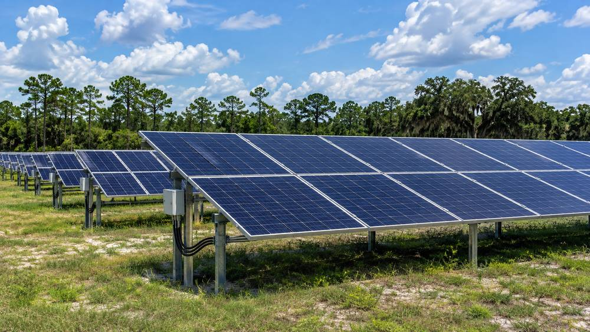
이탈리아 발사모자 재생에너지 공동체, 25가구 '공동구매'로 태양광·히트펌프 함께 설치…EU 집행위 "본받을 시범 사례"
시민·소상공인 102명 협동조합, 2024년 출범 뒤 태양광 200kW 넘게 설치…자원봉사자 집집마다 찾아가 설명회 4번에 75명

이탈리아 토르토나에 과학기술단지 주도 재생에너지 공동체…"참여자 전기요금 25~40% 절감"
첫 발전소 약 200kW로 시작해 750kW까지…토르토나 일대 18개 코무네 대상, 2026년 말 가동 목표
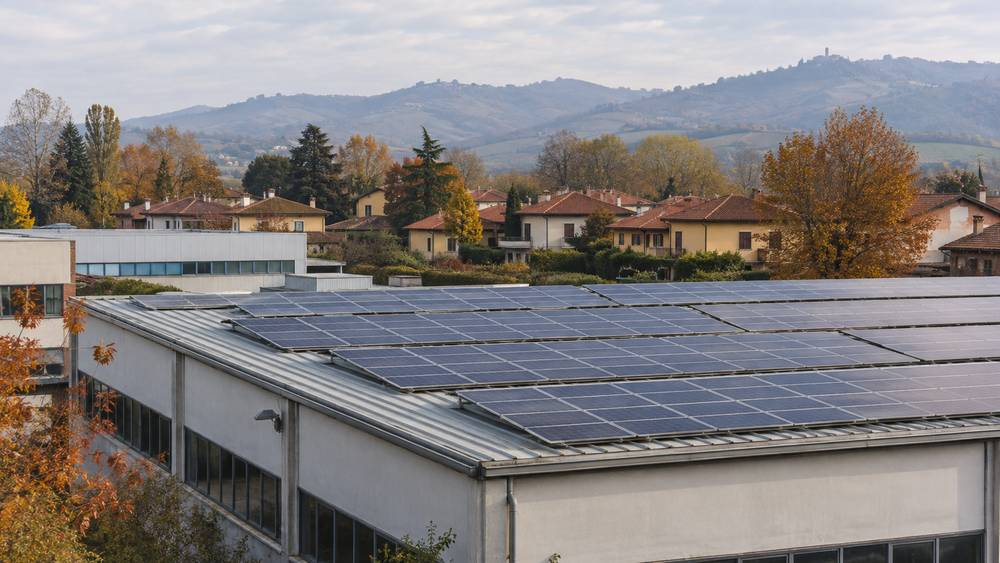
영국 셰틀랜드 "버려지는 풍력 전기로 섬 주민 요금 낮춘다"…의회 주도 '셰틀랜드 공동체 전력 프로젝트' 시동
가구 40%가 에너지빈곤인데 터빈 103기 바이킹 풍력은 송전 막혀 멈추기도…GB에너지·오프젬·SSE 등 실무단 참여, 2028년부터 시범사업 목표

뉴욕시에 '시 소유 재생에너지 개발공사' 세우자…시민단체 보고서 "공공 배터리 200MW만 깔아도 요금 연 1억7,000만 달러 절감"
기후·공공전력 단체 3곳 'PowerNYC' 제안…학교·병원·공공주택 지붕에 태양광·저장장치·지역 열망 직접 개발, 수익 다시 투자하는 자립형 공공 개발자

스코틀랜드 송전망 회사 500만 파운드 '넷제로 기금', 주민 주도 사업 26곳 지원 마쳐…"1파운드 넣어 사회적 가치 2.85파운드"
SP에너지네트웍스 기금, 중부·남부 공동체 건물 단열·저탄소 난방·친환경 교통 지원…워크숍 32회 450여 명, 22곳 전문 자문, 이산화탄소 2만5,000톤 넘게 줄여

독일 페를레베르크 두 마을 주민 "태양광단지 반대"…구속력 없는 주민 의견조사에도 개발사 41헥타르 계획 접어
데르겐틴 11명 중 반대 8·기권 3, 쥐코 35명 중 찬성 10·반대 19…같은 군 실데에서도 9월 조사 때 80% 가까이 반대
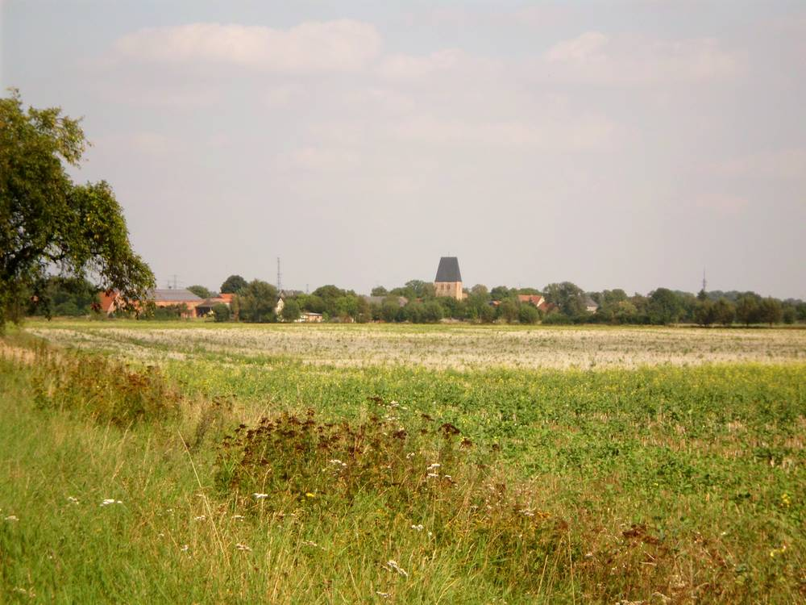
독일 바이에른 오버란트 시민재단 20년…군 지원금 1유로를 18유로 일로 키웠지만 "2035년 재생에너지 100%까지는 갈 길 멀다"
미스바흐군 전기는 재생에너지 60%, 난방 25%·수송 7%에 그쳐…해마다 에너지 비용 4억9,500만 유로 중 3억500만 유로가 지역 밖으로
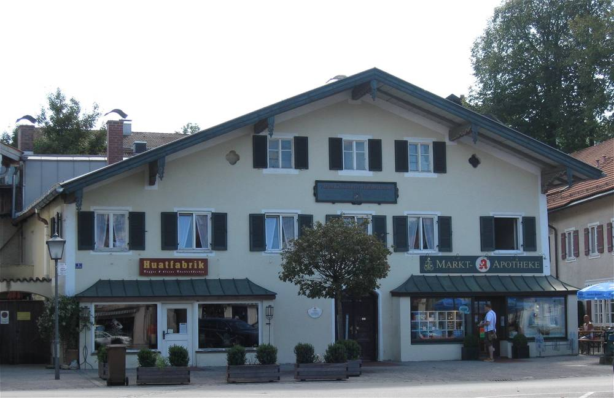
독일 쾰른 오센도르프, 에너지협동조합과 주택협동조합이 435가구에 세입자 태양광…저장장치 670kWh 붙여 전기요금 10% 싸게
건물 55동 지붕에 750kW, 단지 전기의 절반을 지붕에서…협동조합 "2027년 EEG 개정되면 작은 세입자 태양광은 못 짓는다"

전력망 막혀 조건부 선정된 화순 수동마을 1MW 햇빛소득마을, 저장장치로 계통 연결 길 연다…설치·운영비는 민간 통합발전소 사업자가
49가구 주민 모두 동의한 사업…기후에너지환경부 장관 11일 현장 점검, 이번 주 안에 햇빛소득마을 ESS 사업자 공모

미국 델라웨어, 상업용 건물 8곳 지붕에 19MW 넘는 커뮤니티 태양광…집이나 지붕 없어도 할인 전기 받는다
부동산 개발사와 태양광 업체 협력, 뉴캐슬 카운티 델마바 전력 공급 구역…3곳은 주 인허가 신속 처리 대상

공공이 앞장선 제주·나주의 에너지 전환…풍력 공유화기금·나주형 햇빛연금으로 이익 나눴지만 전력망 포화가 숙제
제주에너지공사 풍력 59.53MW 운영·한림해상풍력 주민 1,009명 1인당 연 351만 원…나주 허가받고 못 짓는 태양광 약 2,700곳

남원 9개 마을 햇빛소득마을 조건부 선정…시의회 연구단체 "이제는 사업화", 부지 발굴·자부담 지원 등 5대 과제 논의
여주 구양리·완주 서봉마을 사례 공유…발전수익으로 무료 점심·행복버스, 70세 이상 월 5만 원 경로연금

순창군, 공유재산 부지에 햇빛소득마을 100곳 만든다…전북개발공사·한전과 공공주도형 발전 협약
2030년까지 5년간 부지 함께 발굴, 개발공사가 투자·건설·운영…12월 조례 제정, 내년 1월 주민설명회
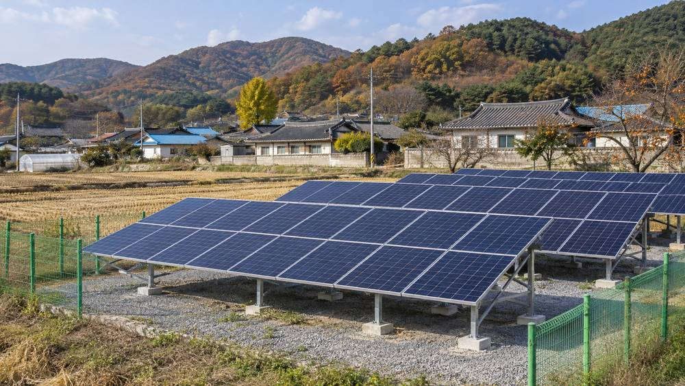
미국 조지아 조합원 소유 전력협동조합 코스털 일렉트릭, 남은 이익 153만 달러를 조합원에게 돌려준다
2011~2013년 전기를 쓴 조합원 대상…지금까지 돌려준 출자배당 2,300만 달러 넘어, 조합원 2만여 명

미국 캘리포니아 소보바 원주민 부족 소방서, 태양광 마이크로그리드에 바나듐 흐름전지 더해 정전 때 10시간 이상 버틴다
GRID 얼터너티브가 주 에너지위원회 지원으로 개발…산불 최고위험지역, 24시간 넘는 정전도 겪어

멕시코 푸에블라 농민들, 연구소와 함께 밭 위 태양광 공동체 실험…5kW 모듈로 비료 공장·가공·세 가구에 전기
산티아고 할리친틀라 마을 토나티우 사업…결정은 마을 총회에서, 생산한 전기를 여러 집에 나누는 방법은 아직 숙제
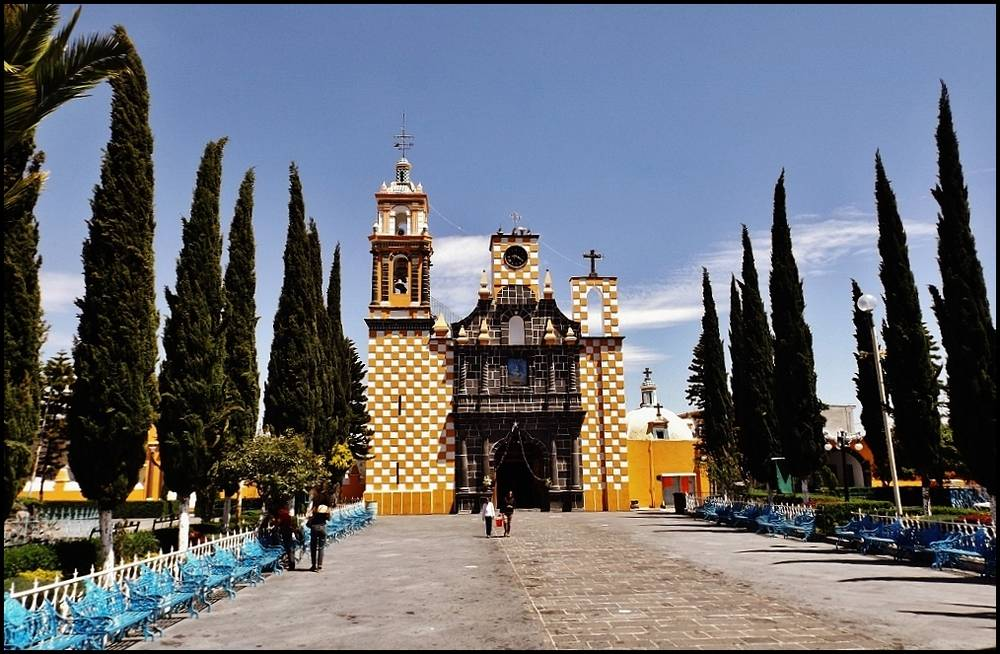

네덜란드 크랄링어폴더르 열 협동조합, 지열 프로젝트 ADL과 열 공급 계약 서명…2029년 4분기 공급 목표
열 용량 25MWth 지열원, 첫 시추는 2028년 중반 계획…온실 농가와 건물에 열 공급

이탈리아 바리 광역시권 첫 재생에너지공동체 '체르 노바' 출범…광역시는 학교 건물 전기 소비로 참여
광역시장·지오이아델콜레 시장이 설립 증서 서명, 시민·중소기업·제3섹터 단체도 창립 회원으로
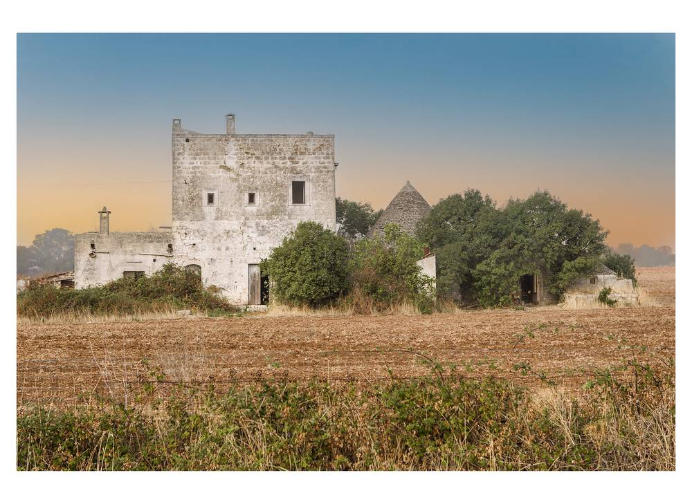
스페인 바스크 온다리비아 시, 지역 에너지공동체 만들기 위한 주민 설명회 3회 연다
11월 18일·12월 10일·16일 오후 6시…구성 방식·조직·설립 절차 차례로 논의, 시청 "주민 의지에 달렸다"

스코틀랜드 SSEN 트랜스미션, 송전설비 인근 주민에게 162만 파운드 지역기금 설계 의견 묻는다
레어그·로가트 주민 대상 설문 11월 16일~12월 14일, 설명회 3회…'사우스 로크신 지역기금'은 2027년 문 열 예정

햇빛소득마을 선정 436곳 가운데 바로 시작할 수 있는 곳은 23곳…하천구역·한전 계통·'동' 명칭에 발목
정부는 올해 700곳 선정을 목표로 속도…지자체 규제와 전력망 부족으로 현장은 멈춰 있어
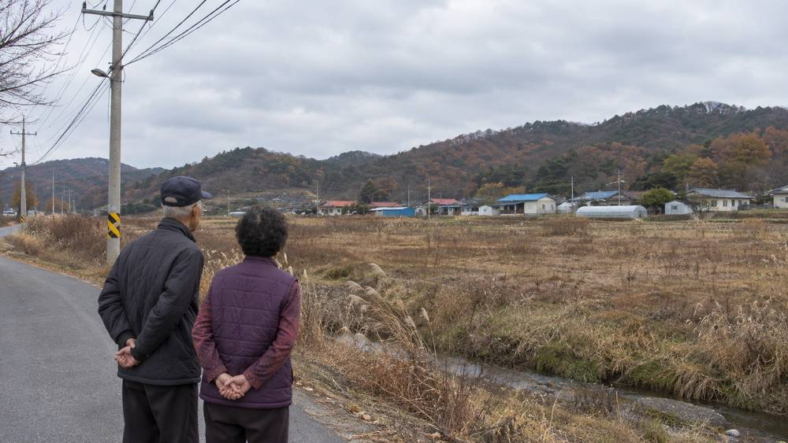
스코틀랜드 주민 10명 중 7명 "학교·공공건물 지붕에 태양광 달자"…반대는 6%
업계 단체 여론조사, 새집 태양광 의무화 찬성 59%·집 근처 태양광단지 찬성 43% 대 반대 22%…"정부·지자체가 행동으로 옮겨야"
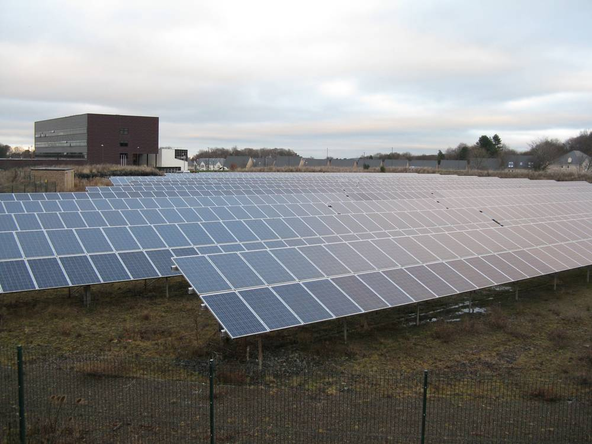
영국 내셔널그리드, 블라이스 변전소 증설 지역에 최대 106만 파운드 공동체 기금…쓰임새는 주민 의견 받아 정한다
데이터센터·버윅뱅크 해상풍력 연결용 변전소 1·2단계에 53만 파운드씩, 12월 6일까지 4주간 의견 수렴…기금은 내년 여름 출범

햇빛소득마을 522곳 중 490곳 '조건부'…국회 예결위서 "착공한 곳 거의 없고 브로커가 주민 밀어낼 수 있다"
2027년 예산안 심사 전체회의, 내년 2,200곳 확대 계획에 예산은 이차보전 285억 원 중심…영농형 태양광 150억 원도 연구·제도 기반에 쏠렸다는 지적

영국 사우스케임브리지셔, 올해 주민 기후사업 14곳에 17만1,000파운드…마을회관 태양광·예술센터 열펌프 지원
2019년부터 주민 사업 110곳에 100만 파운드 넘게 지원한 '탄소제로 공동체' 기금…신청 단체 23곳에서 37곳으로 늘어
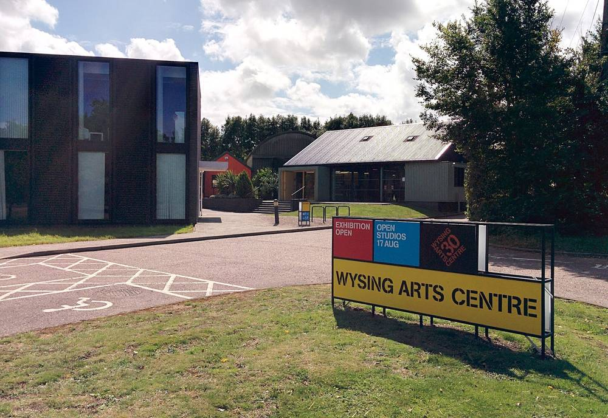
영국 셰틀랜드 주민 설문 응답자 87% "에너지 개발 멈추거나 유예해야"…2,655명 응답
개발 반대 단체 '지속가능한 셰틀랜드'가 전 가구에 돌린 설문…"이미 영국 재생에너지에 크게 기여했다" 80% 넘고, 송전선 지중화 찬성 85% 가까이
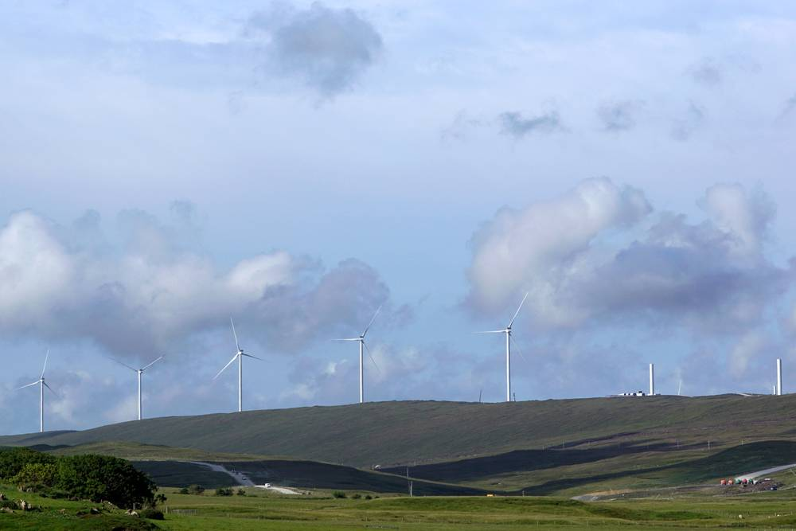
환경법 단체 클라이언트어스, 불가리아·크로아티아를 EU 집행위에 진정…"시민 에너지공동체 가로막는 규정"
크로아티아 등록 시민에너지공동체 3곳뿐, 그나마 1곳은 사실상 멈춰…7월 폴란드·헝가리에 이어 EU 재생에너지 지침 이행 여부 따져

용인시정연구원 "반도체 RE100 수요를 시민 소득으로"…시민 투자·주민 참여·공공자산 태양광 담은 이익공유 모델 제안
이슈리포트 'YRI Insight 119호'…발전 수익 공유, 시공·유지관리 주민 참여, 정책금융·시민투자 연계, 인접 시군과 광역 협력 등 5가지 방안

신협, 시민 태양광에서 해상풍력·햇빛소득마을까지 재생에너지 금융 넓힌다…마을 발전시설 자금 최대 85% 대출
안산시민햇빛발전협동조합 발전소 60곳 짓는 데 힘 보탠 경험 살려 고창 해상풍력 1,000억 원 연계대출 참여, 에너지공단 이차보전으로 마을 이자 부담 덜어

독일 묀제 풍력 사업자들, 수익 나눌 시민·에너지 재단 추진…의회는 운영위원회 동수 구성부터 정관에 담으라고 요구
노르트라인베스트팔렌주 법이 정한 주민 이익 참여 방식 놓고 1년 새 의회 결정 뒤집혀…재단안이 정말 주민을 참여시키는지 의문도

스코틀랜드 주민 70%가 공공건물·신축 주택 태양광 확대 찬성, 반대는 6%…집 근처 태양광 단지도 찬성 43%로 반대의 두 배
솔라에너지스코틀랜드 의뢰 여론조사, 하고 싶어도 못 단다는 응답 38%…스코틀랜드 정부는 공동체 재생에너지 지원 1,500만 파운드로 늘려

이탈리아 에너지협동조합 ènostra, 2029년까지 자체 발전 3배·조합원 2만8,000명 목표…새 발전 투자 450만 유로는 조합원 출자로
10월 말 조합원 웨비나서 2026~2029 전략계획 발표…고객 공급 전력 약 60GWh→100GWh, 출처 추적 전력 비중 20%→40%, '사회적기업' 전환도 검토
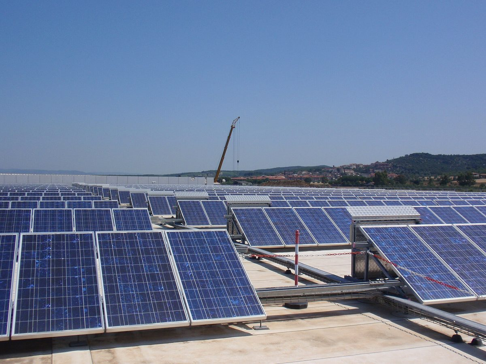
독일 노르트할벤의 1919년생 주민 전기협동조합, 연말 전기 공급 접는다…주민 75%가 고객
면 주민 1,467명 가운데 약 1,100명이 조합 전기 써…같은 지역 공급사 'grüün'에 이어 두 번째 철수, 면장은 주민 안내 필요하다고 밝혀
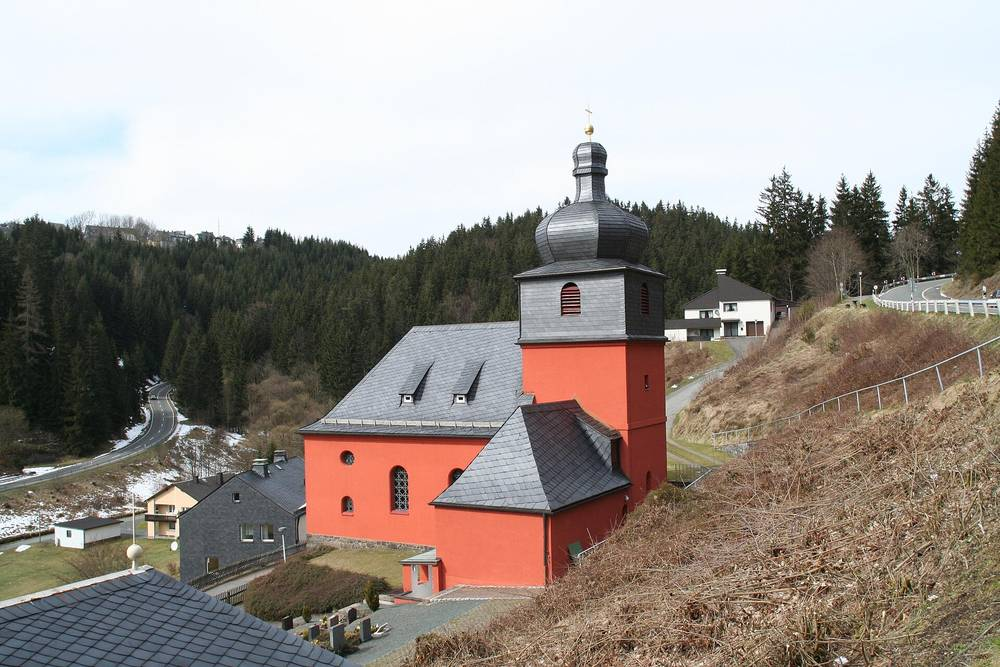
포르투갈 농촌 저항 연결망 브라바 1년, 35개 지역 모임 지원…에너지 전환은 주민 말 듣고 분산돼야
대형 태양광 단지·리튬 광산 반대 모임을 법률·재정 지원 단체와 연결, 반대하는 것은 전환이 아니라 대기업으로의 부 집중이라고 밝혀…6일 리스본서 1년 결산 모임
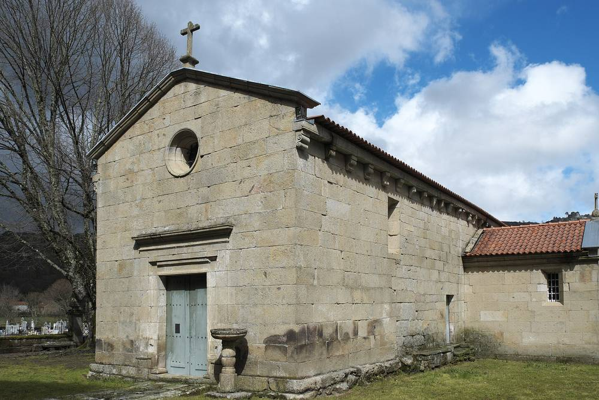
일본 플래티넘 대상, 지열 전기 판매 수익을 지역 방재에 쓰는 사업에 대상…소사시 시민 영농형 태양광은 우수상
제14회 시상식 도쿄서 열려, 최종 심사 11건 중 대상 3건…경작 포기지를 살리며 전기 판매 수입 일부를 경작 위탁료로 돌리는 지바현 소사시 시민 단체 사업도 상 받아
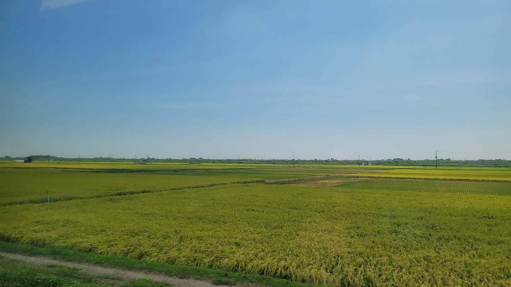
미국 볼티모어 시민단체, 민영 BGE 대신 시영 전력 운동…시의원 15명 중 4명·새 당선자 3명 'BGE 후원금 거부' 서약
데이터센터 반발·요금 상승 속 2025년 출범한 '볼티모어 공영전력'…BGE는 4년간 77억 달러 투자·연 1억5,610만 달러 요금 인상 요청, 지난 25년 공영화 시도 64건 중 7건만 성공
루마니아 공동주택 태양광 법안 3건 의회 절차에…시민단체 안, 아파트 공용 지붕 전기 판매 수익 최대 85% 관리비서 덜어 줘
프로슈머·에너지공동체 협회(APCE)가 2건 발의…발코니 태양광은 패널 4장·800VA 이하로 신고만, 공용 지붕은 소유자 3분의 2 동의, 별도 법안은 비참여 세대 부담 금지·배당 금지
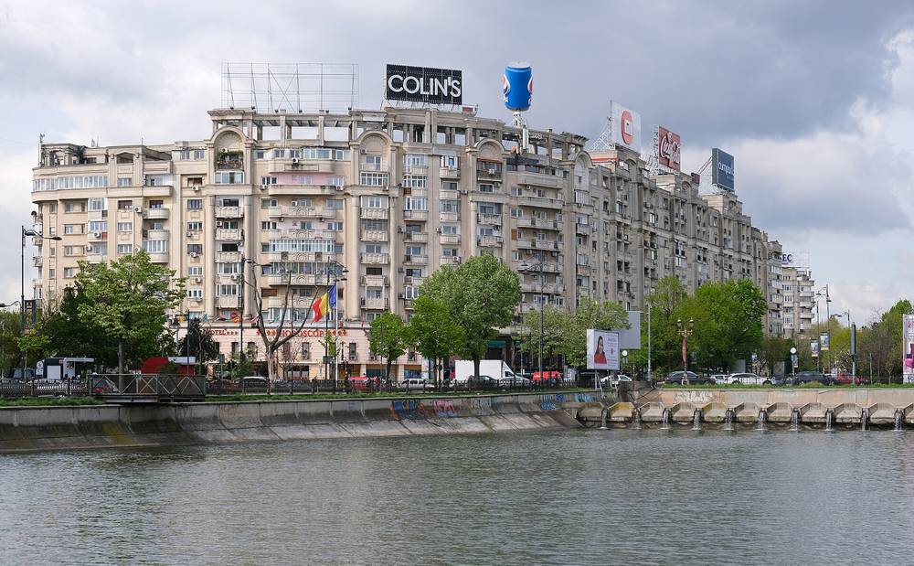
경기 서수원·월암 나들목 유휴부지 2만7,000㎡에 햇빛발전소 준공…협동조합 26곳·도민 1만1,000여 명 참여
2023년 경기RE100 비전 선포 뒤 부지 임대, 2025년 2월 착공…설비 용량·사업비·수익 배분 방식은 공개 안 돼
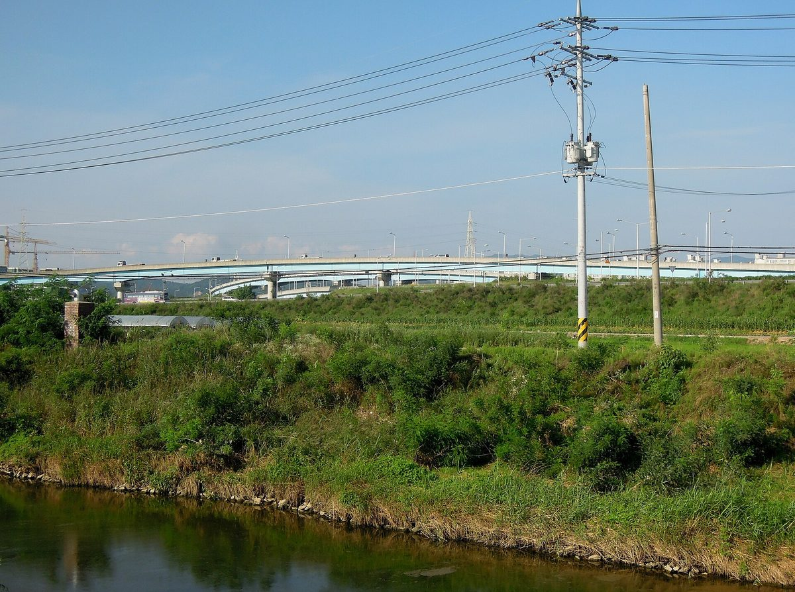
프랑스 알자스 '세 나라 국경' 주민 4명, 시민에너지 모임 EC3F 꾸려…한 주 108유로 출자로 지붕 태양광 공동 소유 추진
2022년 생루이 광역연합 설명회에서 처음 만나 2023년 말 독립, 시민 협동조합 '에네르지 파르타제 앙 알자스'의 지역 모임으로 활동…한 달에 한 번 모여 태양광 올릴 지붕 찾고 집단 자가소비 사업 준비
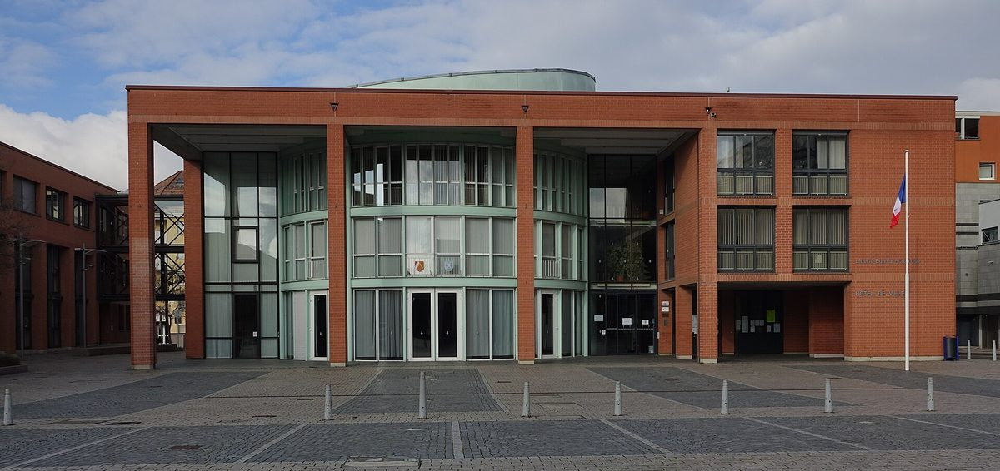
푸에르토리코 시민단체 카사 푸에블로, 지붕 태양광 남는 전기를 kWh당 7~8센트에 사들이는 '푸에블로 솔라' 제안
단체 집계 자가소비 태양광 약 26만1,000가구·분산 태양광 약 1,456MW로 메탄가스 발전 설비 1,391MW 넘어…송배전 운영사 매입 의무화·낮 시간 싼 요금·공동체 태양광과 협동조합으로 지붕 없는 가구도 참여
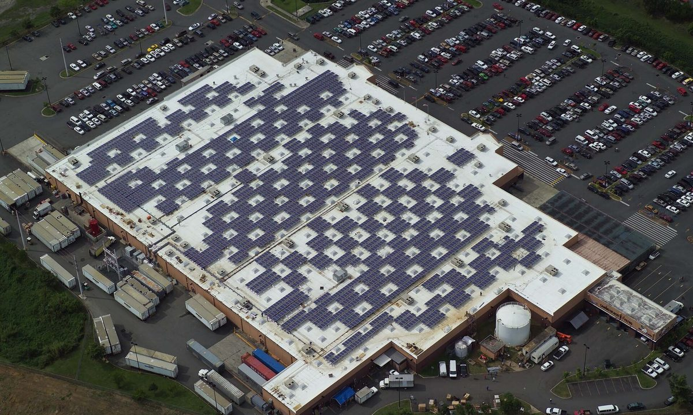
네덜란드 아선 협동조합 태양광 단지, 상계제도 폐지에 배터리 200만 유로 숙제…수익 기부 대신 저소득 가구에 싼 전기 직접 공급으로
조합원 300명 비영리 '아선스 굿', A28 아선베스트 나들목 옆 패널 2,800장 넘는 단지 설계 다시…2027년 1월 상계 폐지·역송 비용에 저장 없이는 사업성 없어, 배터리 설치엔 새 허가 필요
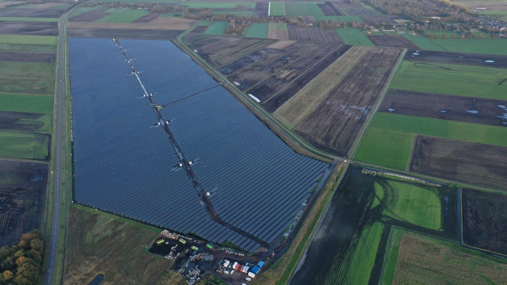
대전시의회, 햇빛소득마을 공모에 '법정동' 포함 건의안 채택…"리가 아니라 신청조차 못 해"
김미희 의원 대표 발의, 의원 19명 공동 발의…2027년 공모부터 동 지역 참여·평가 기준 정비 요구, 대전시는 4년간 시비 34억 원 '대전형 햇빛소득마을' 구상
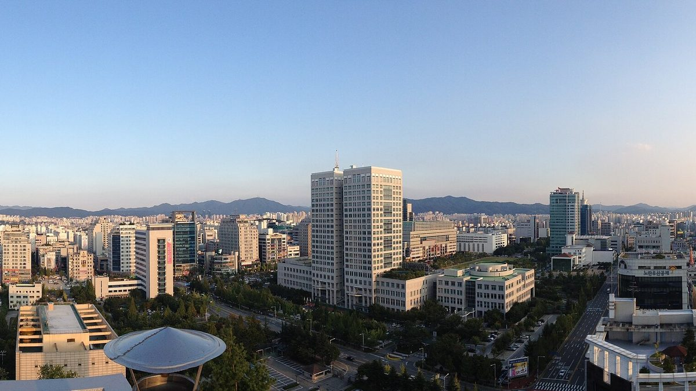
폴란드 오도라누프 등 3개 지자체 에너지 클러스터, 공적 자금 3,000만 즈워티로 주민 태양광 627곳…주민 부담은 설치비 10%
2027년 6월까지 저장장치도 함께 설치, 시장 "클러스터 전체로는 1,500곳 가까이"…세 지자체는 주민에게 재생에너지 설비를 보여 줄 '에너지 아카데미'도 추진
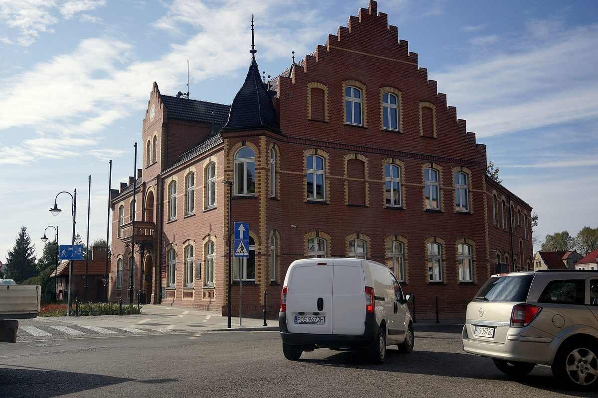
덴마크 란데르스 시, 2045년 재생에너지 100% 자급 위해 새 발전설비 자리 주민에게 먼저 묻는다…지금 생산의 두 배 넘게 필요
시 종합계획에 붙일 재생에너지 설비 계획 앞서 11월 4일~12월 16일 사전 토론, 이동 상담차로 6곳 찾아…입지·이웃과 자연 배려·지역에 가치 남길 방법까지 의견 받아
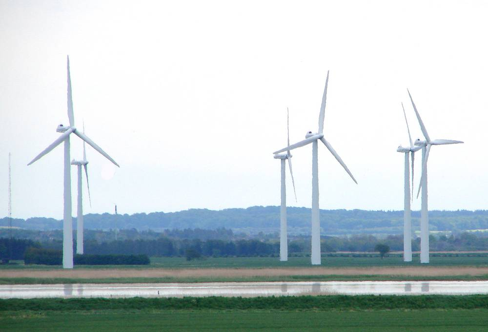
아일랜드 오펄리주 파이브앨리 에너지공동체, 정부 에너지상 수상…두 단계에 걸쳐 128가구가 태양광 패널 1,650장 공동 설치
'솔라 미할' 사업으로 가구마다 재생에너지 전기 생산·에너지 비용 절감…국영 보르드나모나의 데린러프 풍력단지 지역이익기금이 SEAI·주민과 함께 지원, 기후·에너지·환경부 장관이 시상
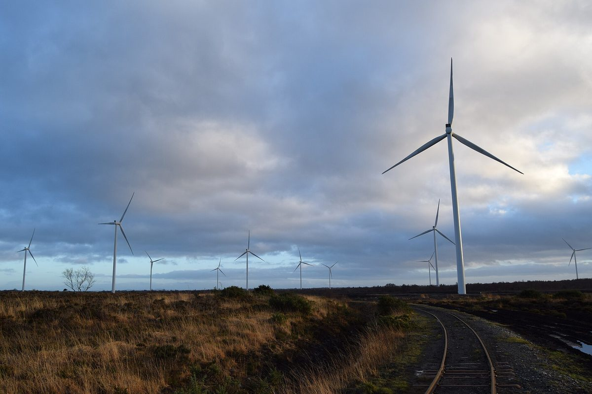
오스트리아 인구 1,700명 마을 슈탄츠, 에너지공동체 회원 약 150명과 "마을 전기는 마을에서"…농촌혁신파트너십 8곳에 뽑혀 35만 유로
지자체 통합 거부하고 독립 지킨 마을의 'Energie.Digital.Stanzertal' 사업, 2026~2029년 지원 받아…1906~1952년 직접 전기 만들어 쓴 경험 살려 11월 5일 주민총회
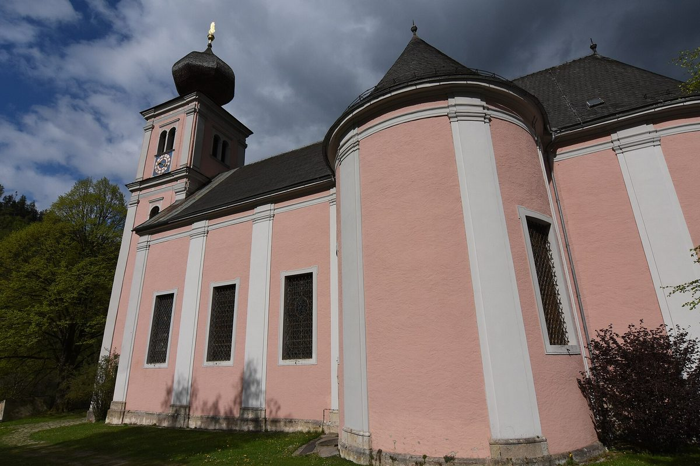
스페인 라팔마섬 시민 협동조합 '에네르히아 보니타' 5년…조합원 320명 넘어, 학교 지붕 8곳에 태양광 626kW
전기 90%가 화석연료인 섬에서 화산 분화 속 출범한 비영리 소비자 협동조합, 자치정부·시가 내준 학교 지붕에 공유 자가소비 설비…일부는 1년 넘게 가동 대기, 조합 "배전회사가 되풀이되는 문제의 원인"
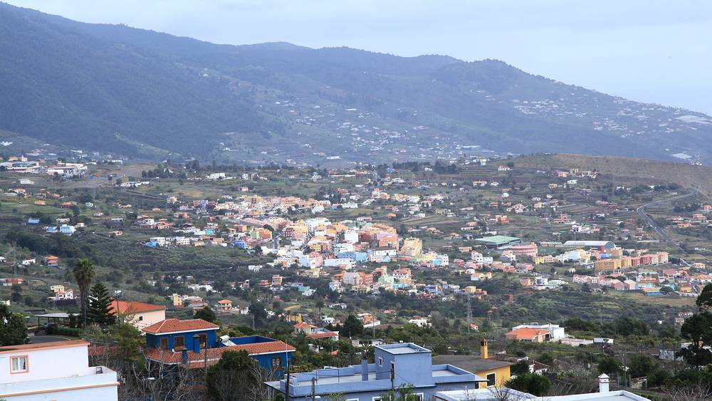
캐나다 하이드로퀘벡, 뉴욕행 송전선 퀘벡 구간 지분 절반 카나와케 모호크 공동체에 넘기기로…규제위 승인 신청
건설비 11억4,000만 캐나다 달러 든 58km 지하·해저 선로를 3억 캐나다 달러에 공동 소유 합자회사로…하이드로퀘벡이 40년 동안 송전 용량 전부 사들이고 운영도 계속 맡아, "이용자 요금 영향 없다"
미국 11월 3일 지역 에너지 주민투표 첫 집계…키챕 공영전력·투손 민간 전력사 영업권 반대 우세, 유진 대기업 부담 클린에너지 기금은 찬성 앞서
키챕 '제안 1호' 반대 약 60.5%, 민영 전력사 240만 달러 대 찬성 쪽 약 9,000달러…투손 '제안 421' 초기 개표 반대 53.3%로 TEP 430만 달러 운동 밀려, 유진 '메저 20-388' 찬성 약 58%에 발의 쪽 승리 선언, 앤아버 시영 전력 안은 비공식 집계서 반대 51.83%로 부결

솔라리그 장관표창에 인제군·고령군·달구벌시민햇빛발전협동조합…민간부문 입상 4곳 모두 발전협동조합
제8회 대한민국 솔라리그 14곳 수상 확정, 5일 정부세종컨벤션센터서 시상…고령군은 햇빛소득마을 수익을 주민복지기금에, 군포시는 주민·시민발전협동조합과 방음터널 태양광 기획

이탈리아 폴리뇨시, 8개 시·군 공공 재생에너지공동체 '체르-토스' 가입 논의…시의회 상임위서 여야 대체로 찬성
가입하면 시는 20유로, 시민은 1유로 내고 쓴 전기만큼 지원금…시·군 몫 수익은 설비 확대나 공공 서비스에만 쓰도록 묶어, 가입 여부는 시의회 본회의로
스페인 바스크 오이아르춘, 시청·에너지공동체 등 10곳 '아로아' 10대 원칙…"재생에너지 발전은 비영리·공공 주체가, 지역 공동체 통제 아래"
협동조합·학교·청년 모임 함께 서명, "필요한지가 아니라 어떻게 조직하느냐가 문제"…렙솔 풍력 2곳엔 '불신', 누구나 동참 신청 가능
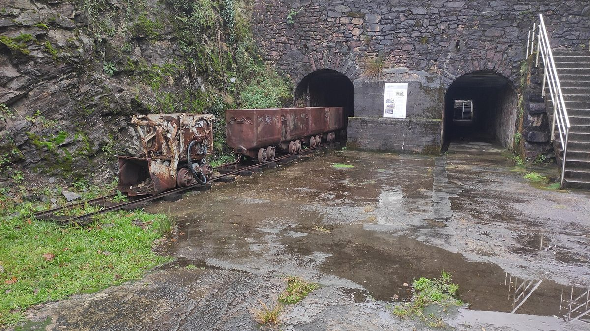
포르투갈 정부, 2027년 '재생에너지 수용 계획' 내놓는다…"설치 때 한 번이 아니라 여러 해 주민에게 이익을"
환경에너지부 장관 "지역 반발은 긴급한 일", 이웃 주민용 에너지공동체를 예로 들어…예산안엔 한 문장뿐 예산·일정 없고, 6월 법령이 정한 90일 기한도 9월 말 넘겨
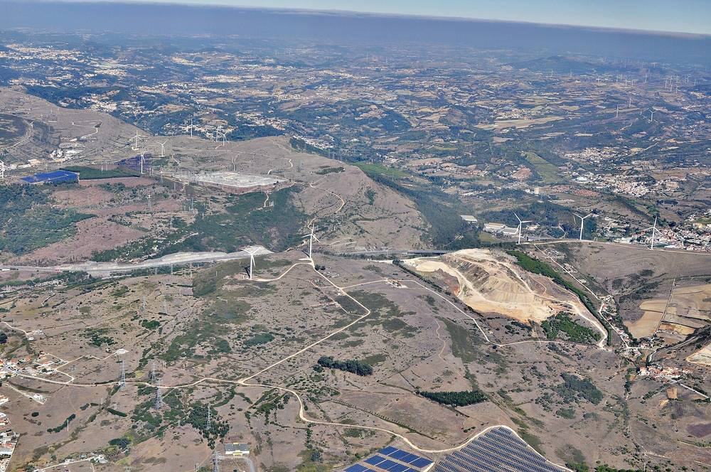
이탈리아 폼페이아나 시, 학교·시청·공영주차장 태양광과 재생에너지공동체(CER)를 한 묶음 민간투자 입찰…공사비 65만7,099유로, 21년 계약
양허 전체 추정가치 141만1,638유로, 시가 운영사에 해마다 2만9,585유로 내는 구조…응찰 11월 27일 마감·30일 개찰, 제안사 우선권은 EU 판결 따라 없애

그리스 코자니 아크리니 주민 에너지공동체, 태양광 35MW분 이익 세금 없이 기부받는 길 열려…정부 법안 조항 의견 수렴
국가경제재정부 법안 26조…재생에너지 관리 회사 기부금에 증여세·소득세 면제, 마을에 부동산 가진 사람은 다른 공동체 조합원이어도 가입, 아직 확정 안 돼
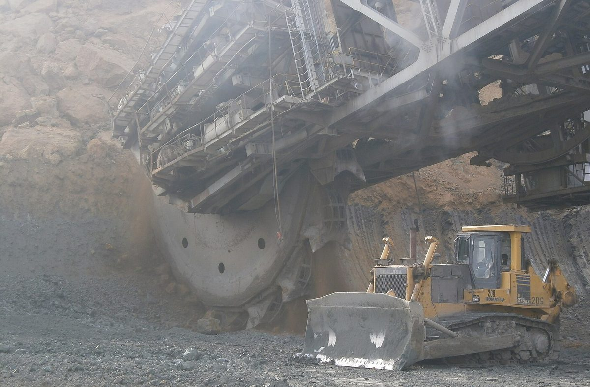
벨기에 헤르 시민협동조합 풍력 7기 사업에 주민 지지 편지 373통…공청 막바지에 지자체에 낼 예정
헤스브에네르지와 협력사 추진, 총 33.6MW·연 87GWh 추정…조합원 1,800명 넘어…반대 주민위원회 '방 제레'는 "편지는 미리 채운 서식"이라며 맞서…8개 지자체 의견 거쳐 왈롱 지역정부가 결정
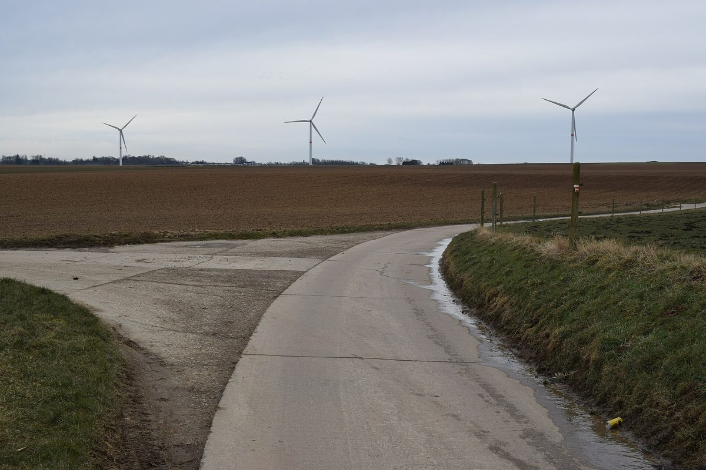
이탈리아 시칠리아 '네브로디 CER', 토레노바 유치원서 에너지 교육 시작…"학교도 비용 없이 공동체 가입할 수 있다"
조합원 약 240명 협동조합형 재생에너지 공동체, 4~5세 아이들에게 재생에너지·에너지 나눔 놀이 수업…다른 학교로 넓혀 공유 전기 이익으로 학교 전기요금 부담 덜겠다는 구상
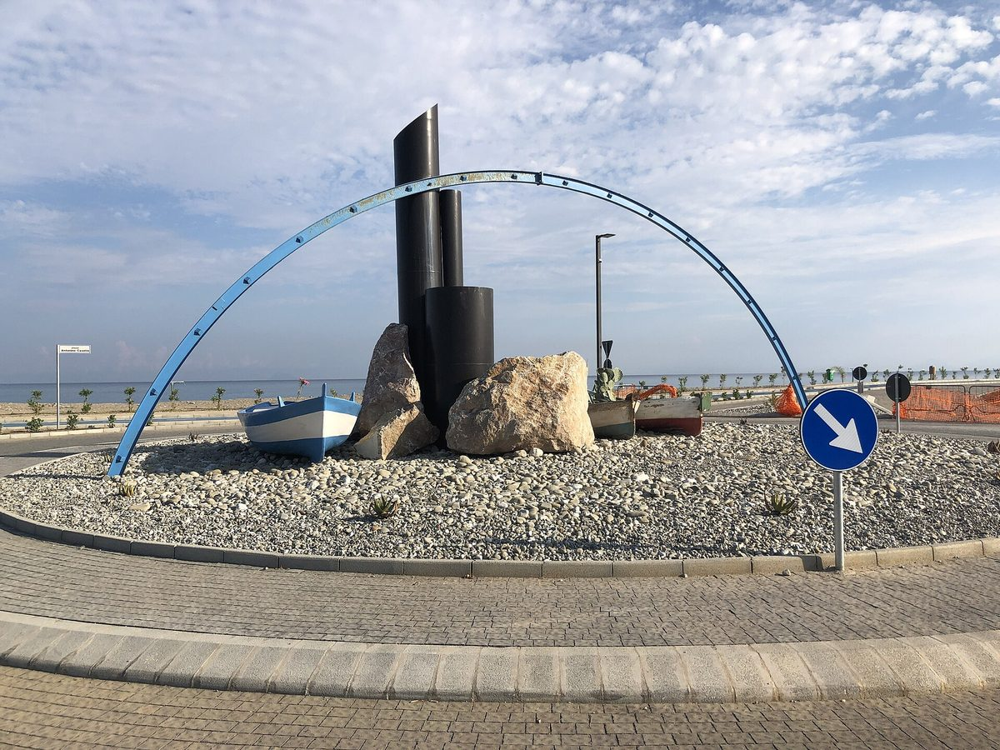
여수 4개 마을, 햇빛소득마을 3차 공모 신청…2차 조건부 5곳은 부지·주민 참여 절차 밟아, 계통 막힌 곳은 ESS 병행 검토
10월 30일 마감 3차 추가 공모, 관계기관 검토·행안부 평가위원회 심사 거쳐 12월 말 결과 발표…여수시 "행정 지원·맞춤형 컨설팅 제공"
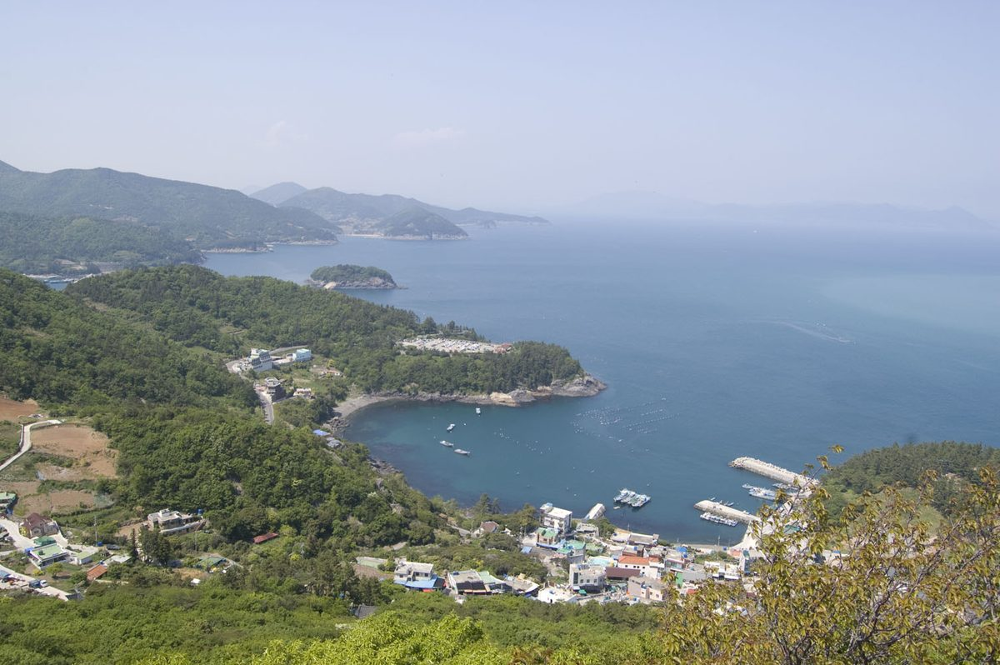
에너지협동조합 활동가 40명, 고흥 주민참여 수상태양광·나주 한전KDN 찾아 계통 접속·계획입지 속 시민참여 공부
한국에너지정보문화재단·시민발전이종협동조합연합회, 11월 2~3일 전남 여수·고흥·나주 일대서 역량강화 교육…'100GW 계획입지 이행체계와 시민참여' 강의도
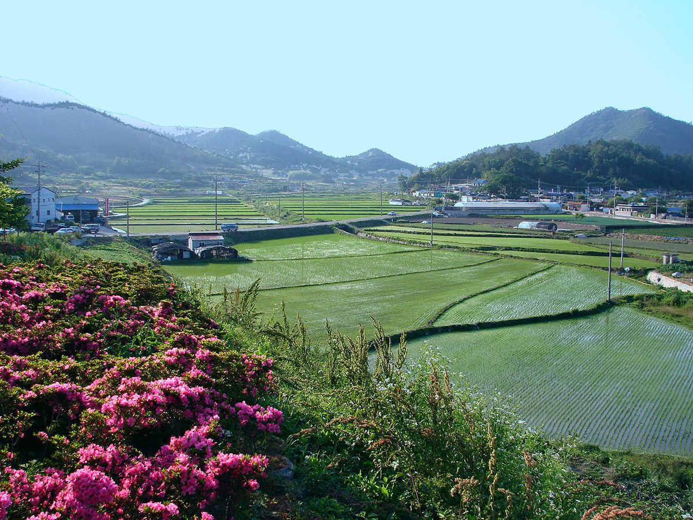
춘천 오탄1리, 협동조합 꾸려 햇빛소득마을 3차 공모 신청…주민 82% 동의, 999.75kW 태양광에 13억1,000만 원
마을규약상 주민 149명 중 123명 동의로 필수 기준 70% 넘겨…같은 사북면 오탄2리는 1차에 조건부 선정, 결과는 12월 말 발표
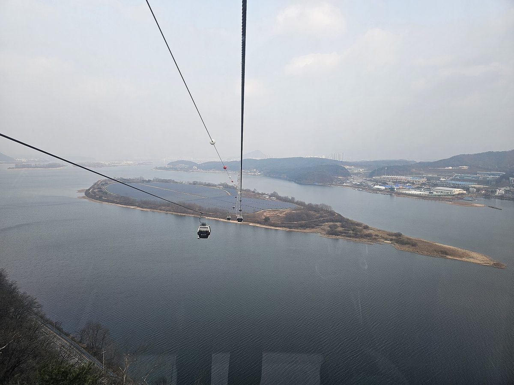
미국 미네소타 '공동체 태양광 정원' 제도 13년…업계 "활동 용량 800MW 넘어 다른 주의 본보기", 전력회사는 '비용 전가' 반박
지붕 없는 세입자도 민간 개발사 태양광 몫을 구독해 요금 공제…주 상무부 "첫 10년 3만4,000곳 넘게 공급", 엑셀 에너지는 "연료비 약 20% 차지하며 전력은 4% 미만" 추정
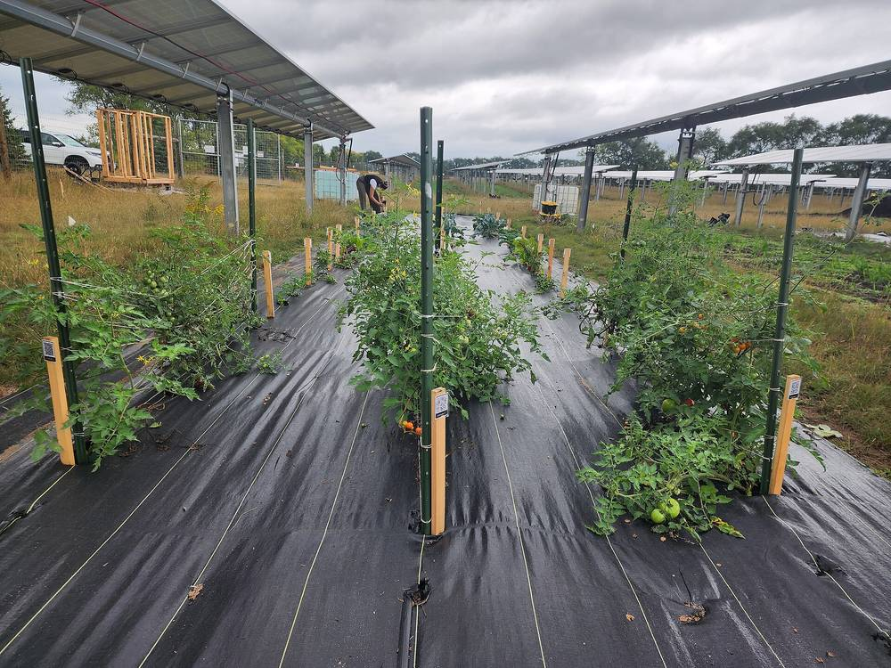
이탈리아 타란토항, 항만청 주도로 '항만 재생에너지 공동체' NET 설립…기업·단체 12곳 참여, 취약 지역 세 동네 가족도 가입 예정
이오니아해 항만시스템청, 국가 에너지서비스공사(GSE) 도움 받아 출범…에너지 빈곤 줄이기를 목표에 넣고 다른 항만에 옮겨 쓸 모델로 내세워
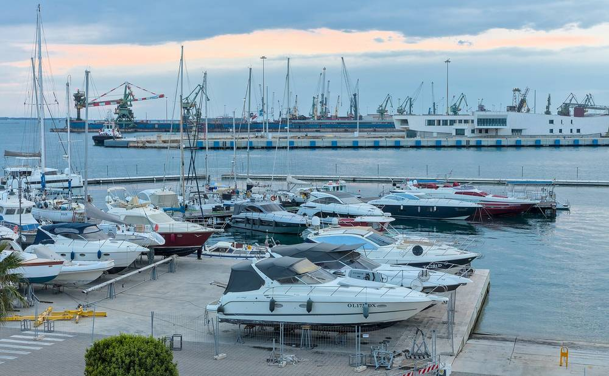
미국 연방 지원 끊기자 원주민 공동체 에너지 사업 멈춰…알래스카 코츠뷰 풍력 2,000만 달러 취소 뒤 1년 넘게 제자리
전력 75%를 디젤로 만들고 소득 20%를 연료에 써…브루킹스 "정부효율부가 원주민 지원 4억6,800만 달러 없애", 의회에 지원 취소 막는 법 요구
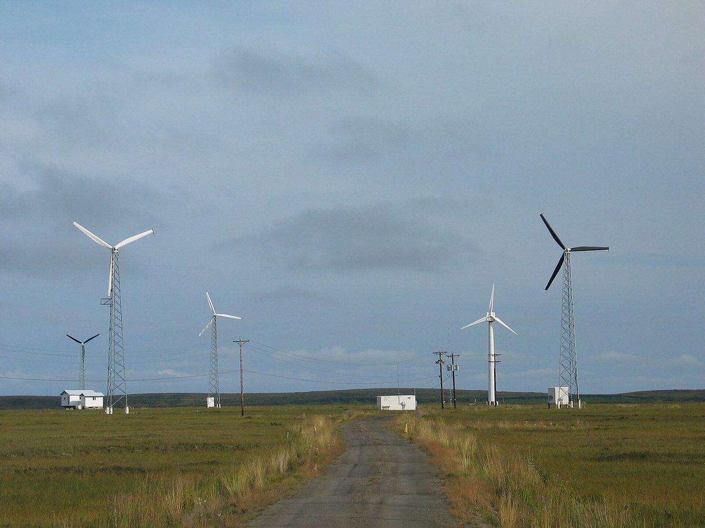
포르투갈 공동 자가소비·재생에너지공동체 가동 사업 2,127건…규칙 손질 뒤 올해 9월까지 142% 늘어
가동 용량 124.1MW, 6월 법령으로 배전망 사전 협의 면제 넓히고 거리 기준 고쳐…공공기관 사업엔 취약계층 몫 최소 10% 목표, 2029년 말까지 조건 갖추면 7년간 CIEG 요금 면제
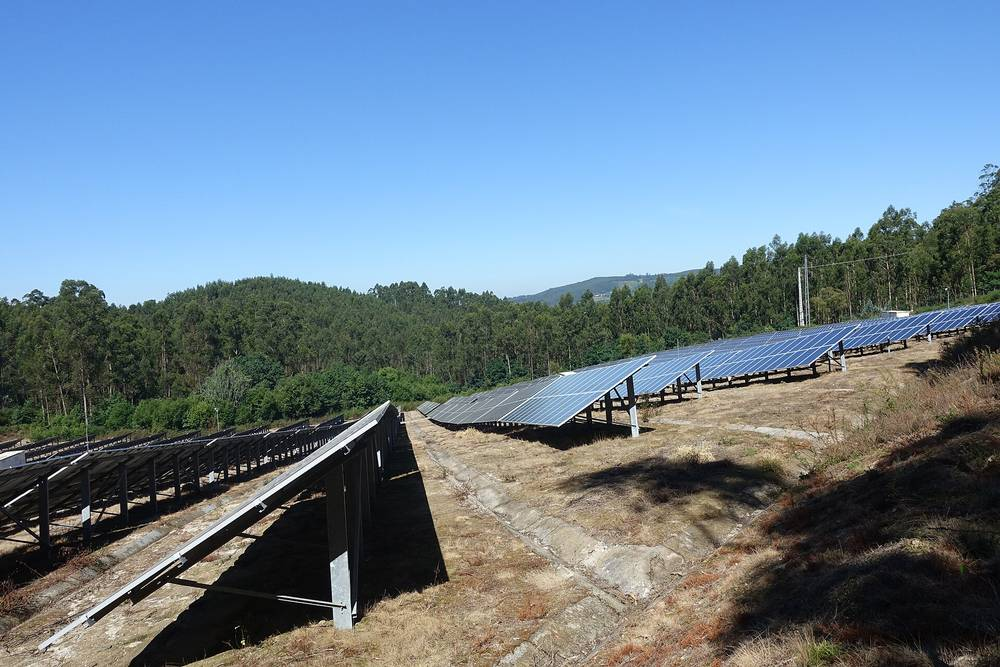
정부 '주민참여 우수사례' 한림해상풍력, 주민 몫 REC 수익에서 주민 회사채 이자 먼저 뗐다…로펌 3곳 "법 위반" 자문 의견
주민법인 3곳이 산 회사채 300억 원의 연 7% 이자를 가중치 0.3 추가 REC 수익에서 충당, 남은 돈만 '이익공유'로 지급…에너지공단 "절차 진행 중", 기후부 "문제 확인되면 개선", 사업자 "주민과 약정, 당국과 협의 중"

독일 마인츠 시민에너지협동조합 UrStrom, 철도회사 지붕 태양광의 남는 전기를 이웃과 나누는 에너지 공유 시범 사업 신청 받아
한 해 약 30만kWh 가운데 3분의 2 남짓은 건물 주인이 쓰고 한낮 잉여 전기를 공공 전력망으로 장부상 공유…조합원 아니어도 참여, 일반 요금보다 싸다는 조합 설명
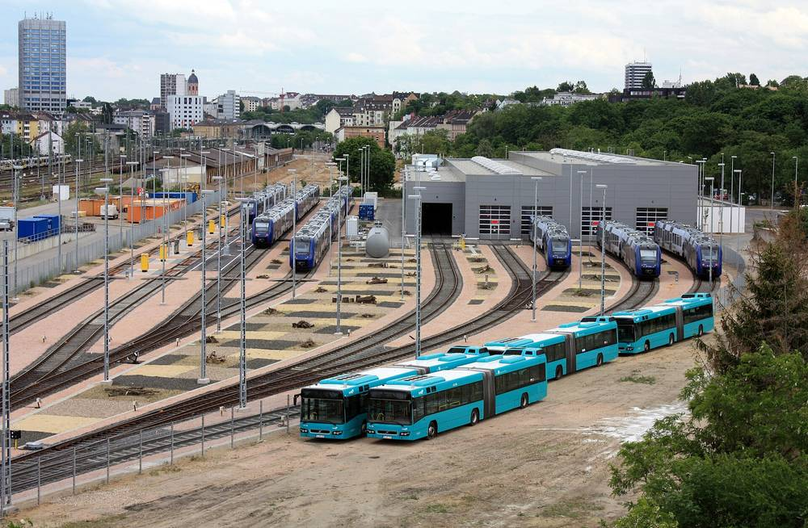
콜롬비아 정부 '에너지공동체' 태양광 사업, 패널 견적가가 시장가보다 높다는 문제 제기…대부분 공정 50% 못 미쳐 연말까지 연장 요청
2025년 말 공기업 3곳과 계약 17건·9,140억 페소, 2만8,544가구에 패널 6만221장…정부·전 차관 "가구당 비용으로 보면 과다 비용 없다"
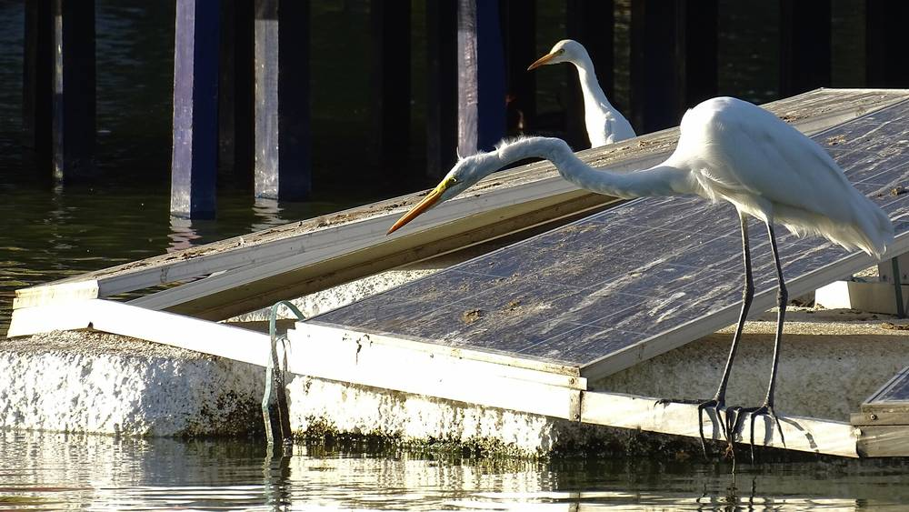
프랑스 랑드 생폴레닥스, 옛 폐기물 적치장에 4.57MWc 시민 태양광…주민 투자 조직 CIER40 따로 꾸려
코뮌·에네르코프 누벨아키텐 등이 사업 회사에 참여하고 대출·공공 자본·시민 참여를 섞어 400만 유로 넘게 투자…랑드도는 태양광 1,413MW로 프랑스 도 가운데 1위지만 에너지 소비 감축은 4.2%에 그쳐
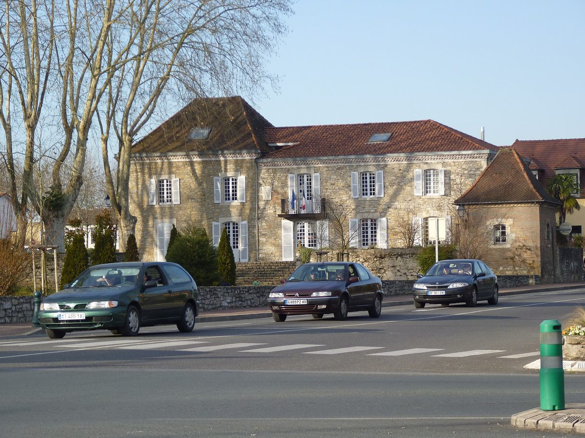
스페인 에너지공동체 837곳 중 가동 27%…정부, 11월 29일 선거 전 '에너지공동체 왕령' 긴급 처리 추진
조합원 20명 미만이 39.1%로 가장 많고 설치 뒤 자가소비까지 최대 2년 지연…공동 자가소비 거리 5km·자가소비 관리인은 이미 시행, 지원 사무소 1차 74곳·1,840만 유로
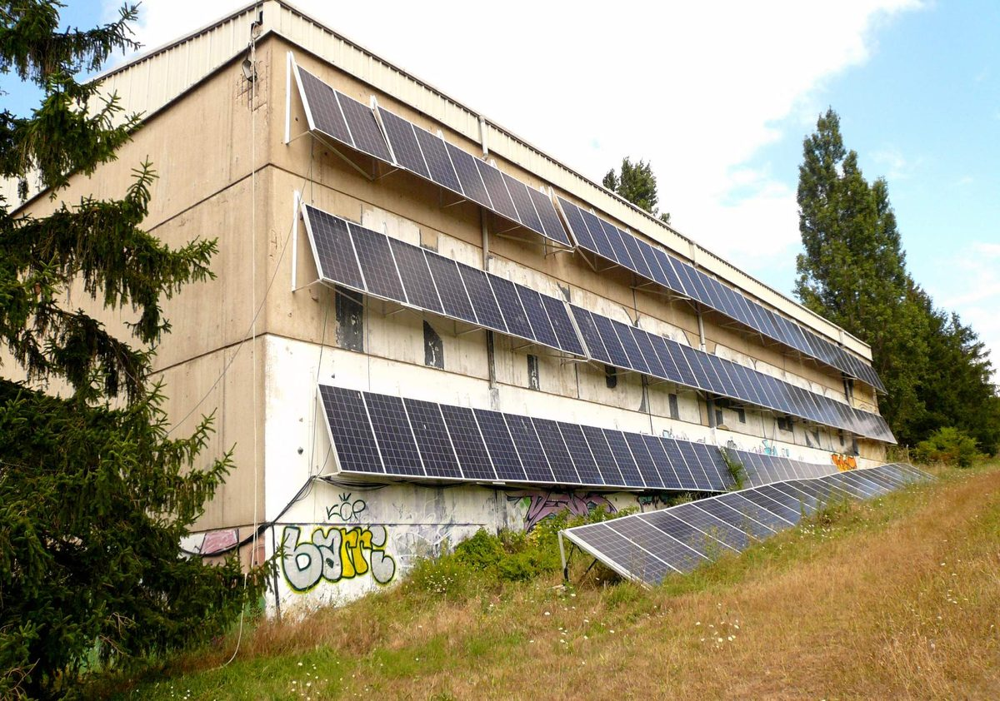
네덜란드 두 마을, 2027년 상계제도 폐지 앞두고 마을 전기 나눠 쓰기 준비…바를란트는 협동조합과 타당성 조사, 테르헤르너는 에너지공동체가 마을 배터리 검토
바를란트는 건설사 지붕 태양광 전기를 이웃 가구와 나눌 수 있는지 12월 1일까지 참가 가구 모집, 주민 약 750명에 여름 관광 숙박 약 6,000개가 차는 테르헤르너는 태양광 있는 집·없는 집 모두 혜택 보는 방안 찾아
아르헨티나 헤네랄 마다리아가 전력협동조합, 조합원 총회서 1MW 태양광 발전소 만장일치 승인…도시 낮 시간 전력 소비 20% 직접 생산
패널 1,620장에 땅 1~1.5헥타르, 넓힐 여지 두고 3헥타르 이상 확보 추진…시 소유 부지 협의 중, 사 오던 전기 줄여 아낀 돈은 모두 서비스 개선에 재투자
아르헨티나 네우켄 마푸체 공동체, 18MW 태양광 '안투' 지분 34% 가진 공동 개발자…인허가 마치고 전력 구매자 찾는 중
공동체 땅 9,500헥타르 가운데 42헥타르를 주민이 직접 골라…두 기업이 33%씩, 토지 용익 계약은 따로…금융 조달 마감 전, 대형 소비자와 장기 계약이 과제
독일 지자체 3곳이 세운 풍력단지에 주민 450명, 2시간 반 만에 600만 유로 빌려줘
바이에른 '호폴딩어 포르스트' 3기 16.68MW, 연 6%·10년 후순위 대출로 주민 참여…작센안할트 베틴뢰베윈은 개발사 없이 주민 출자 풍력 최소 8기 추진
프랑스 낭트 경기장 주차장에 태양광 그늘막 6기…지자체 회사 3기·시민 출자회사 3기 나눠 짓는다
라 보주아르 주차장 패널 4,500㎡·연 1.1GWh 추정, 지름 2km 원 안 기업에 고정 요금 판매 추진…시민 주주 150명, 7개 시·읍 공영주차장 9곳으로 넓힌다

프랑스 오리냐크 시민 태양광 설명회에 80명 넘게 모여…주변 약 20km 집 지붕 모아 '1인 1표'로 운영
면사무소·제3의 장소 라 글리사드·ECLR 옥시타니·PETR 함께 추진, 지역자연공원 지원…설치 후보지 몇 곳 확인·가치 헌장 작성 뒤 지붕 주인 참여 호소, 용량·사업비는 아직 안 나와
아르헨티나 네코체아 배전 협동조합 '우시나 포풀라르', 조합 땅에 3MW 태양광 부지 정리 시작…해안 마을 500kW도 추진
도매시장 전력 구매비 줄여 배전망·변압기 교체에 돌린다는 구상…같은 주 발카르세 전기협동조합도 본관 지붕 패널 60장 이어 30ha 부지 단지 구상, 두 조합 모두 사업비·일정은 안 밝혀
네덜란드 데벤터르 A1 풍력 4기 첫 주민설명회…에너지협동조합 '지역 소유' 내세웠지만 이웃 주민 반발
데벤터르에너지·로험에너지 협동조합과 퓌어 에네르지·에네코가 날개 끝 높이 280m 발전기 4기 추진…추진 측 연 6만 유로 주민기금 설명에 반대 단체는 출자 수익과 소음 피해가 따로 논다고 맞서
아르헨티나 부에노스아이레스주, 전기협동조합이 조합원 쓸 재생에너지 직접 생산하는 '법 15.665' 시행…주립은행 장기 저리 융자 길 열어
시 배전 영업권 가진 협동조합·혼합경제회사에 '공동체 자가발전자' 지위…생산 전기는 배전 공공서비스로 보고 여러 조합 공동 발전 허용, 남는 전기 팔려면 주식회사 형태 필요

햇빛소득마을 수익, 마을 돌봄·공동급식에…이천시장·구미 대원1리 이장 구상 나와
성수석 이천시장 "주민 협동조합 햇빛소득으로 마을 통합돌봄", 1,000kW 수상형 조건부 선정된 구미 옥성면 대원1리는 "수익 생기면 공동급식"…둘 다 구상 단계, 규모·시기는 안 나와
캐나다 하이드로원, 새 500kV 송전선 '원주민 공동체 최대 50% 공동 소유' 제시…와사우크싱 부족 설명회서 환경 보호·결정 참여 요구
서드버리~배리 약 300km 송전선, 2032년 가동 목표…공동 소유자는 규제기관이 정하는 수익률(지금까지 8~10%) 받는 구조, 하이드로원 "1970년대 기존 선로는 제대로 된 협의 없이 지었다" 인정
미국 투손, 민간 전력회사 영업권 25년 갱신 11월 3일 주민투표…공공전력 시민 모임 반대 운동
투손 전력(TEP) 해마다 200만 달러 에너지 지원 약속, 25년 약 6,400만 달러…반대 쪽은 시가 공공 인수 추진해야, TEP는 부결 땐 공사비 늘 수 있다고 경고
프랑스 협동조합 은행 라네프·전력협동조합 에네르쿠프, 재생에너지 예금통장 내놔…10유로부터, 이자 최대 100% 에너지 빈곤 단체에 기부
예금은 라네프 전체 대출 재원으로 들어가 지역에 뿌리내린 시민 운영 사업을 우선 지원…라네프 2025년 재생에너지 72개 사업에 3,900만 유로 대출

스페인 엘프라트 '시민 에너지 공동체', 공유 태양광 지붕 4곳에서 19곳 1MW로 늘려…낮 시간 1,500가구분, 요금은 판매사보다 50% 낮게
시청 40%·지역 기업 40%·사용자 협회 20%가 지분 나눈 비영리 법인…지붕·투자 없이 가입만으로 참여, 밤 공급 위한 공동 배터리는 규제에 막혀 시범 단계
말레이시아 사바 원주민 사회적기업 토니붕, 유엔 말레이시아 혁신상…주민이 계획·건설·관리하는 재생에너지 설비 40곳 넘게 지원
페남팡 코불루 소수력, 주민 주도 개량으로 10kW→20kW 두 배…주민이 운영하고 주민이 합의한 요금으로 유지비 마련
스페인 우에스카 관개 공동체 5곳, 공동 회사 세워 태양광 관개 추진…산미겔 1,820kW 자가소비
EU 혁신기금 사업 CO2-FrAMed에 보조금 435만6,000유로·은행 신용한도 740만 유로, 다섯 공동체가 구성한 회사가 설비 자금 조달·건설·운영 맡아…첫 10년 이산화탄소 약 1만7,700톤 감축 추산
호주, 재생에너지·송전 개발사 등급제 공개 가동…첫 평가 5개사 중 3곳 공동체 참여 5성
에너지기반시설 위원, 7개 기준 독립 평가 결과 온라인 공개…5성 기준은 깊은 이익 공유와 공식 공동 의사결정, 20곳 넘게 평가 중이며 연방 용량투자제도 11차 입찰부터 참여 의무
미국 유타 16개 지역, 2027년 1월 '공동체 청정에너지 프로그램' 시작…주택 월 4달러 더 내고 저소득 가구는 무료
지자체 협의체 '유타 재생가능 공동체'가 로키마운틴파워와 운영, 주민은 기본 가입되고 언제든 탈퇴 가능…태양광 2곳 최종 계약 협상, 새 청정에너지 최대 500MW 목표
아르헨티나 코르도바 베르로타란 전력협동조합, 첫 태양광 800kW 준공…주택용 조합원 전기요금 15~20% 인하 추산
발전량은 조합이 주 전력공사에서 사 오는 전기의 약 3분의 1, 11월 고지서부터 반영…코르도바에선 배전 협동조합과 손잡은 솔라 공동체 12곳·11.4MW, 업체는 2027년 조합 17곳 40MW 내다봐

프랑스 그랑테스트 시민에너지 지원망 GECLER, 2028년까지 참여 시민 세 배 목표…시민 모임 58곳 돕고 29곳 발전소 가동
지역 단체 3곳이 2019년부터 상담·타당성 조사·법률·재무 지원, 지원 사업 설비 합계 19MW·연 23.5GWh…아르덴 시민 풍력·사베른 공공건물 지붕 태양광·보주 옛 수력 복원 등 조합원 2,000명 넘어
스페인 테루엘 부에냐 에너지 협동조합, 면사무소·주민단체도 조합원…아라곤 첫 '실물 배터리' 공동자가소비 가동 준비
조합원 14명, 태양광 40kW로 계량기 20개 넘게 묶어…약 10만 유로 들여 설비 마쳤지만 배전회사 연결 승인 두 번 무산, 남는 전기 판매 수익은 주민단체가 받아 마을 사회사업에
미국 앤아버시, 시민단체의 '공공전력' 주민투표안에 투표 8일 앞두고 무효 확인 소송…주 법무장관실은 "헌장 수정으로 볼 수 있다"
시의회 10 대 1 결의 따라 69쪽 소장 내…시는 "헌장 개정 절차 안 밟았다", 시민단체는 "막판 선거 결과 바꾸기" 반발, 판결·심리 일정은 아직 없어
네덜란드 아메르스포르트시, 시민 에너지 단체가 낀 이설트 풍력 2기 허가 공식 거부…위트레흐트주, 인허가 권한 회수 결정
개발사 REF와 사먼 에네르히 아메르스포르트의 합작 '윈드 옵 이설트', 시의회의 구속력 있는 반대 의견에 따라 집행부가 확정…시의회는 주 정부에 유감 동의안 23 대 13으로 채택…주는 11월 4일 권한 회수 결정, 결론은 내년 중반 예상
루마니아 옛 탄광지대 지우 계곡에 에너지공동체 지원금 540만 유로…페트로샤니 주택소유자협회가 첫 등록
사업비 98% 지원·자부담 2%, 40가구 공동주택이면 가구당 약 200유로 예시…시민은 협회 법인 세워 에너지규제청에 등록해야, 마감 2027년 3월 31일
이탈리아 알토비첸티노 재생에너지공동체 본격 가동…시 18곳·조합원 169명, 2027년 말 잠재 7.2MW
2026년 1월 운영 시작해 73kW 가동·97kW 곧 추가, 시 체육관 지붕 400kW 등 2.17MW 준비…11월부터 태양광·히트펌프 시민 공동구매
남아공 광산 피해 주민운동 MACUA, 21억 랜드 손반어르 태양광 사례 들어 재생에너지 사업의 지역사회 소유·결정권 법제화 요구
보고서 「녹색 전력, 오래된 불평등」, 주민 의견 없이 계약 맺고 소상공인 혜택도 없었다고 주장…개발사는 주민 805명 고용·교육 내세우며 공공 입찰 밖 민간 계약이라 공동체 이익 요건 대상 아니라고 설명
프랑스 바스크 에너지협동조합 I-Ener, 옛 쓰레기 매립장에 지역 첫 대형 태양광 착공…시민·기업·공공기관에서 100만 유로 모아
생페쉬르니벨 살루아가 발전소 사업비 약 240만 유로, 연 3.1GWh 전량 협동조합 전력판매사에 30년 공급하고 2027년 4월 가동 예정…모금은 조합 지분과 연 3% 조합원 대출 두 갈래, 의결권은 시민 40%·노동자 20%·공공기관 20%
프랑스 사부아 지자체·협동조합 8곳이 함께 지은 알프쾨르 에네르지 5MWc 태양광 준공…산업단지 놀던 땅 5ha에서 연 6.5GWh
코뮌 연합체 쾨르 드 사부아 주도로 5년 준비, 전력 협동조합·혼합경제회사·마을 발전소 협동체 참여…전기는 단지 기업과 직접 계약해 지역에서 쓰고 에네르지 파르타제 인증도 받아
미국 켄터키 렉싱턴, 폐매립장 태양광에 '공동체 이익 협약'…저소득 가구 에너지비 지원·직업훈련 자금 의무화
시의회, 헤일리 파이크 매립장 개발사와 10월 22일 협약 승인…사업 관련 면허세 보고하게 해 수입 추적, 시는 "미국 최대 매립장 태양광" 주장

미국 미시간, 11월 3일 전력회사 정치자금 금지 주민투표…시민 56만 명 서명으로 올린 제안 2호
전력·가스 회사 PAC의 후보 직접 기부와 임원·이사·가족 기부까지 막는 안…찬성 측은 비싼 요금·잦은 정전이 전력회사 입김 탓, 반대 측은 표현의 자유 침해·영향력이 전국 거액 기부자로 옮겨갈 뿐
미국 캘리포니아 뷰트 카운티, 1,700에이커 태양광 개발사의 지역 이익 협약안 결정 미뤄…주민들은 환경평가부터 요구
주 허가 절차(AB 205)로 카운티는 허가권 없고 개발사는 지역 기관·비영리단체와 맺은 협약안 내야…연 30만 달러·소방서 부지·소방 50만 달러·보안관 25만 달러 제안, 카운티가 거절하면 다른 비영리단체와 맺을 수도
미국 앤아버 시영 전력 투표 앞두고 자금 격차…주민단체 누적 현금 약 6만 달러, DTE 지원 반대 단체는 누적 지출 170만 달러 넘어
7월 21일~10월 18일 보고 기간 찬성 단체 주민 소액 기부로 2만7,000달러 넘게 모아…반대 단체는 같은 기간 현금 4만 달러에 DTE 현물 7만9,000달러 넘게 받고 투자자 소유 전력회사 단체도 가세, 투표는 11월 3일

스페인, 학교 지붕 햇빛을 이웃과 나눈다…이비사 초등학교 40kW 중 27kW 주민에, 산타폴라는 학교·체육관 200kW로 에너지공동체
발레아레스 정부, 산조르디 초등학교 지붕 전기를 반경 5km 가정·소상공인에 1kW당 연 100유로로 나눠 약 300유로 절감 추산·취약가구 우선, 11월 9일까지 신청…알리칸테 산타폴라는 100kW 2곳으로 가구·상점 200곳 수요 최대 50% 충당
태양광 1위 캘리포니아에 커뮤니티 솔라가 없다…2022년 법 만들고도 교착, 뉴섬 주지사 AB 1813 거부
규제기관 CPUC는 2024년 결정권을 전력회사 쪽에, 회피비용으로 값 매기고 배터리 붙인 새 법안은 9월 거부권…시민·노동·환경단체 연합 2027년 재추진, 개발사는 제도 있는 22개 주로 투자 돌려
미국 미시간 '커뮤니티 솔라' 법안, 2021년 뒤 6건 나왔지만 모두 표류…하원·상원 4건 위원회에 묶여 청문회 일정도 없어
저소득 가구 몫 40%·요금 최소 10~20% 절감 담은 하원안까지 나왔지만 DTE·Consumers Energy "미가입자에 비용 전가" 반대…앤아버는 시 에너지공사로 가정에 태양광·배터리

폴란드, 도시 주민도 에너지협동조합 만들 수 있게 법 고쳤지만…EU 국가보조 심사에 묶여 시행 멈춰
2025년 10월 개정법에 도시 조항 넣었으나 EU 집행위 긍정 결정 때까지 적용 정지…기후부 올해 안 결론 기대, 시민단체는 전기를 팔 수 없는 협동조합이라 경쟁 해치지 않는다고 주장
스페인 카탈루냐 오소나 에너지공동체 20여 곳, 마을 4곳 도는 '에너지 투어'로 경험 나눠…카탈루냐 118곳 중 28곳이 오소나에
군 지역에너지청·협동조합 OECOOP 주최로 비크·산페레데토레요·토레요·발레냐 공동체 방문…오소나·류사네스엔 협동조합형 29곳, 주민 96%가 자기 마을 공동체에 참여 가능
루마니아 탄광지대 고르지·돌지 군, 에너지공동체에 EU 기금 98% 무상 지원 공모…시민·아파트 주민회도 직접 신청
고르지 4,157만6,941유로·돌지 352만9,411유로 배정, 신청은 2027년 3월 31일까지…그린피스 루마니아, 40가구 아파트 한 동이면 자부담 8,000유로 예시 들며 11월 주민 워크숍
스페인 무르시아주 에너지공동체 19곳 생겼지만 발전 중은 4곳…지자체가 공공건물 지붕 내주고 취약가구에 전기 나눈다
로스알카사레스, 공공건물 지붕 4곳 내주는 대가로 생산 전기 10%를 에너지빈곤 가구에…선구 공동체는 정부 보조금 12만4,000유로 정산 못 받아 대출로 공사
영국 최대 공동체 소유 태양광 '데릴워터', 배전망 회사가 넉 달 발전 막아 재정 위기…조합원 9,500명 협동조합
북데번 40MW 단지, 변전소 변압기 차단 여파로 5월부터 여름 내내 멈춰…배전망에 연결된 작은 발전소는 출력제한 보상도 못 받아
영국 셰틀랜드 노스마빈 마을계획 초안, 공동체 이익 없는 대형 에너지 개발은 제한…작은 공동체 소유 사업은 지지
노스마빈 공동체개발회사가 주민과 만든 10년 계획…두 번째 해저 송전선 상륙 후보지 에샤네스에 우려, 11월 19일까지 의견 받아
미국 뉴욕 사우스브롱크스 주민들, 옛 뉴욕포스트 인쇄공장 터에 물류창고 대신 태양광 갖춘 청정에너지 거점 요구
주민단체·공동체 토지 관리단체가 10년 다듬은 구상…주지사·주 교통부에 물류개발사와 거래 거부·타당성 조사 지원 요청, 프롤로지스는 매입 계약 상태 아니라고 밝혀
독일 시민에너지연합, EEG·전력망 패키지 분리 처리 요구…연말 EEG 만료 앞두고 입법 지연
EU 승인에 필요한 부분부터 먼저 통과시키자는 제안, 연방하원 표결 연기로 신규 풍력·태양광 지원 공백 우려…소형 지붕 태양광 지원 종료·출력제한 보상 축소도 쟁점
미국 밀워키 주민단체 월넛웨이, 110만 달러 확보해 1MW 주민 소유 태양광 추진
맥나이트재단 회수형 보조금 100만 달러 등…2027년 12월 가동 목표, 8년간 주민 소유 태양광 50MW 장기 구상
시민발전협동조합들, RPS 개편안 폐기 요구…신규 태양광 공기업·대형 발전사 몰아주기 비판
2030년 태양광 목표 87GW 중 38.2GW는 9개 발전공기업, 12.8GW+α는 500MW 이상 민간 발전사·공공기관에…시민참여·분산에너지 원칙 보장 촉구
市民エネルギー·太陽光所得村
【釜山型太陽光所得②】企業PPAでは収益率2%台…「釜山市が電気を買い、排出権費用を節約」
釜山研究院「固定価格の上限150ウォン未満、駐車場の太陽光は145ウォンで売れば元本も回収できない」 / 釜山市の排出権購入費は7億ウォン台から20億ウォン超に…市がPPA購入者になれば内部収益率5%超 / 電力取引所「直接PPAの300kW以上高圧要件の緩和を検討」 / 自由討論で「協同組合に任せて」…送電線1.4km・部署の縦割りを指摘
【釜山型太陽光所得①】公共用地10MWに市民45億ウォン…2027年1月に試験公募
釜山市が17日、旧市長公館トモホン（道母軒）でエネルギー新産業協業ネットワークフォーラム / 2030年まで毎年2.5MW、事業費150億ウォンのうち市民30%・PF 70% / 釜山テクノパーク「政府の太陽光所得村は80%が条件付き選定…用地・販路・資金・信頼をワンストップで支援」
「ひかり所得村」第3次公募の結果は12月末発表…「自己負担15%・用地・系統計画が成否を分ける」
第1・2次で523村を選定、第3次には200余りの村が申請 / 春川・ソルバウ村は村の基金で出資し年1億1,000万ウォンを福祉費に
高興郡「10GWエネルギー大転換、収益は郡民エネルギー年金に」…世界太陽光発電会議で公共主導の営農型1GW・陽光所得村構想を公開
16～19日の大田での会議に広報館…住民が提案した345kV送電線の国家計画反映を推進、洋上風力予備地区の指定も準備
羅州・大実村の住民参加型エネルギー自立モデル、アジア10カ国のエネルギー関係者35人に紹介…セネガルへの500万ドルODAにもつながる
ADB招請訪問団が、太陽光・小型風力・ESSで農機の充電や村の会館・スマートファームを運営するリビングラボを見学…太陽光所得村の推進相談も
江原・高城の第1号「太陽光所得村」長新1里400kW、来月完工…年8,129万ウォンの収入見込み
第2号の禾谷里993.3kW・16億5,000万ウォンは今月現地評価、郡は公約の15カ所を目標に屹1里など13カ所の候補地を点検
平昌郡、公共主導の陸上風力200MWで「風の年金」へ第一歩…18日に東西発電・江原開発公社と協約
芳林・道沙里・興亭の3団地、郡の持分配当と超過利益で利益共有基金を造成…1人当たり還元額・支給方式は未定
江原道の境界地域4郡「軍の遊休地・日差し・水でエネルギー連帯を」…営農型太陽光の郡民ファンド、発電収益を基本所得に
鉄原・華川・楊口・麟蹄の政策フォーラム…「鉄原の農地の6割は外部所有、発電収益が外へ流出」、鉄原の太陽光と華川の揚水発電を結ぶ「境界地域エネルギー協力圏」構想
南オーストラリアの集合住宅住民にも「共同太陽光・蓄電池」…連邦・州政府が1,780万豪ドル支援、設置費の半額補助と残りは無利子融資
「StrataCharge」事業、1物件あたり補助金・融資それぞれ最大4万7,500豪ドル…所有者も賃借人も電気料金を節約、南オーストラリアでは12人に1人が区分所有建物に居住
米国・カナダの先住民5万世帯に太陽光と蓄電池…先住民の非営利団体が25億ドルの募金へ
Indigenized Energyとグローバル・シチズンの共同キャンペーン、2027年に最初の事業を目指す…「共同体所有」のエネルギーを強調
清州の17村が「日差し所得村」第3次公募に申請…太陽光1万6,082kW・設置費236億ウォン
第1・2次で選ばれた4村は事業化準備…清州市「系統連系がカギ、12月の小規模公益型優先接続に期待」
京畿道の公共RE100太陽光、3年間で稼働停止1,914日…「RE100所得村」は3市郡に58.8%集中
池英一京畿道議員が行政監査で「設置より生産」の成果管理を要求…住宅太陽光は目標10万世帯の49.3%
済州のイ・チャンフム初代気候経済副知事「風と日差しの利益を道民の所得に」…住民参加型事業を道民ファンドへ拡大
2035年炭素中立目標、約2GWの楸子洋上風力を最優先…新規発電事業に住民が債券・ファンドで投資、共有化基金は脆弱層・共同体の財源に
米アナーバー市の公営「持続可能エネルギー・ユーティリティ」、低所得世帯まで拡大…2027年に市全域へ開放
ブライアント地区の90余世帯に屋根置き太陽光と蓄電池を設置したパイロット事業の次の段階、新たに20カ所設置
全南光州市議会「系統につなげない太陽光は希望拷問」…ひだまり所得村126カ所のうち即時接続できるのは5カ所だけ
シン・ミンホ議員がエネルギー産業本部の行政監査で指摘…霊光・月坪村の1MWに18億ウォン投じたが収益ゼロ、「小規模農家優先・住民の均等参加を保障すべき」
独バイエルン州イーゼンの市民風力協同組合、組合員470人・出資金80万ユーロ…「着工は数年後、今は準備段階」
「市民エネルギー・イーゼンタール」が経験共有イベント…住民所有の風車7基を運営するフクスタールの元村長「お金が村に残る」
イタリア・サヴォーナ市、リグーリアの「連帯型再生可能エネルギー共同体」に参加…市が電力を生産・消費する「プロシューマー」に、恩恵は脆弱世帯へ
市執行委員会の承認を経て市議会の採決を残す…共同体の収益をエネルギー貧困世帯の支援に回す「CERSリグーリア」、気候行動計画（SECAP）の課題の一つ
米ミネソタの電力協同組合クロウ・ウィング・パワー、組合員に約300万ドルを還元…11月の電気料金から差し引き
2010年分の出資配当111万1,000ドルに、卸売協同組合が割り当てた1992～1998年分182万7,000ドルを加える
モヘッのヘッサルグリーン協同組合、商業運転の太陽光1,427カ所・176.1MW…1カ月で46カ所増
組合員の投資金3,497億5,000万ウォンのうち出資金は15億2,700万ウォン…10月の発電売上はSMP下落で6.8％減
米ラッパハノック族、旧首都跡の教育施設に屋根置き太陽光…先住民企業が助成申請から設置まで無償で
12.32kW・パネル28枚、稼働後約2MWhを発電…費用は「部族太陽光加速基金」から
「水原ひだまり発電」の青写真…公営駐車場13カ所5MWから20MW・328億ウォン、公共の配当は気候対応基金に
水原市・水原都市公社・エネルギー協同組合が参加、市民ファンドで利益分配…16日に市議会で設立説明会
横城郡の日差し所得村が5カ所に…下垈里・龍屯里に続き鶴谷1里・三巨里・梅日2里が2次選定
下垈里は住民協同組合が1MWの太陽光を推進、1次の「即時着手」9カ所に…郡は説明会・組合設立・系統協議を支援
全南光州市議会「日差し所得村は選定後こそ重要」…緑色エネルギー研究院に竣工後の技術・経営支援を要求
朴元鍾エネルギー産業山林委員長が行政監査で指摘…研究院「会計法人とAI精算システムを導入中」
カナダ・カルガリーの電気・ガス小売会社、利益の100％を地域の性的少数者団体へ…「料金が共同体の基金に」
社会的企業Q-TILITIES、代表は無給で5年以内に10万ドル以上の還元目標
ドイツ・ザーベックの住民エネルギー協同組合、1年で組合員380人→574人…新風力に300万ユーロ
建設中のジニンゲン・ミッデンドルフの風力タービンに住民資金が集中…組合資産も大きく拡大
英政府支援の「ネットゼロ・ハブ」「地域エネルギーは住民がエネルギーの主人になること」
イングランドの5ハブのうち北東部・ヨークシャーの責任者「収益は地域に残り、住民が一つになる」
スペイン・サンタポラ市、学校と体育館の屋根200kWで地域エネルギー共同体を発足…住民・商店200カ所の電力を最大半分まかなう
年30万kWh超を生産、発電地点から半径5km以内なら参加可能…電気協同組合グループが事業を支援
ドイツの組合員4万2,000人のエネルギー協同組合プロコンに通信会社も出資…1,266口・6万3,300ユーロ、「配当も再出資」
アミバ運営のSTROTH Telecomが組合員に…「持分数に関係なく1人1票の民主的な仕組みにひかれた」
インドネシア「村の太陽光100GW」に協同組合8万カ所を動員…実際の稼働は1％、「上から作った器だけの組合」と懸念
3年で100GW・約710億ドルの計画…過去の村の太陽光は管理主体がなく「壊れた記念碑」に
ドイツのエネルギー協同組合、女性組合員が少ない…研究所IÖW「参加のハードルを下げれば市民エネルギーはもっと強くなる」、ブレーメンの「女性監査役プログラム」など事例を提示
連邦経済エネルギー省が支援するEPOS研究の政策提言書…分かりやすい言葉、ハイブリッド会議、ボランティア活動の休止容認などを勧告
韓国政府「条件付き選定のひなた所得村も事業化を支援」…ESS構築事業を11月公告、1MW以下の住民参加型太陽光の系統優先接続を12月末施行
行政安全部・気候エネルギー環境部・農林畜産食品部が説明資料…「523カ所中すぐ着手できるのは36カ所」との指摘に、貯水池・備蓄農地・道路法面など遊休国公有地の提供を継続
水原の2つのエネルギー協同組合、市・市民が共に出資する「水原ひなた発電（株）」の設立説明会を16日に開催…2027年上半期の設立目標
12～25日に組合員週間、京畿ひなた自転車道1号・始華湖潮力発電所を見学…太陽光収益と連動し都市林づくりに1,300万ウォン寄付
全南光州の「日差し所得村」126カ所、蓄電池の条件で住民の初期負担重く…イ・ジェチャン市議「廃道・堤防・鉄道周辺まで用地を広げ、住民負担を下げよ」
統合特別市議会の行政監査で道路沿い太陽光など新たな用地の発掘を要求…エネルギー産業本部「仮想発電所事業者を指定し村と協議」
豪シドニーの配電会社、工場・倉庫の屋根の太陽光の余剰電力を賃借人・集合住宅住民と分け合う「コミュニティ電力網」モデル事業にエネルギーマップを公開
オースグリッド、マスコット＝ボタニー・カリンバ・セントラルコースト北部の3地域で接続余力・出力抑制データを公開し太陽光・蓄電池の適地を案内…コミュニティ蓄電池で利益も地域に還元
雪国・長岡で市民65人が「市民共同発電所」…出資金で屋根や農地の上に太陽光、収益は出資者へ
2023年設立の一般社団法人「ながおか自然エネルギー」、学校への出前授業や小水力体験も…「年間日射量は関東の約8割」
米フロリダ州オカラ市営電力の「コミュニティ太陽光サブスク」、6年で廃止へ…最大加入者が抜け17MWのうち2%も残らず
太陽光を使う分だけkWh当たり1.6セント上乗せする方式、住宅の加入は「わずか」…市議会17日採決、12月1日から新規受付停止
イタリア・ヴァルサモッジャの再エネ共同体、25世帯の「共同購入」で太陽光・ヒートポンプを一緒に設置…欧州委「手本となるパイロット事例」
市民・小規模事業者102人の協同組合、2024年発足後に太陽光200kW超を設置…ボランティアが戸別訪問、説明会4回に75人
イタリア・トルトーナに科学技術パーク主導の再エネ共同体…「参加者の電気料金を25～40%削減」
最初の発電所は約200kWで始め750kWまで拡大…トルトーナ一帯の18のコムーネが対象、2026年末の稼働目標
英シェトランド「捨てられる風力の電気で島民の電気料金を下げる」…議会主導の「シェトランド・コミュニティ電力プロジェクト」始動
世帯の40%がエネルギー貧困なのに、103基のバイキング風力は送電が詰まり停止することも…GBエナジー・Ofgem・SSEなどが作業部会に参加、2028年から試行事業を目標
ニューヨーク市に「市営の再エネ開発公社」を…市民団体の報告書「公共蓄電池200MWだけで料金を年1億7,000万ドル削減」
気候・公共電力の3団体が「PowerNYC」を提案…学校・病院・公営住宅の屋根に太陽光・蓄電池・地域熱網を直接開発し、収益を再投資する自立型の公共開発者
スコットランドの送電会社による500万ポンドの「ネットゼロ基金」、住民主導の26事業の支援を完了…「1ポンドで社会的価値2.85ポンド」
SPエナジー・ネットワークスの基金、中部・南部のコミュニティ建物の断熱・低炭素暖房・環境配慮型交通を支援…ワークショップ32回に450人超、22団体に専門助言、CO2を2万5,000トン以上削減
独ペルレベルクの2村の住民が「太陽光団地に反対」…拘束力のない住民意見調査でも開発会社が41ヘクタール計画を断念
デルゲンティンは11人中反対8・棄権3、ジューコウは35人中賛成10・反対19…同じ郡のシルデでも9月の調査で8割近くが反対
独バイエルン・オーバーラントの市民財団20年…郡の補助1ユーロを18ユーロの事業に、それでも「2035年再エネ100%への道は遠い」
ミースバッハ郡の再エネ比率は電力60%、熱25%・交通7%にとどまる…年間エネルギー費4億9,500万ユーロのうち3億500万ユーロが地域外へ
独ケルン・オッセンドルフ、エネルギー協同組合と住宅協同組合が435世帯に賃借人向け太陽光…蓄電池670kWhで電気料金を約10%安く
建物55棟の屋根に750kW、団地の電力の約半分を屋根から…協同組合「2027年のEEG改正で小規模な賃借人電力は建てられなくなる」
送電網の不足で条件付き選定の和順・水洞村、1MWの太陽光所得村を蓄電池で系統接続へ…設置・運営費は民間の統合発電所事業者が負担
49世帯の住民全員が同意した事業…気候エネルギー環境相が11日に現地点検、今週中に太陽光所得村ESS事業者を公募
米デラウェア、商業ビル8棟の屋根に19MW超のコミュニティ太陽光…家や屋根がなくても割引電力を利用
不動産開発会社と太陽光企業が協力、ニューキャッスル郡のデルマーバ電力供給区域…3カ所は州の許認可迅速化の対象
公共が先導する済州・羅州のエネルギー転換…風力共有化基金・羅州型太陽光年金で利益を分け合うも電力網の飽和が課題
済州エネルギー公社が風力59.53MWを運営・翰林洋上風力では住民1,009人が1人年351万ウォン…羅州では許可を得ても建てられない太陽光約2,700カ所
南原の9村が太陽光所得村に条件付き選定…市議会の研究団体「次は事業化」、用地発掘・自己負担支援など5大課題を議論
驪州・九陽里と完州・西峰村の事例を共有…発電収益で無料の昼食・幸福バス、70歳以上に月5万ウォンの敬老年金
淳昌郡、公有財産の用地に「太陽光所得村」100カ所…全北開発公社・韓電と公共主導型発電で協約
2030年までの5年間で用地を共同発掘、開発公社が投資・建設・運営…12月に条例制定、来年1月に住民説明会
米ジョージア州の組合員所有の電力協同組合コースタル・エレクトリック、余剰利益153万ドルを組合員に返す
2011〜2013年に電気を使った組合員が対象…これまで返した出資配当は2,300万ドル超、組合員は2万人余り
米カリフォルニアのソボバ先住民部族の消防署、太陽光マイクログリッドにバナジウムフロー電池を追加し停電時も10時間以上持ちこたえる
GRIDオルタナティブズが州エネルギー委員会の支援で開発…山火事の最高危険地域、24時間を超える停電も経験
メキシコ・プエブラの農民、研究所と畑の上の太陽光コミュニティ実験…5kWモジュールで肥料工場・加工・3世帯に電気
サンティアゴ・ハリツィントラ村のトナティウ事業…決定は村の総会で、発電した電気を複数の家に分ける方法はまだ課題
EU、市民主導のエネルギー共同体10団体に初のガバナンス革新賞…賞金総額100万ユーロ
6カ国10団体を選出…スペインのマンサ・エネルヒア（만사 에네르히아）が最高額の35万ユーロ
オランダのクラリンガーポルダー熱協同組合、地熱プロジェクトADLと熱供給契約に署名…2029年第4四半期の供給を目指す
熱容量25MWthの地熱源、初の掘削は2028年半ばに計画…温室農家と建物に熱を供給
イタリア・バーリ都市圏初の再生可能エネルギー共同体「チェル・ノーヴァ」が発足…都市圏は学校施設の電力消費で参加
都市圏市長とジョイア・デル・コッレ市長が設立証書に署名、市民・中小企業・第三セクター団体も創設メンバーに
スペイン・バスクのオンダリビア市、地域エネルギー共同体づくりに向けた住民説明会を3回開く
11月18日、12月10日・16日の午後6時…構成方法・組織・設立手続きを順に議論、市「住民の意思次第」
スコットランドのSSENトランスミッション、送電設備近くの住民に162万ポンドの地域基金の設計について意見を求める
レアーグ・ロガート住民対象のアンケートは11月16日〜12月14日、説明会3回…「サウス・ロッホ・シン地域基金」は2027年開始予定
「日差し所得村」選定436カ所のうち、すぐ着手できるのは23カ所…河川区域・韓電の系統・「洞」の名称が壁に
政府は今年700カ所の選定を目標に加速…自治体の規制と送電網不足で現場は止まっている
スコットランド住民の10人に7人「学校・公共施設の屋根に太陽光を」…反対は6%
業界団体の世論調査、新築住宅の太陽光義務化に賛成59%・自宅近くの太陽光発電所は賛成43%対反対22%…「政府・自治体は行動に移すべき」
英ナショナル・グリッド、ブライス変電所の増設地域に最大106万ポンドのコミュニティー基金…使い道は住民の意見を聞いて決める
データセンターとバーウィック・バンク洋上風力をつなぐ変電所の第1・2段階に53万ポンドずつ、12月6日まで4週間の意見募集…基金は来年夏に始動
韓国「日差し所得村」選定522カ所のうち490カ所が「条件付き」…国会予算委で「着工はほぼゼロ、ブローカーが住民を押しのける恐れ」
2027年度予算案審査の全体会議、来年2,200カ所に拡大する計画に予算は利子補給285億ウォン中心…営農型太陽光の150億ウォンも研究・制度基盤に偏ると指摘
英サウスケンブリッジシャー、今年は住民の気候事業14件に17万1,000ポンド…村の集会所の太陽光や芸術センターのヒートポンプを支援
2019年から住民事業110件に100万ポンド超を支援してきた「ゼロカーボン・コミュニティー」基金…申請団体は23から37に増加
英シェトランドの住民アンケート、回答者の87％が「エネルギー開発の停止か一時凍結を」…2,655人が回答
開発反対団体「サステナブル・シェトランド」が全世帯に配布…「すでに英国の再エネに大きく貢献」が80％超、送電線の地中化に賛成が85％近く
環境法団体クライアントアース、ブルガリアとクロアチアをEU欧州委員会に申し立て…「市民エネルギー共同体を阻む規則」
クロアチアで正式登録された市民エネルギー共同体は3つだけ、うち1つは事実上停止…7月のポーランド・ハンガリーに続きEU再エネ指令の履行を問う
龍仁市政研究院「半導体のRE100需要を市民の所得に」…市民投資・住民参加・公共資産太陽光を盛り込んだ利益共有モデルを提案
イシューリポート「YRI Insight 119号」…発電収益の共有、施工・保守への住民参加、政策金融と市民投資の連携、隣接市郡との広域協力など5つの方策
韓国の信用協同組合「信協」、市民太陽光から洋上風力・「日差し所得村」まで再エネ金融を拡大…村の発電施設資金を最大85％融資
安山市民太陽光発電協同組合の発電所60カ所建設を支えた経験を生かし、高敞洋上風力に1,000億ウォンの連携融資、エネルギー公団の利子補給で村の負担軽減
ドイツ・メーネゼーの風力事業者、収益を分かち合う市民・エネルギー財団を計画…議会は運営委員会の同数構成をまず定款に明記するよう要求
ノルトライン＝ヴェストファーレン州法が定める住民の利益参加の方式をめぐり1年で議会の決定が覆る…財団案が本当に住民を参加させるのか疑問も
スコットランド住民の70％が公共施設・新築住宅への太陽光拡大に賛成、反対は6％…自宅近くの太陽光発電所も賛成43％で反対の2倍
ソーラー・エナジー・スコットランド委託の世論調査、設置したくてもできないとの回答38％…スコットランド政府は地域再エネ支援を1,500万ポンドに増額
イタリアのエネルギー協同組合ènostra、2029年までに自前の発電を3倍・組合員2万8,000人目標…新規発電投資450万ユーロは組合員の出資で
10月末の組合員向けウェビナーで2026~2029年戦略計画を発表…顧客への供給電力は約60GWh→100GWh、出所を追跡できる電力の比率は20%→40%、「社会的企業」への転換も検討
ドイツ・ノルトハルベンの1919年創立の住民電気協同組合、年末で電力供給を終了…住民の75%が顧客
村の住民1,467人のうち約1,100人が組合の電気を利用…同じ地域の供給会社「grüün」に続く2件目の撤退、村長は住民への説明が必要との考え
ポルトガルの農村抵抗ネットワーク「ブラバ」発足1年、35の地域団体を支援…エネルギー転換は住民の声を聞き分散型であるべき
大規模太陽光発電所やリチウム鉱山に反対する団体を法律・財政支援団体と結ぶ、反対するのは転換ではなく大企業への富の集中だと主張…6日にリスボンで1年の総括集会
プラチナ大賞、地熱発電の売電収益を地域の防災に充てる事業に大賞…匝瑳市の市民による営農型太陽光は優秀賞
第14回表彰式が東京で開催、最終審査11件から大賞3件…耕作放棄地を再生しつつ売電収入の一部を耕作委託料に回す千葉県匝瑳市の市民団体の取り組みも受賞
米ボルティモアの市民団体、民間のBGEに代わる市営電力を求める運動…市議15人中4人と新たな当選者3人が「BGE献金拒否」に署名
データセンターへの反発と料金高騰の中、2025年に発足した「ボルティモア公営電力」…BGEは4年で77億ドルの投資と年1億5,610万ドルの値上げを申請、過去25年の公営化の試み64件のうち成功は7件
ルーマニア、集合住宅の太陽光をめぐる法案3本が議会手続きに…市民団体案は共用屋根の売電収入の最大85%を管理費から差し引く
プロシューマー・エネルギー共同体協会（APCE）が2本を提案…ベランダ太陽光はパネル4枚・800VA以下で届け出のみ、共用屋根は所有者の3分の2の同意、別の法案は非参加世帯への負担転嫁と配当を禁止
京畿道・西水原・月岩インターチェンジの遊休地2万7,000㎡に太陽光発電所が竣工…協同組合26団体・道民1万1,000人余りが参加
2023年の京畿RE100ビジョン宣言後に用地を賃借、2025年2月着工…設備容量・事業費・収益配分の方法は公表されず
フランス・アルザスの「三国国境」住民4人、市民エネルギーの会EC3Fを結成…1株108ユーロの出資で屋根置き太陽光の共同所有めざす
2022年のサン＝ルイ広域連合の説明会で出会い2023年末に独立、市民協同組合「エネルジー・パルタジェ・アン・アルザス」の地域グループとして活動…月1回集まり太陽光を載せる屋根を探し、集団自家消費事業を準備
プエルトリコの市民団体カサ・プエブロ、屋根置き太陽光の余剰電力をkWh当たり7～8セントで買い取る「プエブロ・ソーラー」を提案
団体集計で自家消費型太陽光は約26万1,000世帯、分散型太陽光は約1,456MWでメタンガス発電設備1,391MWを上回る…送配電事業者への買い取り義務化、昼間の安い料金、コミュニティ太陽光や協同組合で屋根のない世帯も参加
オランダ・アッセンの協同組合太陽光発電所、相殺制度廃止で200万ユーロの蓄電池が課題に…収益の寄付から低所得世帯への安価な電力の直接供給へ
組合員300人の非営利組合「アッセンス・フード」、A28アッセン西インターチェンジ脇のパネル2,800枚超の発電所を再設計…2027年1月の相殺制度廃止と逆潮流費用で蓄電なしでは採算合わず、蓄電池設置には新たな許可が必要
大田市議会、「太陽光所得村」公募に「法定洞」を含めるよう求める建議案を採択…「『里』でないため申請すらできない」
キム・ミヒ議員が代表発議、議員19人が共同発議…2027年の公募から洞地域の参加と評価基準の整備を要求、大田市は4年間で市費34億ウォンの「大田型太陽光所得村」を構想
ポーランド・オドラヌフなど3自治体のエネルギークラスター、公的資金3,000万ズウォティで住民の太陽光627カ所…住民負担は設置費の10%
2027年6月までに蓄電設備も併設、市長「クラスター全体では1,500カ所近く」…3自治体は住民に再エネ設備を見せる「エネルギーアカデミー」も計画
デンマーク・ラナス市、2045年の再生可能エネルギー100%自給へ新設備の立地をまず住民に問う…現在の生産の2倍超が必要
市総合計画に付ける再エネ設備計画に先立ち11月4日～12月16日に事前討論、移動相談車で6か所を訪問…立地・近隣と自然への配慮・地域に価値を残す方法まで意見募集
アイルランド・オファリー州のファイブアリー・エネルギー共同体、政府のエネルギー賞を受賞…2段階で128世帯が太陽光パネル1,650枚を共同設置
「ソーラー・ミハル」事業で各世帯が再エネ電力を生産しエネルギー費用を削減…国営ボード・ナ・モーナのデリンラフ風力発電所の地域利益基金がSEAI・住民とともに支援、気候・エネルギー・環境相が授与
オーストリアの人口1,700人の村シュタンツ、エネルギー共同体の会員約150人と「村の電気は村で」…農村イノベーション・パートナーシップ8カ所に選ばれ35万ユーロ
自治体統合を拒んで独立を守った村の「Energie.Digital.Stanzertal」事業、2026～2029年に支援…1906～1952年に自ら発電して使った経験を生かし11月5日に住民集会
スペイン・ラパルマ島の市民協同組合「エネルヒア・ボニータ」5年…組合員320人超、学校の屋根8カ所に太陽光626kW
電力の90%を化石燃料に頼る島で火山噴火のさなかに発足した非営利の消費者協同組合、自治州政府と市が提供した学校の屋根に共同自家消費設備…一部は1年以上稼働待ち、組合「配電会社が繰り返す問題の原因」
カナダのハイドロ・ケベック、ニューヨーク向け送電線ケベック区間の持ち分半分をカナワケ・モホーク共同体へ譲渡へ…規制当局に承認申請
建設費11億4,000万カナダドルの58km地下・海底線を3億カナダドルで共同所有の合資会社に…ハイドロ・ケベックが40年間送電容量をすべて買い取り運営も継続、「利用者料金への影響なし」
米国11月3日の地域エネルギー住民投票、最初の集計…キトサップの公営電力・ツーソンの民間電力会社の営業権は反対優勢、ユージーンの大企業負担クリーンエネルギー基金は賛成が先行
キトサップ「提案1号」は反対約60.5%、民間電力会社240万ドル対賛成側約9,000ドル…ツーソン「提案421」は初期開票で反対53.3%、TEPの430万ドルの運動が劣勢に、ユージーン「メジャー20-388」は賛成約58%で発議側が勝利宣言、アナーバーの市営電力案は非公式集計で反対51.83%となり否決
「ソーラーリーグ」長官表彰に麟蹄郡・高霊郡・タルグボル市民太陽光発電協同組合…民間部門の入賞4団体はすべて発電協同組合
第8回大韓民国ソーラーリーグ14団体の受賞が確定、5日に政府世宗コンベンションセンターで授賞式…高霊郡は太陽光所得村の収益を住民福祉基金に、軍浦市は住民・市民発電協同組合と防音トンネル太陽光を企画
イタリア・フォリーニョ市、8市町の公共再生可能エネルギー共同体「チェル・トス」への加入を議論…市議会常任委で与野党おおむね賛成
加入すれば市は20ユーロ、市民は1ユーロを払い、使った電気に応じて支援金…市町の取り分の収益は設備拡大か公共サービスにしか使えないよう縛り、加入の可否は市議会本会議へ
スペイン・バスクのオイアルツン、町役場・エネルギー共同体など10団体が「アロア」10原則…「再エネ発電は非営利・公的主体が、地域共同体の管理の下で」
協同組合・学校・若者グループも署名、「必要かどうかではなく、どう組織するかが問題」…レプソルの風力2件には「不信」、誰でも賛同を申し込める
ポルトガル政府、2027年に「再生可能エネルギー受容計画」…「設置時の一度きりでなく、長年にわたり住民に利益を」
環境・エネルギー相「地域の反発は緊急課題」、近隣住民向けのエネルギー共同体を例に…予算案には一文のみで予算・日程なし、6月の法令が定めた90日の期限も9月末に過ぎる
イタリア・ポンペイアーナ市、学校・市役所・公営駐車場の太陽光と再生可能エネルギー共同体（CER）を一括した民間投資入札…工事費65万7,099ユーロ、21年契約
コンセッション全体の推定価値141万1,638ユーロ、市が事業者に毎年2万9,585ユーロを支払う仕組み…応札は11月27日締め切り・30日開札、提案者の優先権はEU判決を受けて廃止
ギリシャ・コザニのアクリニ住民エネルギー共同体、太陽光35MW分の利益を非課税で寄付として受け取る道…政府法案の条項が意見公募に
国家経済財務省の法案第26条…再エネ管理会社からの寄付は贈与税・所得税を免除、村に不動産を持つ人は他の共同体の組合員でも加入可能に、まだ確定していない
ベルギー・ジェールの市民協同組合による風車7基の計画に住民の支持の手紙373通…公聴の終盤に自治体へ提出へ
エスベエネルジーと協力企業が推進、総出力33.6MW・年87GWhと推定…組合員は1,800人超…反対する住民委員会「ヴァン・ジェレ」は「手紙は記入済みのひな形」と反論…8自治体の意見を経てワロン地域政府が決定
イタリア・シチリアの「ネブロディCER」、トッレノーヴァの幼稚園でエネルギー教育を開始…「学校も費用なしで共同体に加入できる」
組合員約240人の協同組合型再生可能エネルギー共同体、4〜5歳児に再エネとエネルギーの分かち合いを遊びで教える…他校にも広げ、共有電力の利益で学校の電気料金負担を軽くする構想
麗水の4村が「日差し所得村」3次公募に申請…2次の条件付き5村は用地・住民参加の手続きへ、系統が詰まる地域はESS併設を検討
10月30日締め切りの3次追加公募、関係機関の検討と行政安全部評価委員会の審査を経て12月末に結果発表…麗水市「行政支援とオーダーメード型コンサルティングを提供」
エネルギー協同組合の活動家40人、高興の住民参加型水上太陽光と羅州の韓電KDNを訪ね、系統接続と計画立地の中の市民参加を学ぶ
韓国エネルギー情報文化財団と市民発電異種協同組合連合会、11月2〜3日に全羅南道麗水・高興・羅州一帯で研修…「100GW計画立地の履行体制と市民参加」の講義も
春川・梧灘1里、協同組合を設立し「日差し所得村」第3次公募に申請…住民82%が同意、999.75kWの太陽光に13億1,000万ウォン
村の規約上の住民149人のうち123人が同意し必須基準の70%を上回る…同じ史北面の梧灘2里は第1次で条件付き選定、結果は12月末に発表
米ミネソタ州「コミュニティ・ソーラー・ガーデン」制度13年…業界「稼働容量800MW超、他州の手本」、電力会社は「コスト転嫁」と反論
屋根のない賃借人も民間開発事業者の太陽光の持ち分を購読して料金控除…州商務省「最初の10年で3万4,000カ所超に供給」、エクセル・エナジーは「燃料費の約20%を占めながら電力は4%未満」と推計
イタリア・ターラント港、港湾当局主導で「港湾再生可能エネルギーコミュニティー」NETを設立…企業・団体12者が参加、脆弱地域3地区の家族も加入予定
イオニア海港湾システム庁、国のエネルギーサービス公社（GSE）の支援を受けて発足…エネルギー貧困の緩和を目標に掲げ、他の港に移せるモデルを打ち出す
米連邦政府の支援打ち切りで先住民コミュニティのエネルギー事業が停止…アラスカ・コッツビューの風力2,000万ドル取り消し後1年以上足踏み
電力の75%をディーゼルで賄い所得の20%を燃料に…ブルッキングス「政府効率化省が先住民支援4億6,800万ドルを削減」、議会に支援取り消しを防ぐ法律を求める
ポルトガルの集団自家消費・再生可能エネルギー共同体、稼働事業2,127件…規則見直し後、今年9月までに142%増
稼働容量124.1MW、6月の法令で配電網との事前協議の免除を広げ距離基準を見直し…公的機関の事業では脆弱層の取り分を最低10%目標、2029年末までに条件を満たせば7年間CIEG料金を免除
政府の「住民参加優良事例」翰林洋上風力、住民分のREC収益から住民社債の利息を先に差し引く…法律事務所3社が「法違反」との諮問意見
住民法人3社が購入した社債300億ウォンの年7%の利息を、加重値0.3の追加REC収益で賄い、残りだけを「利益共有」として支給…エネルギー公団「手続き中」、気候部「問題が確認されれば改善」、事業者「住民と約定、当局と協議中」
ドイツ・マインツの市民エネルギー協同組合UrStrom、鉄道会社の屋根の太陽光の余剰電力を近隣と分け合うエネルギー共有の試行事業で参加受け付け
年約30万kWhのうち3分の2強は建物の持ち主が使い、昼間の余剰電力を公共の電力網を通じて帳簿上で共有…組合員でなくても参加でき、通常料金より安いと組合が説明
コロンビア政府の「エネルギーコミュニティ」太陽光事業、パネルの見積価格が市場価格より高いとの問題提起…大半が進捗50%未満で年末までの延長を要請
2025年末に公営企業3社と契約17件・9,140億ペソ、2万8,544世帯にパネル6万221枚…政府・前次官「世帯当たり費用で見れば過大な費用はない」
フランス・ランド県サン＝ポール＝レ＝ダックス、旧廃棄物置き場に4.57MWcの市民太陽光…住民投資組織CIER40を別に設立
コミューンやエネルコープ・ヌーヴェル＝アキテーヌなどが事業会社に参加し、融資・公的資本・市民参加を組み合わせて400万ユーロ超を投資…ランド県は太陽光1,413MWでフランスの県で首位だが、エネルギー消費の削減は4.2%にとどまる
スペインのエネルギー共同体837カ所のうち稼働は27%…政府、11月29日の選挙前に「エネルギー共同体王令」の緊急処理を推進
組合員20人未満が39.1%で最多、設置後の自家消費開始まで最大2年の遅れ…共同自家消費の距離5km・自家消費管理人はすでに施行、支援事務所は第1次で74カ所・1,840万ユーロ
オランダの二つの村、2027年のネットメータリング廃止を前に村の電力の分け合いを準備…ワールラントは協同組合と実現可能性調査、テルヘルネはエネルギー共同体が村のバッテリーを検討
ワールラントは建設会社の屋根の太陽光電力を近隣世帯と分け合えるか、12月1日まで参加世帯を募集、住民約750人に夏は観光宿泊約6,000床が埋まるテルヘルネは太陽光のある家もない家も恩恵を受ける方法を模索
アルゼンチン・ヘネラル・マダリアガ電力協同組合、組合員総会で1MW太陽光発電所を全会一致で承認…町の昼間の電力消費の20%を自ら生産
パネル1,620枚で用地1〜1.5ヘクタール、拡張を見込み3ヘクタール以上の確保を目指す…市有地で協議中、購入電力を減らして浮いた資金は全額サービス改善に再投資
アルゼンチン・ネウケン州のマプチェ共同体、18MW太陽光「アントゥ」の株式34%を持つ共同開発者に…許認可を終え電力の買い手を探す
共同体の土地9,500ヘクタールのうち42ヘクタールを住民自ら選定…企業2社が33%ずつ、土地の用益契約は別途…資金調達完了前、大口需要家との長期契約が課題
ドイツの自治体3つが設立した風力発電所に住民450人、2時間半で600万ユーロを融資
バイエルン州「ホーフォルディンガー・フォルスト」3基16.68MW、年6%・10年の劣後ローンで住民が参加…ザクセン・アンハルト州ヴェッティン・レーベユーンでは開発事業者抜きで住民出資の風力少なくとも8基を計画
フランス・ナントの競技場駐車場にソーラーシェード6基…自治体の会社が3基、市民出資会社が3基を分担
ラ・ボージョワール駐車場のパネル4,500㎡・年1.1GWhと推計、直径2kmの円内の企業へ固定料金での販売を目指す…市民株主150人、7市町の公営駐車場9カ所に拡大へ
仏オリニャックの市民太陽光説明会に80人超…周辺約20kmの住宅屋根を集め「1人1票」で運営
村役場・サードプレイス「ラ・グリサード」・ECLRオクシタニー・PETRが共同で推進し地域自然公園が支援…設置候補地を数カ所確認・価値憲章を作成し屋根の所有者に参加呼びかけ、容量・事業費はまだ示されず
アルゼンチン・ネコチェアの配電協同組合「ウシナ・ポプラル」、組合所有地で3MW太陽光の整地を開始…海辺の集落で500kWも推進
卸売市場からの電力購入費を減らし配電網・変圧器の更新に回す構想…同じ州のバルカルセ電力協同組合も本館屋根のパネル60枚に続き30haの用地で発電所を構想、両組合とも事業費・日程は明らかにせず
オランダ・デーフェンターのA1風力4基で初の住民説明会…エネルギー協同組合が「地域所有」を掲げるも近隣住民が反発
協同組合デーフェンター・エネルギーとロッヘムエネルギーがピュア・エネルギー、エネコと翼端高280mの風車4基を計画…推進側の年6万ユーロの住民基金の説明に、反対団体は出資の利益と騒音被害が切り離されていると反論
アルゼンチン・ブエノスアイレス州、電力協同組合が組合員向け再生可能エネルギーを自ら発電できる「法15.665」施行…州立銀行の長期低利融資に道
市から配電事業権を得た協同組合・混合経済会社に「共同体自家発電者」の地位…発電した電気は配電公共サービスとみなし複数組合の共同発電も容認、余剰電力の販売には株式会社形態が必要
「ヘッビッ所得村」の収益を集落のケア・共同給食に…利川市長と亀尾・大院1里の里長が構想
ソン・スソク利川市長「住民協同組合の太陽光所得で集落の統合ケア」、1,000kWの水上型で条件付き選定された亀尾市玉城面大院1里は「収益が出れば共同給食」…いずれも構想段階で、規模・時期は示されず
カナダのハイドロワン、新設500kV送電線で「先住民コミュニティが最大50%共同所有」を提示…ワサウクシングの説明会で環境保護と意思決定への参加を要求
サドベリー～バリー間約300km、2032年の運用開始を目指す…共同所有者は規制当局が定める収益率（これまで8～10%）を受け取る仕組み、ハイドロワンは「1970年代の既存線は十分な協議なしに建設した」と認める
米ツーソン、民間電力会社のフランチャイズ契約25年更新を11月3日に住民投票…公営電力を求める市民グループが反対運動
ツーソン電力（TEP）は毎年200万ドルのエネルギー支援を約束、25年で約6,400万ドル…反対派は市による公的買収を主張、TEPは否決なら工事費が増えうると警告
フランスの協同組合銀行ラ・ネフと電力協同組合エネルコープ、再エネ預金口座を発売…10ユーロから、利息の最大100％をエネルギー貧困支援団体に寄付
預金はラ・ネフ全体の融資原資となり、地域に根ざし市民が運営する事業を優先支援…ラ・ネフは2025年に再エネ72事業へ3,900万ユーロを融資
スペイン・エル・プラットの「市民エネルギー共同体」、共有太陽光の屋根を4カ所から19カ所・1MWに拡大…昼間1,500世帯分、料金は小売事業者より50%安く
市役所40%・地元企業40%・利用者協会20%が出資を分け合う非営利法人…屋根も投資もなしに加入だけで参加、夜間供給のための共同蓄電池は規制に阻まれ試験段階
マレーシア・サバ州の先住民社会的企業トニブン、国連マレーシア・イノベーション賞…住民が計画・建設・管理する再エネ設備40か所以上を支援
ペナンパンのコブル小水力、住民主導の改修で10kW→20kWに倍増…住民が運営し、住民が合意した料金で維持費をまかなう
スペイン・ウエスカの灌漑共同体5団体、共同会社を設立し太陽光灌漑を推進…サン・ミゲルで1,820kWの自家消費
EUイノベーション基金事業CO2-FrAMedに補助金435万6,000ユーロ・銀行の融資枠740万ユーロ、5共同体で構成する会社が設備の資金調達・建設・運営を担う…最初の10年でCO2約1万7,700トン削減と試算
豪州、再エネ・送電事業者の格付け制度を公開稼働…初回評価5社のうち3社が地域参画で5つ星
エネルギーインフラ・コミッショナーが7基準の独立評価結果をオンライン公開…5つ星の基準は深い利益共有と正式な共同意思決定、20社超が評価中で連邦容量投資制度の第11回入札から参加義務
米ユタ州の16地域、2027年1月に「コミュニティ・クリーンエネルギー・プログラム」開始…住宅は月4ドル上乗せ、低所得世帯は無料
自治体の協議体「ユタ・リニューアブル・コミュニティーズ」がロッキーマウンテン・パワーと運営、住民は自動加入でいつでも脱退可能…太陽光2件と最終契約交渉、新たなクリーンエネルギー最大500MWを目標
アルゼンチン・コルドバ州ベロタランの電力協同組合、初の太陽光800kWが完成…住宅用組合員の電気料金15〜20%引き下げを試算
発電量は組合が州電力公社から買う電気の約3分の1、11月の請求書から反映…コルドバでは配電協同組合と組んだソーラー・コミュニティ12カ所・11.4MW、企業は2027年に組合17団体で40MWを見込む
フランス・グラン・テスト地域の市民エネルギー支援ネットワークGECLER、2028年までに参加市民3倍を目標…市民グループ58団体を支援し29団体が発電所を稼働
地域の3団体が2019年から相談・事業化調査・法務・財務を支援、支援事業の設備は計19MW・年23.5GWh…アルデンヌの市民風力、サヴェルヌの公共建物屋根太陽光、ヴォージュの古い水力発電所の復元など組合員2,000人超
スペイン・テルエルのブエニャ・エネルギー協同組合、村役場と住民団体も組合員…アラゴン初の「実物バッテリー」共同自家消費の稼働を準備
組合員14人、太陽光40kWで20を超える電力メーターを束ねる…約10万ユーロで設備は完成も配電会社の接続承認は2度不成立、余剰電力の売電収益は住民団体が受け取り村の社会事業に
米アナーバー市、市民団体の「公共電力」住民投票案に投票8日前に無効確認訴訟…州司法長官室は「憲章の修正とみなせる」
市議会10対1の決議を受け69ページの訴状…市は「憲章改定の手続きを踏んでいない」、市民団体は「土壇場で選挙結果を変える試み」と反発、判決・審理日程はまだない
オランダ・アメルスフォールト市、市民エネルギー団体が加わるイセルトの風車2基の許可を正式に拒否…ユトレヒト州、許認可権限の回収を正式決定
開発会社REFとサーメン・エネルヒー・アメルスフォールトの合弁「ウィンド・オプ・イセルト」、市議会の拘束力ある反対意見を受け執行部が確定…市議会は州に対する遺憾動議を23対13で採択…州は11月4日に権限回収を決定、結論は来年半ばの見通し
ルーマニアの旧炭鉱地帯ジウ渓谷にエネルギー共同体向け支援金540万ユーロ…ペトロシャニの住宅所有者協会が初登録
事業費の98%を支援し自己負担は2%、40世帯の集合住宅なら1世帯あたり約200ユーロの試算…市民は協会法人を設立してエネルギー規制庁に登録する必要、締め切りは2027年3月31日
イタリア・アルトヴィチェンティーノ再生可能エネルギー共同体が本格稼働…18市・組合員169人、2027年末に潜在7.2MW
2026年1月に運営開始し73kWが稼働・97kWが間もなく追加、市体育館屋根の400kWなど2.17MWを準備…11月から太陽光・ヒートポンプの市民共同購入
南アフリカの鉱山被害住民運動MACUA、21億ランドのソンファンガー太陽光を例に再エネ事業での地域社会の所有・決定権の法制化を要求
報告書『グリーン電力、古い不平等』、住民の意見を聞かずに契約が結ばれ零細事業者への恩恵もなかったと主張…開発会社は住民805人の雇用や研修を挙げ、公共入札外の民間契約のため地域便益要件の対象外と説明
フランス・バスクのエネルギー協同組合I-Ener、旧ごみ処分場で地域初の大型太陽光に着工…市民・企業・公的機関から100万ユーロを調達
サン＝ペ＝シュル＝ニヴェルのサルアガ発電所は事業費約240万ユーロ、年3.1GWhを全量協同組合の電力小売会社に30年供給し2027年4月稼働予定…資金は組合出資と年3％の組合員貸付の二本立て、議決権は市民40％・労働者20％・公的機関20％
フランス・サヴォワの自治体と協同組合など8団体が共同で建設したアルプクール・エネルジー5MWc太陽光が完成…産業団地の遊休地5haで年6.5GWh
コミューン連合体クール・ド・サヴォワ主導で5年かけて準備、電力協同組合・混合経済会社・村の発電所協同体が参加…電気は団地企業と直接契約して地域で消費、エネルジー・パルタジェ認証も取得
米ケンタッキー州レキシントン、閉鎖埋立地の太陽光に「コミュニティ利益協定」…低所得世帯のエネルギー費支援・職業訓練資金を義務化
市議会、ヘイリー・パイク埋立地の開発事業者との協定を10月22日に承認…事業関連の職業ライセンス税を報告させ収入を追跡、市は「米国最大の埋立地太陽光」と主張
米ミシガン州、11月3日に電力会社の政治献金を禁じる住民投票…市民56万人の署名で実現した提案2
電力・ガス会社のPACによる候補者への直接献金、役員・取締役・家族の献金まで禁止する案…賛成側は高い料金と頻繁な停電は電力会社の影響力のせい、反対側は表現の自由の侵害、影響力が全国の大口献金者に移るだけと主張
米カリフォルニア州ビュート郡、1,700エーカー太陽光の開発会社が示した地域利益協定案の判断を先送り…住民は環境評価を先にと要求
州の許可手続き（AB 205）で郡に許可権はなく、開発会社は地元機関・非営利団体と結んだ協定案の提出が必要…年30万ドル・消防署用地・消防50万ドル・保安官25万ドルを提案、郡が拒めば別の非営利団体と結ぶ可能性も
米アナーバー、市営電力の住民投票を前に資金格差…住民団体の累計現金は約6万ドル、DTEが支える反対団体は累計支出170万ドル超
7月21日～10月18日の報告期間に賛成団体は住民の少額寄付で2万7,000ドル超を集める…反対団体は同期間に現金4万ドルとDTEの現物7万9,000ドル超を受け、投資家所有電力会社の団体も参加、投票は11月3日
スペイン、学校の屋根の太陽光を近隣と分け合う…イビサの小学校は40kWのうち27kWを住民に、サンタ・ポーラは学校・体育館の200kWでエネルギー共同体
バレアレス自治州政府、サン・ジョルディ小学校の屋根の電気を半径5kmの家庭・小規模事業者に1kW当たり年100ユーロで分配し約300ユーロの節約と試算・エネルギー弱者世帯を優先、11月9日まで受付…アリカンテ県サンタ・ポーラは100kW2カ所で世帯・商店計200件の需要の最大50%を賄う
太陽光1位のカリフォルニアにコミュニティソーラーがない…2022年に法律を作っても膠着、ニューサム知事がAB 1813に拒否権
規制当局CPUCは2024年に決定権を電力会社側に、回避費用で価値を算定し蓄電池を併設する新法案は9月に拒否…市民・労働・環境団体の連合は2027年に再挑戦、開発会社は制度のある22州へ投資を移す
米ミシガン州の「コミュニティ・ソーラー」法案、2021年以降6本出るもすべて停滞…下院・上院の4本が委員会で止まり公聴会の予定もなし
低所得世帯枠40％・料金の最低10〜20％削減を盛り込んだ下院案まで出たが、DTE・Consumers Energyは「非加入者へのコスト転嫁」と反対…アナーバーは市のエネルギー公社で家庭に太陽光・蓄電池
ポーランド、都市住民もエネルギー協同組合を作れるよう法改正…EUの国家補助審査で施行止まる
2025年10月の改正法に都市条項を盛り込むも、欧州委員会の肯定的決定まで適用停止…気候省は年内の結論に期待、市民団体は電力を売れない協同組合は競争を損なわないと主張
スペイン・カタルーニャのオソナでエネルギーコミュニティ約20団体、4つの町を巡る「エネルギーツアー」で経験を共有…カタルーニャ118団体のうち28団体がオソナに
郡の地域エネルギー庁と協同組合OECOOPが主催、ビク・サン・ペラ・ダ・トゥレリョ・トゥレリョ・バラニャのコミュニティを訪問…オソナとリュサネスには協同組合型が29団体、住民の96%が自分の町のコミュニティに参加可能
ルーマニアの炭鉱地帯ゴルジュ・ドルジュ両県、エネルギー共同体にEU基金98％を無償支援する公募…市民やマンション住民組合も直接申請可能に
ゴルジュに4,157万6,941ユーロ、ドルジュに352万9,411ユーロを配分、申請は2027年3月31日まで…グリーンピース・ルーマニア、40世帯のマンション1棟なら自己負担8,000ユーロとの例を示し11月に住民向けワークショップ
スペイン・ムルシア州のエネルギー共同体、19団体設立も発電中は4団体…自治体が公共施設の屋根を貸し、弱い立場の世帯に電気を分ける
ロス・アルカサレス、公共施設の屋根4か所を貸す代わりに発電量の10%をエネルギー貧困世帯へ…先駆的な共同体は政府補助金12万4,000ユーロの精算が終わらず融資で工事
英国最大の地域共同所有太陽光「デリルウォーター」、配電会社が4か月発電を止め財政危機…組合員9,500人の協同組合
北デボンの40MW発電所、変電所の変圧器停止のあおりで5月から夏の間停止…配電網につながる小規模発電所は出力抑制の補償も受けられず
英シェトランド・ノースメイヴィンの地域計画案、地域の利益がない大規模エネルギー開発は制限…小規模なコミュニティ所有事業は支持
ノースメイヴィン・コミュニティ開発会社が住民と作った10年計画…2本目の海底送電線の陸揚げ候補地エシャネスに懸念、11月19日まで意見募集
米ニューヨーク・サウスブロンクスの住民、旧ニューヨーク・ポスト印刷工場跡を物流倉庫ではなく太陽光を備えたクリーンエネルギー拠点にと要求
住民団体とコミュニティ土地管理団体が10年かけて練った構想…州知事と州運輸局に物流開発会社との取引拒否と実現可能性調査への支援を求める、プロロジスは買収契約は結んでいないと説明
ドイツ市民エネルギー連合、EEGと電力網パッケージの分離審議を要求…年末のEEG失効を前に立法が遅れる
EU承認に必要な部分を先に可決するよう提案、連邦議会の採決延期で新規の風力・太陽光支援が途切れる懸念…小型屋根置き太陽光の支援打ち切りや出力制御の補償縮小も争点
米ミルウォーキーの住民団体ウォルナットウェイ、110万ドルを確保し1MWの住民所有太陽光を推進
マックナイト財団の返還型助成金100万ドルなど…2027年12月の稼働を目標に、8年で住民所有の太陽光50MWを目指す長期構想
市民発電協同組合、RPS改編案の廃棄を要求…新規太陽光の公企業・大手発電事業者への集中を批判
2030年の太陽光目標87GWのうち38.2GWを9つの発電公企業に、12.8GW+αを500MW以上の民間発電事業者・公共機関に配分…市民参加・分散型エネルギーの原則の保障を求める
市民能源·阳光收入村
【釜山型阳光收入②】仅靠企业PPA收益率2%左右…"由釜山市购电，节省排放权费用"
釜山研究院："固定价格上限低于150韩元，停车场光伏以145韩元出售连本金都收不回" / 釜山市排放权购买费从7亿增至20亿韩元以上…市政府成为PPA买方则内部收益率超过5% / 电力交易所："研究放宽直接PPA的300kW以上高压条件" / 自由讨论："交给合作社吧"…指出1.4公里线路缺口与部门壁垒
【釜山型阳光收入①】公共用地10MW，市民出资45亿韩元…2027年1月启动试点招募
釜山市17日在原市长官邸道母轩举办能源新产业协作网络论坛 / 2030年前每年2.5MW，150亿韩元项目费中市民30%、项目融资70% / 釜山科技园："政府阳光收入村80%为有条件入选…将一站式支持场地、销路、资金和信任"
"阳光收入村"第三轮公募结果12月底公布……"自筹15%、用地与并网规划决定成败"
第一、二轮共选定523个村，第三轮约200个村申请 / 春川松岩村以村集体基金出资，每年1.1亿韩元用作村福利
高兴郡：“10GW能源大转型，收益变成郡民能源年金”…在世界光伏大会公开公共主导农光互补1GW和阳光收入村构想
16日至19日在大田大会设宣传馆…推动把居民提议的345kV输电线路纳入国家规划，并准备申请海上风电预备区
罗州大实村居民参与型能源自立模式向亚洲10国35名能源官员展示…并延伸为500万美元塞内加尔官方发展援助项目
亚洲开发银行邀请的访问团参观以太阳能、小型风电和储能为农机充电、运营村会馆和智慧农场的生活实验室…并咨询“阳光收入村”推进方法
江原高城首个“阳光收入村”长新1里400kW下月竣工…预计年收入8,129万韩元
第2号禾谷里993.3kW、16.5亿韩元项目本月现场评估，郡政府以承诺的15处为目标，正在考察屹1里等13处候选地
平昌郡以公共主导的200MW陆上风电迈出“风力年金”第一步…18日与东西发电、江原开发公社签约
芳林、道沙里、兴亭3个风电场，以郡持股分红和超额收益设立利益共享基金…人均返还额与发放方式尚未确定
江原道边境四郡：以军队闲置用地、阳光和水资源结成“能源联盟”…提议设立农光互补郡民基金、发电收益转为基本收入
铁原、华川、杨口、麟蹄政策论坛…“铁原60%农地归外地人所有，发电收益外流”，提出连接铁原光伏与华川抽水蓄能的“边境地区能源合作圈”
南澳公寓居民也能用上“共享光伏和电池”…联邦与州政府拨款1,780万澳元，补贴一半安装费、其余提供无息贷款
“StrataCharge”计划每处物业补贴与贷款各最高4万7,500澳元…业主和租户都能节省电费，南澳每12人中就有1人住在分层产权建筑
为美国和加拿大5万户原住民家庭安装光伏和电池…原住民非营利组织启动25亿美元募资
Indigenized Energy与全球公民联合发起，目标2027年启动首批项目，强调“社区所有”的能源
京畿道公共RE100光伏三年停运1,914天…“RE100收入村”58.8%集中在3个市郡
京畿道议员池英一在行政监察中要求“重发电而非重安装”的绩效管理；户用光伏仅完成10万户目标的49.3%
济州首任气候经济副知事李昌钦：“让风和阳光的收益成为道民收入”…把居民参与型项目扩大为道民基金
以2035年碳中和为目标，优先推进约2吉瓦楸子海上风电…新发电项目由居民以债券、基金投资，共享基金用于弱势群体和社区
全南光州市议会："接不上电网的光伏是希望折磨"…126个阳光收入村中能立即并网的仅5个
申珉浩议员在能源产业本部行政监察中指出：灵光月坪村1MW电站投入18亿韩元却零收益，"应优先小农户、保障居民平等参与"
德国巴伐利亚伊森市民风电合作社：成员470人、出资80万欧元…"开工还要几年，现在是准备阶段"
"伊森塔尔市民能源"举办经验分享会…运营7台居民所有风机的富克斯塔尔前镇长："钱留在村里"
意大利萨沃纳市加入利古里亚“团结型可再生能源社区”…市政府成为发电又用电的“产消者”，收益惠及弱势家庭
经市执行委员会批准，尚待市议会表决…“CERS利古里亚”把社区收益用于帮助能源贫困家庭，属于气候行动计划（SECAP）任务之一
“水原阳光发电”蓝图出炉…从13处公营停车场5MW起步，规模20MW、328亿韩元，公共分红纳入气候应对基金
水原市、水原城市公社与能源合作社参与，以市民基金分享收益…16日在市议会举行创立说明会
韩国横城郡"阳光收入村"增至5个…继下垈里、龙屯里之后，鹤谷1里、三巨里、梅日2里第二批入选
下垈里由居民合作社推进1MW光伏，跻身首批全国9个"立即开工"村…郡政府支援说明会、合作社设立和并网协商
德国拥有4.2万名社员的能源合作社Prokon迎来电信企业入股…1,266股、6.33万欧元，“分红也继续入股”
Amiva运营商STROTH Telecom成为社员…“看重不论股数多少一人一票的民主结构”
印尼“乡村太阳能100GW”动员8万家合作社…实际运营仅1%，被批“自上而下的空壳合作社”
计划3年内建成100GW、耗资约710亿美元…过去的乡村太阳能因缺乏管理主体沦为“破碎的纪念碑”
德国能源合作社女性社员偏少——研究机构IÖW称“降低参与门槛，市民能源将更强大”，并介绍不来梅“女性监事计划”等案例
德国联邦经济和能源部资助的EPOS研究政策建议书：建议使用通俗语言、混合式会议、允许志愿服务中途暂停等
韩国政府称“附条件入选的阳光收入村也将支持落地”：储能建设项目11月招标，1MW以下居民参与型太阳能电网优先接入12月底实施
行政安全部、气候能源环境部、农林畜产食品部发布说明材料，回应“523个村仅36个可立即开工”的批评，将继续提供水库、储备农地、道路边坡等闲置国有和公有土地
水原两家能源合作社16日举办市政府与市民共同参与的“水原阳光发电株式会社”成立说明会，目标2027年上半年设立
12至25日举办社员周，参观京畿阳光自行车道1号和始华湖潮汐发电站；结合太阳能收益向城市森林捐款1,300万韩元
全南光州126个"阳光收入村"因储能条件背负沉重初期负担…市议员李在昌："把用地扩大到废弃道路、堤坝和铁路周边，降低居民负担"
统合特别市议会行政监察中要求开发道路沿线太阳能等新用地…能源产业本部："将指定虚拟电厂运营商与村庄协商"
澳大利亚悉尼配电公司公布能源地图，助推将工厂仓库屋顶太阳能余电分享给租户和公寓居民的"社区电力网"试点
Ausgrid公开马斯科特-博塔尼、卡林巴、中央海岸北部三地的接入余量与限电数据，指引太阳能和电池选址…借助社区电池让收益惠及当地
日本雪国长冈65名市民建“市民共同发电所”…以出资在屋顶和农田上方装太阳能，收益回馈出资者
2023年成立的一般社团法人“长冈自然能源”，还到学校上课、开展小水电体验…“年日照量约为关东的80%”
美国佛罗里达州奥卡拉市营电力"社区光伏订阅"6年后将终止…最大用户退出后，17MW中订阅不足2%
按使用的光伏电量每千瓦时多付1.6美分，住宅用户参与"微乎其微"…市议会17日表决，12月1日起停止新用户加入
意大利瓦尔萨莫贾可再生能源社区组织25户"团购"共同安装光伏和热泵…欧盟委员会："值得借鉴的试点案例"
由102名市民和小商户组成的合作社，2024年成立后已安装光伏200kW以上…志愿者挨家挨户上门，4场说明会吸引75人
英国设得兰"用弃风电力降低岛民电费"…议会主导的"设得兰社区电力项目"启动
40%家庭陷入能源贫困，拥有103台风机的维京风电场却因输电受阻时常停机…GB能源、Ofgem、SSE等加入工作组，目标2028年起开展试点
为纽约市设立"市属可再生能源开发公司"…民间团体报告称"仅建200兆瓦公共电池即可每年节省电费1.7亿美元"
三家气候与公共电力团体提出"PowerNYC"…在学校、医院和公共住房屋顶直接开发光伏、储能和区域热网，以收益再投资的自立型公共开发商
苏格兰输电公司500万英镑"净零基金"完成资助26个社区主导项目…"每投入1英镑产生2.85英镑社会价值"
SP能源网络基金支持中部和南部社区建筑保温、低碳供暖和绿色交通…32场研讨会450余人参加，22个团体获专业咨询，减排二氧化碳逾2.5万吨
德国佩勒贝格两村居民"反对光伏园区"…意见调查虽无约束力，开发商仍放弃41公顷计划
德根廷11人中8人反对、3人弃权，聚科35人中10人赞成、19人反对…同县席尔德9月调查也有近八成反对
德国巴伐利亚奥伯兰公民基金会20年：县里1欧元变成18欧元的事业，但"2035年可再生能源100%仍路途遥远"
米斯巴赫县电力可再生比例60%，供热仅25%、交通7%…每年4.95亿欧元能源支出中有3.05亿欧元流出本地
德国科隆奥森多夫，能源合作社与住房合作社为435户租户建屋顶光伏…配670kWh储能，电费便宜约10%
55栋楼屋顶共750kW，小区约一半用电来自屋顶…合作社警告：2027年EEG修订后小型租户电力项目将无法建设
因电网受限附条件入选的和顺水洞村1MW阳光收入村，将借储能装置接入电网，安装和运营费用由民间虚拟电厂运营商承担
49户居民全体同意的项目；气候能源环境部长官11日现场检查，本周内公开招募阳光收入村储能项目运营商
公共部门引领的济州、罗州能源转型：以风电共有化基金和罗州型阳光年金分享收益，但电网饱和成难题
济州能源公社运营风电59.53MW，翰林海上风电1,009名居民人均年获351万韩元；罗州获许可却无法开工的光伏约2,700处
南原9个村附条件入选阳光收入村，市议会研究团体称“下一步是落地”，讨论用地发掘、自筹支持等五大课题
分享骊州九阳里、完州西峰村经验：用发电收益提供免费午餐、幸福巴士，70岁以上老人每月5万韩元敬老金
淳昌郡将在公有地上建设100个“阳光收入村”，与全北开发公社、韩电签署公共主导型发电协议
到2030年的5年间共同寻找用地，开发公社负责投资、建设和运营；12月制定条例，明年1月召开居民说明会
美国佐治亚州社员所有的电力合作社Coastal Electric向社员返还153万美元盈余
对象为2011~2013年用电的社员…迄今返还的资本信用超过2,300万美元，社员2万余人
美国加州索博巴原住民部落消防站在光伏微电网中加装钒液流电池，停电时可支撑10小时以上
GRID Alternatives在州能源委员会支持下开发…位于山火最高风险区，曾经历超过24小时的停电
墨西哥普埃布拉农民与研究所合作开展农田光伏社区实验…5kW模块为肥料厂、加工和三户农家供电
圣地亚哥哈利辛特拉村TONATIUH项目…决定在村民大会作出，如何把电分给多户家庭仍是课题
苏格兰SSEN输电公司就162万英镑地方基金设计征求输电设施附近居民意见
面向莱格、罗加特居民的问卷11月16日至12月14日开放，另有3场说明会…“南欣湖地方基金”预计2027年启动
苏格兰每10名居民中有7人支持"在学校和公共建筑屋顶装光伏"…反对仅6%
行业团体民调：59%支持新建住宅强制安装光伏，对家附近建光伏电站支持43%、反对22%…"政府和地方当局应付诸行动"
英国国家电网为布莱斯变电站扩建地区设立最高106万英镑社区基金，用途听取居民意见后决定
连接数据中心和伯威克滩海上风电的变电站一、二期各分配53万英镑，征求意见4周至12月6日，基金明年夏季启动
韩国"阳光收入村"入选522处中490处为"附条件"…国会预算委员会："几乎没有开工，中介可能把居民挤出去"
2027年度预算案审议全体会议：明年计划扩大至2,200处，预算却以285亿韩元贴息为主；农光互补150亿韩元也被指偏重研究与制度建设
英国南剑桥郡今年向14个居民气候项目拨款17.1万英镑…支持村会堂光伏和艺术中心热泵
“零碳社区”基金自2019年以来已资助110个居民项目逾100万英镑…申请团体由23个增至37个
英国设得兰居民问卷：87%受访者主张“暂停或冻结能源开发”…共2,655人作答
反开发团体“可持续设得兰”向全体住户发放问卷…逾80%认为“已对英国可再生能源作出重大贡献”，近85%支持输电线路入地
环境法律组织ClientEarth向欧盟委员会投诉保加利亚和克罗地亚：“规则阻碍公民能源社区”
克罗地亚正式登记的公民能源社区仅3个，其中1个已近乎停摆…继7月投诉波兰、匈牙利后，再追问欧盟可再生能源指令落实情况
龙仁市政研究院：“把半导体RE100需求转化为市民收入”…提出包含市民投资、居民参与和公共资产光伏的利益共享模式
专题报告《YRI Insight 第119期》…提出发电收益共享、居民参与施工与运维、政策性金融与市民投资联动、与邻近市郡广域合作等5项方案
韩国信用合作社“信协”将可再生能源金融从市民光伏扩展至海上风电和“阳光收入村”…村级发电设施资金最高可贷85%
凭借支持安山市民阳光发电合作社建成60座电站的经验，参与高敞海上风电1,000亿韩元联合贷款，能源公团贴息减轻村庄利息负担
德国默讷湖镇风电运营商筹建分享收益的市民与能源基金会…议会要求先把管理委员会对等组成写入章程
围绕北莱茵－威斯特法伦州法律规定的居民收益参与方式，议会决定一年内反转…基金会方案能否真正让居民参与受到质疑
苏格兰70%居民支持在公共建筑和新建住宅扩大安装光伏，反对仅6%…家附近建光伏电站的支持率43%，是反对的两倍
苏格兰太阳能协会委托民调显示38%想装却装不了…苏格兰政府将社区可再生能源支持预算增至1,500万英镑
意大利能源合作社ènostra提出到2029年自有发电量增至3倍、社员达2万8,000人目标…450万欧元新增发电投资由社员出资筹集
10月底在面向社员的网络研讨会上发布2026~2029年战略计划…向客户供电由约60GWh增至100GWh，可追溯来源电力占比由20%升至40%，并研究转型为"社会企业"
德国诺德哈尔本1919年成立的居民电力合作社年底停止供电…75%居民是其用户
全村1,467名居民中约1,100人用合作社的电…继同地区供电商"grüün"之后第二家退出，村长认为需要向居民说明
葡萄牙农村抵抗网络"Brava"成立一年，支持35个地方团体…能源转型应倾听居民、走向分散
把反对大型光伏电站和锂矿的地方团体与法律、资金支持机构连接起来，表示反对的不是转型，而是财富向大企业集中…6日在里斯本举行一周年总结会
日本白金大奖：把地热售电收益用于地方防灾的项目获大奖…匝瑳市市民农光互补获优秀奖
第14届颁奖典礼在东京举行，从进入终审的11个项目中选出3个大奖…千叶县匝瑳市市民团体复垦弃耕地、把部分售电收入用作耕作委托费的项目也获奖
美国巴尔的摩市民团体推动以市营电力取代私营BGE…15名市议员中4人及3名新当选者签署“拒收BGE献金”承诺
数据中心反弹与电价上涨之下，2025年成立的“巴尔的摩公共电力”…BGE计划4年投资77亿美元并申请每年加收1.561亿美元，过去25年64次公营化尝试仅7次成功
罗马尼亚三项公寓楼光伏法案进入议会程序…民间团体方案让共用屋顶售电收入最多85%直接抵扣物业费
产消者与能源社区协会（APCE）提出其中两项…阳台光伏限4块组件、800VA以下只需报备，共用屋顶需三分之二业主同意，另一法案禁止把负担转嫁给不参与住户并禁止分红
京畿道西水原·月岩立交闲置用地2.7万平方米太阳能电站竣工…26家合作社和1.1万余名道民参与
2023年宣布京畿RE100愿景后租用用地，2025年2月开工…装机容量、项目费用和收益分配方式未公开
法国阿尔萨斯"三国边境"4名居民组建市民能源团体EC3F…以每股108欧元入股共同拥有屋顶光伏
2022年在圣路易城市共同体说明会上相识、2023年底独立，作为市民合作社"阿尔萨斯共享能源"的地方小组活动…每月聚会一次寻找可装光伏的屋顶，筹备集体自用项目
波多黎各民间团体卡萨普韦布洛提出"普韦布洛太阳能"方案，以每千瓦时7至8美分收购屋顶光伏余电
据该团体统计，自用光伏约26.1万户、分布式光伏约1,456兆瓦，超过1,391兆瓦的甲烷燃气发电装机…要求输配电运营商承担收购义务、白天低电价，并以社区光伏和合作社让没有屋顶的家庭也能参与
荷兰阿森合作社光伏电站因净计量制度取消面临200万欧元储能难题…由捐赠收益转向直接向低收入家庭供应廉价电力
拥有300名社员的非营利合作社"阿森斯·胡德"重新设计A28阿森西出入口旁逾2,800块光伏板的电站…2027年1月净计量取消加上回送电网费用，无储能难以盈利，安装电池还需新许可
大田市议会通过建议案，要求"阳光收入村"公募纳入"法定洞"："不是'里'，连申请都不行"
金美熙议员领衔、19名议员联署…要求自2027年公募起允许洞地区参与并完善评审标准，大田市构想4年投入市财政34亿韩元打造"大田型阳光收入村"
波兰奥多拉努夫等3个地方政府组建能源集群，以3,000万兹罗提公共资金为居民安装627处光伏…居民只需承担10%安装费
2027年6月前同步安装储能设备，市长称"整个集群将近1,500处"…三地还计划设立向居民展示可再生能源设施的"能源学院"
丹麦兰讷斯市为在2045年实现可再生能源100%自给，先就新发电设施选址征求居民意见…需要把现有发电量提高一倍以上
在制定附于市总体规划的可再生能源设施规划之前，11月4日至12月16日开展预先讨论，流动咨询车走访6处…就选址、照顾邻里与自然、为当地留下价值的方式征求意见
爱尔兰奥法利郡法伊夫阿利能源社区获政府能源奖…分两期让128户家庭共同安装1,650块太阳能板
通过"太阳能互助"项目让各户自产可再生电力、降低能源开支…国企爱尔兰泥炭局德林拉夫风电场社区利益基金与SEAI及居民共同资助，气候、能源与环境部长颁奖
奥地利1,700人小镇施坦茨与约150名能源社区成员推动"本地电力本地用"…入选乡村创新伙伴关系8个项目，获35万欧元
拒绝市镇合并、坚持独立的小镇推进"Energie.Digital.Stanzertal"项目，2026至2029年获资助…借鉴1906至1952年自行发电用电的经验，11月5日召开居民大会
西班牙拉帕尔马岛市民合作社"美丽能源"成立5年…社员逾320人，8所学校屋顶装设626kW光伏
在90%电力依赖化石燃料的岛上、于火山喷发期间成立的非营利消费者合作社，在自治区政府和市政府提供的学校屋顶建设共享自用发电设施…部分设施等待并网超过一年，合作社称"配电公司是问题反复出现的根源"
加拿大魁北克水电公司拟将通往纽约输电线魁北克段一半股权转让给卡纳瓦克莫霍克社区…已向监管机构申请批准
耗资11.4亿加元建成的58公里地下及海底线路以3亿加元转入共同持有的有限合伙企业…魁北克水电在40年内购买全部输电容量并继续负责运营，称"不影响用户电价"
美国11月3日地方能源公投首轮计票…基察普公营电力、图森民营电力公司特许经营权反对票领先，尤金由大企业负担的清洁能源基金赞成票领先
基察普"1号提案"反对约60.5%，民营电力公司240万美元对支持方约9,000美元…图森"421号提案"初步计票反对53.3%，TEP的430万美元宣传落后；尤金"20-388号提案"赞成约58%，发起方宣布胜利；安娜堡市营电力提案在非官方计票中以反对51.83%被否决
“太阳能联赛”部长表彰授予麟蹄郡、高灵郡和达句伐市民阳光发电合作社…民间部门4家获奖单位全是发电合作社
第八届大韩民国太阳能联赛确定14家获奖单位，5日在政府世宗会展中心颁奖…高灵郡把阳光收入村收益存入居民福利基金，军浦市与居民、市民发电合作社共同策划隔音隧道光伏
意大利福利尼奥市讨论加入8个市镇的公共可再生能源社区"Cer-Tos"…市议会常设委员会朝野大体赞成
若加入，市政府付20欧元、市民付1欧元，按用电量获得补贴…市镇所得收益限定只能用于扩建设施或公共服务，是否加入将交市议会全体会议决定
西班牙巴斯克奥亚尔尊镇政府、能源社区等10家主体发布"阿罗阿"十项原则…"可再生能源发电应由非营利和公共主体承担，置于地方社区掌控之下"
合作社、学校、青年团体共同签署，"问题不在于是否需要，而在于如何组织"…对雷普索尔两个风电项目表示"不信任"，任何人都可申请加入
葡萄牙政府将于2027年推出"可再生能源接受计划"…"让居民多年受益，而非安装时一次了事"
环境与能源部长称"地方反对是紧迫问题"，以面向周边居民的能源社区为例…预算案只有一句话、没有经费和时间表，6月法令规定的90天期限也已在9月底过期
意大利蓬佩亚纳镇将学校、镇政府和公共停车场光伏与可再生能源社区（CER）打包进行社会资本招标…工程投资65.7099万欧元，合同21年
特许经营总估值141.1638万欧元，镇政府每年向运营商支付2.9585万欧元…11月27日截止投标、30日开标，依欧盟法院判决取消发起人优先权
希腊科扎尼阿克里尼居民能源社区有望免税获赠35MW份额光伏收益…政府法案条款公开征求意见
国家经济财政部法案第26条…可再生能源管理公司的捐款免征赠与税和所得税，在村内拥有不动产者即使是其他社区成员也可加入，尚未定案
比利时热尔市民合作社7台风机项目获373封居民支持信…将在公示尾声递交市镇政府
埃斯拜能源合作社与合作企业推进，总装机估计33.6MW、年发电87GWh…社员逾1,800人…反对的居民委员会“旺热雷”反驳称“信件是预先填好的模板”…经8个市镇提出意见后由瓦隆大区政府决定
意大利西西里"内布罗迪CER"在托雷诺瓦幼儿园开展能源教育…"学校也可免费加入社区"
约240名社员的合作社型可再生能源社区，以游戏向4至5岁儿童讲解可再生能源与能源共享…计划推广到其他学校，以共享电力收益减轻学校电费负担
丽水4个村庄申请"阳光收入村"第三轮公募…第二轮附条件入选的5个村推进用地和居民参与程序，电网受阻地区考虑配套ESS
第三轮追加公募10月30日截止，经相关机构审查和行政安全部评审委员会审议后于12月底公布结果…丽水市"提供行政支持和定制化咨询"
40名能源合作社骨干走访高兴居民参与型水上光伏和罗州韩电KDN，学习并网与规划选址中的市民参与
韩国能源信息文化财团与市民发电异种合作社联合会11月2日至3日在全罗南道丽水、高兴、罗州一带举办能力建设培训…还开设"100GW规划选址实施体系与市民参与"讲座
春川梧滩1里组建合作社申请"阳光收入村"第三轮公募…82%居民同意，13.1亿韩元建999.75kW光伏
按村规约计的149名居民中123人同意，超过70%的必备标准…同属史北面的梧滩2里在第一轮获有条件入选，结果12月底公布
美国明尼苏达州"社区太阳能花园"制度实施13年…业界称"运行容量超800MW、可作其他州范本"，电力公司以"成本转嫁"反驳
没有屋顶的租户也能认购民间开发商光伏电站的份额抵扣电费…州商务部称"头10年为3万4,000多户供电"，Xcel Energy估算"占燃料成本约20%、供电却不足4%"
意大利塔兰托港在港务局主导下成立"港口可再生能源社区"NET…12家企业和团体加入，三个弱势街区的家庭也将入社
爱奥尼亚海港口系统管理局在国家能源服务公司（GSE）协助下启动…把减少能源贫困列为目标，并定位为可推广到其他港口的模式
美国联邦资助中断致原住民社区能源项目停摆…阿拉斯加科策布风电2,000万美元被取消后停滞一年多
75%电力依赖柴油、居民收入的20%花在燃料上…布鲁金斯称"政府效率部削减原住民资助4.68亿美元"，呼吁国会立法禁止取消资助
葡萄牙集体自用电与可再生能源社区运行项目达2,127个…规则调整后今年截至9月增长142%
运行容量124.1MW，6月法令扩大免于与配电网事先协商的范围并修改距离标准…公共机构项目以至少10%电量惠及弱势群体为目标，2029年底前具备条件者7年免缴CIEG费用
政府"居民参与优秀案例"翰林海上风电从居民应得REC收益中先扣居民所购公司债利息…三家律师事务所咨询意见认为"违法"
三家居民法人认购的300亿韩元公司债年息7%由加权0.3的追加REC收益支付，余额才以"收益共享"名义发放…能源公团称"程序进行中"，气候部称"发现问题将改进"，企业称"与居民有约定，正与主管部门协商"
德国美因茨市民能源合作社UrStrom启动能源共享试点，将铁路公司屋顶光伏的富余电力分给邻里，开始接受报名
每年约30万kWh中三分之二以上由建筑业主自用，午间富余电力经公共电网按账面方式共享…非社员也可参加，合作社称价格低于普通电价
哥伦比亚政府“能源社区”光伏项目被指光伏板报价高于市价…多数进度不足50%，申请延期至年底
2025年底与3家国有企业签订17份合同、金额9,140亿比索，为2万8,544户安装6万221块光伏板…政府和前副部长称“按每户成本看不存在超额费用”
法国朗德省圣保罗-莱达克斯在旧废弃物堆放场建成4.57MWc市民光伏电站…另设居民投资组织CIER40
市镇与新阿基坦Enercoop等参与项目公司，结合贷款、公共资本和市民参与投资逾400万欧元…朗德省光伏装机1,413MW居法国各省之首，但能源消费仅减少4.2%
西班牙837个能源共同体中仅27%投入运行…政府力争在11月29日大选前紧急处理“能源共同体王令”
成员不足20人的占39.1%为最多，安装后到开始自用最长拖延2年…共享自用距离5公里、自用管理人已经实施，支援办公室第一轮74个、1,840万欧元
荷兰两个村庄在2027年取消净计量制度前筹备村内分享电力…瓦尔兰与合作社开展可行性研究，特尔海尔讷的能源社区研究建设村级电池
瓦尔兰研究能否把建筑公司屋顶光伏的电分给邻近住户，12月1日前招募参与家庭；常住约750人、夏季有约6,000个旅游床位入住的特尔海尔讷，寻找让有无光伏的家庭都能受益的办法
阿根廷赫内拉尔马达里亚加电力合作社社员大会一致通过1MW光伏电站…自行生产全城白天用电的20%
1,620块光伏板需地1至1.5公顷，为日后扩建争取至少3公顷…正与市政府协商使用市属土地，减少购电省下的钱全部再投入改善服务
阿根廷内乌肯省马普切社区成为18MW光伏项目“安图”的共同开发者，持股34%…已完成审批，正在寻找电力买家
社区从9,500公顷土地中亲自选定42公顷…两家企业各持33%，土地用益合同另行签订…融资尚未完成，与大用户签订长期合同是关键
德国3个市镇共同成立的风电场，450名居民两个半小时借出600万欧元
巴伐利亚“霍福尔丁格森林”3台机组共16.68MW，居民以年息6%、10年期次级贷款参与…萨克森-安哈尔特州韦廷-勒贝云不引入开发商，计划由居民出资建设至少8台风机
法国南特球场停车场建6座光伏遮阳棚…地方政府公司与市民出资公司各建3座
博茹瓦尔停车场光伏板4,500㎡、预计年发电1.1GWh，计划以固定价格卖给直径2公里圆圈内的企业…市民股东150人，将扩大到7个市镇的9处公共停车场
法国奥里尼亚克市民太阳能说明会吸引80多人…汇集周边约20公里内住宅屋顶，按"一人一票"运营
村政府、第三空间"拉格利萨德"、ECLR奥克西塔尼和PETR共同推进，地区自然公园提供支持…已确认几处候选安装点并制定价值宪章，正呼吁屋顶业主参与，装机容量和项目费用尚未公布
阿根廷内科切阿配电合作社"乌西纳·波普拉尔"在社有土地上开始为3MW太阳能电站平整场地…海滨小镇500kW项目也在推进
计划减少从批发市场购电的支出，把省下的钱用于更换配电网和变压器…同省巴尔卡塞电力合作社继本部楼顶60块光伏板之后也在构想30公顷场地的电站，两家合作社均未公布项目费用和时间表
荷兰代芬特尔A1风电4台机组首场居民说明会…能源合作社打出本地所有旗号，邻近居民仍然反对
代芬特尔能源与洛赫姆能源两家合作社携手Pure Energie、Eneco规划叶尖高度280米的风机4台…推进方介绍每年6万欧元居民基金，反对团体则称出资收益与噪音受害相互脱节
阿根廷布宜诺斯艾利斯省"第15.665号法"生效，电力合作社可为社员自行生产可再生能源…省立银行将提供长期低息贷款
持有市级配电特许经营权的合作社和混合所有制公司获得"社区自发电者"地位…所发电力视为配电公共服务，允许多家合作社联合发电，出售余电须采用股份公司形式
"阳光收入村"收益用于村庄照护和集体供餐…利川市长与龟尾大院1里里长提出设想
利川市长成水锡称"以居民合作社的阳光收入实现村庄综合照护"，获有条件选定建设1,000kW水上太阳能的龟尾市玉城面大院1里表示"有了收益就办集体供餐"…两者均处于设想阶段，规模和时间均未公布
加拿大Hydro One就新建500千伏输电线提出"原住民社区最多共同拥有50%"…瓦索克辛原住民说明会上居民要求环境保护和参与决策
萨德伯里至巴里约300公里，目标2032年投运…共同所有者获得监管机构核定的回报率（以往为8%至10%），Hydro One承认"1970年代的既有线路未经充分协商就已建成"
美国图森11月3日公投决定是否将民营电力公司特许经营权续约25年…主张公共电力的市民团体发起反对运动
图森电力（TEP）承诺每年投入200万美元能源援助，25年合计约6,400万美元…反对方主张市政府推动公共收购，TEP警告若遭否决施工成本可能上升
法国合作银行La Nef与电力合作社Enercoop推出可再生能源储蓄账户…10欧元起存，利息最多可100%捐给能源贫困救助组织
存款纳入La Nef整体贷款资金，优先支持扎根地方、由市民运营的项目…La Nef 2025年向72个可再生能源项目贷款3,900万欧元
西班牙埃尔普拉特"市民能源共同体"将共享光伏屋顶从4处扩至19处、达1MW…可满足1,500户白天用电，电价比售电公司低50%
市政府40%、本地企业40%、用户协会20%分持股份的非营利法人…无需屋顶和投资、加入即可参与，夜间供电所需的共享电池受法规限制仍处试点阶段
马来西亚沙巴原住民社会企业Tonibung获联合国马来西亚创新奖…已支持40多处由居民规划、建设和管理的可再生能源设施
兵南邦Kobulu小水电经社区主导改造，装机由10kW翻倍至20kW…由居民运营，以居民商定的电价支付维护费用
西班牙韦斯卡5个灌溉共同体合组公司推进光伏灌溉……圣米格尔建成1,820kW自发自用
欧盟创新基金项目CO2-FrAMed获补助435万6,000欧元及银行授信740万欧元，由5个共同体组成的公司负责设施融资、建设和运营……预计头10年减排二氧化碳约1万7,700吨
澳大利亚可再生能源与输电开发商评级制度公开上线……首批5家中3家社区参与获五星
能源基础设施专员按7项标准独立评估并在线公开结果……五星标准为深度利益共享与正式共同决策，20多家正在评估中，联邦容量投资计划第11轮招标起强制参与
美国犹他州16个地区2027年1月启动"社区清洁能源计划"……住宅每月多付4美元，低收入家庭免费
由地方政府联合体"犹他可再生社区"与落基山电力公司共同运营，居民默认加入、可随时退出……2个光伏项目进入最终合同谈判，目标新增清洁能源最多500MW
阿根廷科尔多瓦省贝罗塔兰电力合作社首座800kW光伏电站落成…预计住宅社员电费下降15~20%
发电量约为合作社从省电力公司购电量的三分之一，11月账单起体现…科尔多瓦与配电合作社合作的"太阳能社区"已有12个、11.4MW，企业预计2027年17家合作社参与40MW项目
法国大东部大区公民能源支持网络GECLER，目标到2028年参与市民增至三倍…支持58个市民团体，29个电站已投运
当地3个协会自2019年起提供咨询、可行性研究、法律和财务支持，所支持项目装机合计19MW、年发电23.5GWh…阿登公民风电、萨韦尔讷公共建筑屋顶光伏、孚日旧水电站修复等，社员超过2,000人
西班牙特鲁埃尔布埃尼亚能源合作社，村政府和居民团体也是社员…筹备阿拉贡首个配备"实体电池"的集体自发自用项目
社员14名，40kW光伏连接20多块电表…投入约10万欧元完成设施，但配电公司并网审批两次落空，余电销售收益由居民团体领取用于村里的社会事业
美国安娜堡市在投票前8天起诉市民团体"公共电力"公投提案要求确认无效…州总检察长办公室认为"可视为宪章修正"
依据市议会10比1决议提交69页诉状…市方称"未走宪章修订程序"，市民团体批评"临门一脚改变选举结果"，尚无判决或审理日程
荷兰阿默斯福特市正式拒绝有市民能源团体参与的伊瑟尔特2台风机许可…乌得勒支省正式决定收回审批权
开发商REF与"共同能源阿默斯福特"合资的"伊瑟尔特风电"项目，市执行委员会按市议会具约束力的反对意见作出决定…市议会以23比13通过对省政府的遗憾动议…省政府11月4日决定收回审批权，预计明年年中作出结论
罗马尼亚原煤矿区日乌河谷获540万欧元能源社区资金…佩特罗沙尼一家房主协会率先完成登记
资助项目费用的98%、自筹2%，以40户公寓楼为例每户约200欧元…市民须先成立协会法人并在能源监管局登记，截止日期2027年3月31日
意大利上维琴蒂诺可再生能源社区全面运营…18个市镇、169名成员，2027年底潜在规模7.2MW
2026年1月开始运营，73kW已投运、97kW即将并入，市体育馆屋顶400kW等2.17MW在筹备…11月起面向市民联合采购光伏和热泵
南非矿区受害居民运动MACUA以21亿兰特的Sonvanger光伏项目为例，要求以法律保障可再生能源项目中社区的所有权和决策权
报告《绿色电力，旧有不平等》称合同未听取居民意见、本地小企业也未获益…开发商则列举雇用805名居民及培训，并解释称项目属公共招标以外的私人合同，不受社区受益要求约束
法国巴斯克能源合作社I-Ener在旧垃圾填埋场开建当地首座大型光伏电站…向市民、企业和公共机构募得100万欧元
圣佩-苏尔-尼韦勒的Zaluaga电站总投资约240万欧元，年发电3.1GWh全部以30年合同售予合作社型售电公司，预计2027年4月投运…资金分为合作社入股和年息3%的社员借款两种，表决权为市民40%、劳动者20%、公共机构20%
法国萨瓦省地方政府与合作社等8方共建的Alp'Cœur Énergie 5MWc光伏电站落成…利用产业园区5公顷闲置土地年发电6.5GWh
由市镇联合体Cœur de Savoie牵头筹备5年，电力合作社、混合经济公司和村级电站合作体参与…电力通过与园区企业直接签约在本地消纳，并获得Énergie Partagée认证
美国肯塔基州列克星敦为填埋场光伏项目签订"社区利益协议"…强制资助低收入家庭能源开支和职业培训
市议会10月22日批准与黑利派克填埋场开发商的协议…要求申报项目相关职业执照税以追踪收入，市方称其为"全美最大填埋场光伏"
美国密歇根州11月3日就禁止电力公司政治献金举行公投…56万市民联署推上票选的第2号提案
禁止电力和燃气公司的政治行动委员会直接向候选人捐款，连高管、董事及其家属的捐款也一并禁止…支持方称电价高、停电频繁都源于电力公司的影响力，反对方称侵犯言论自由、只会把影响力转给全国大金主
美国加州比尤特县推迟决定1,700英亩光伏开发商的社区利益协议方案…居民要求先做环境评估
依州许可程序（AB 205），县政府无审批权，开发商须提交与当地机构或非营利组织签订的协议方案…提出每年30万美元、消防站用地、消防50万美元、警长办公室25万美元，若县政府拒绝也可另找非营利组织
美国安娜堡市营电力公投前资金差距悬殊…居民团体累计现金约6万美元，DTE支持的反对团体累计支出逾170万美元
7月21日至10月18日申报期内，支持方团体靠居民小额捐款筹得逾2.7万美元…反对方同期获现金4万美元及DTE逾7.9万美元实物捐助，投资者所有电力公司的行业协会也加入，投票定于11月3日
西班牙把学校屋顶阳光分给邻里…伊维萨一所小学40千瓦中27千瓦给居民，圣波拉以学校和体育馆200千瓦组建能源社区
巴利阿里自治区政府把圣霍尔迪小学屋顶电力以每千瓦每年100欧元分给半径5公里内家庭和小商户，估计可省约300欧元，能源脆弱家庭优先，11月9日前受理…阿利坎特省圣波拉以两座100千瓦设施满足200个家庭和商店最多50%的需求
光伏第一大州加州没有社区太阳能…2022年立法后仍陷僵局，纽森州长否决AB 1813
监管机构CPUC于2024年把决定权更多交给电力公司，以避免成本定价并配套储能的新法案9月遭否决…公民、劳工、环保团体联盟2027年再推，开发商把投资转向已有制度的22个州
美国密歇根"社区太阳能"法案2021年以来提出6件全部搁浅，众参两院4件卡在委员会、听证会无期
众议院甚至提出低收入家庭40%份额、电费至少节省10%至20%的方案，DTE和Consumers Energy以"成本转嫁给未参与者"反对；安娜堡以市属能源公司为家庭装光伏和电池
波兰修法允许城市居民组建能源合作社，却因欧盟国家援助审查而暂停实施
2025年10月修正法纳入城市条款，但须待欧盟委员会作出肯定决定才能适用…气候部期待年内有结论，民间团体主张不能售电的合作社不会损害竞争
西班牙加泰罗尼亚奥索纳约20个能源社区走访4个市镇举办"能源之旅"交流经验…加泰罗尼亚118个社区中有28个在奥索纳
由县地方能源局和合作社OECOOP主办，参访比克、圣佩雷德托雷略、托雷略、巴莱尼亚的社区…奥索纳和柳萨内斯有29个合作社型社区，96%的居民可在本市镇参与社区
罗马尼亚煤矿区戈尔日、多尔日两县推出能源社区专项招募，欧盟基金无偿补助98%…市民和公寓业主协会也可直接申请
戈尔日获配4,157万6,941欧元、多尔日获配352万9,411欧元，申请截至2027年3月31日…绿色和平罗马尼亚举例称40户公寓楼自付约8,000欧元，11月将为居民办研讨会
西班牙穆尔西亚大区成立19个能源社区，发电中的仅4个；地方政府出借公共建筑屋顶，向弱势家庭分电
洛斯阿尔卡萨雷斯以4处公共建筑屋顶换取10%发电量供能源贫困家庭使用；先行社区的12.4万欧元政府补贴因结算未完，只能贷款施工
英国最大社区所有光伏电站"德里尔沃特"被配电公司停发四个月陷入财务危机，合作社社员9,500名
北德文40MW电站受变电站变压器停运影响，自5月起整个夏天停发；接入配电网的小型电站连限电补偿也拿不到
英国设得兰诺斯马文地方规划草案：无社区利益的大型能源开发应受限制，支持小型社区所有项目
诺斯马文社区发展公司与居民共同制定十年规划…第二条海底输电线登陆候选地埃沙内斯引发担忧，意见征集至11月19日
美国纽约南布朗克斯居民要求把原纽约邮报印刷厂旧址建成配备光伏的清洁能源枢纽而非物流仓库
居民团体与社区土地管理团体酝酿十年的构想…要求州长和州交通厅拒绝与物流开发商交易并资助可行性研究，Prologis称未签收购合同
德国市民能源联盟要求将EEG与电网一揽子法案分开审议…EEG年底到期前立法陷入延误
提议先通过欧盟批准所需部分，联邦议院表决推迟引发新风电和太阳能补贴中断担忧…取消小型屋顶太阳能补贴、削减限电补偿也成争议焦点
美国密尔沃基居民团体Walnut Way筹得110万美元，推进1MW居民所有太阳能
包括麦克奈特基金会100万美元可回收赠款…目标2027年12月投运，长期设想8年建成50MW居民所有太阳能
韩国市民发电合作社要求废除RPS改革方案，批评新增太阳能集中分配给国企和大型发电商
2030年太阳能目标87GW中38.2GW分给9家发电国企，12.8GW+α分给500MW以上民营发电商和公共机构，要求保障市民参与和分布式能源原则
Citizen Energy·Sunlight Income Village
[Busan Sunlight Income ②] Corporate PPAs yield about 2%; researchers propose the city buy the power and save on emission allowances
Busan Development Institute: fixed-price cap below 150 won, parking-lot solar sold at 145 won cannot recover its principal / Busan City's allowance purchases rise from 700 million won to over 2 billion won; with the city as PPA buyer, IRR tops 5% / KPX: easing the 300kW high-voltage requirement for direct PPAs is under review / Open discussion: "Leave it to cooperatives"; 1.4km grid gap and departmental silos raised
[Busan Sunlight Income ①] 10MW on public land with 4.5 billion won from citizens; pilot call opens January 2027
Busan City holds Energy New Industry Collaboration Network Forum at Domoheon, the former mayor's residence, on Nov. 17 / 2.5MW a year through 2030, 30% of the 15 billion won from citizens and 70% project finance / Busan Techno Park: "80% of government Sunlight Income Villages were selected only conditionally; one-stop support for sites, buyers, financing and trust"
Third round of Korea's "Sunlight Income Village" results due end of December; 15% self-funding, land and grid plans seen as decisive
523 villages chosen in first two rounds, about 200 applied in third / Chuncheon's Solbau village funds 110 million won a year in welfare from its plant
Goheung County Pledges 10 GW Energy Shift with Revenue Paid as a Residents' Energy Pension, Unveils 1 GW Public-Led Agrivoltaics Plan at World Solar Conference
Booth at the 16–19 November conference in Daejeon — county seeks to put a resident-proposed 345 kV line into the national grid plan and prepares an offshore wind zone bid
Naju's Daesil village resident-participation energy self-sufficiency model shown to 35 energy officials from 10 Asian countries; it has also led to a $5 million ODA project in Senegal
ADB-invited delegation tours living lab using solar, small wind and ESS to charge farm machinery and run the village hall and smart farm, and gets advice on sunlight income villages
Goseong's first sunlight income village, Jangsin 1-ri, to complete 400kW plant next month with expected income of 81.29 million won a year
Second village, Hwagok-ri (993.3kW, 1.65 billion won), faces on-site evaluation this month; county inspects 13 candidate sites toward its pledge of 15 villages
Pyeongchang takes first step toward a 'wind pension' with 200MW of publicly led onshore wind; agreement with EWP and Gangwon Development Corp. on the 18th
Three wind farms at Bangnim, Dosa-ri and Heungjeong; county dividends and excess profits to fund a benefit-sharing pool, but per-resident payouts and payment method are not yet set
Four Gangwon border counties urged to form an 'energy alliance' of idle military land, sun and water, with a citizens' agrivoltaics fund paying a basic income
Cheorwon-Hwacheon-Yanggu-Inje policy forum: '60% of Cheorwon farmland is owned by outsiders, so power profits leak out'; proposal for a border-region energy zone linking Cheorwon solar and Hwacheon pumped storage
South Australian apartment residents to get shared solar and batteries: A$17.8 million federal-state package covers half the cost with grants, the rest with zero-interest loans
Under the StrataCharge program, grants and loans are each capped at A$47,500 per property; owner-occupiers and tenants both save on bills, and one in 12 South Australians lives in strata
Ganghwa residents launch Haenuri energy co-op to put solar on public car parks and idle land
Residents to own generation and returns; co-op to work with local government on sites and a transparent profit-sharing plan
Indigenous nonprofit seeks $2.5 billion to bring solar and batteries to 50,000 homes in US and Canada
Joint campaign by Indigenized Energy and Global Citizen aims for first projects in 2027, stressing community-owned energy
17 Cheongju villages apply in third round of 'Sunlight Income Village' program: 16,082kW of solar, 23.6 billion won
Four villages chosen in earlier rounds are preparing projects; city says grid access is key and pins hopes on December priority-connection rule
Gyeonggi public RE100 solar sat idle 1,914 days in three years; 58.8% of 'RE100 income villages' in three counties
Provincial councillor Ji Young-il calls for output-based performance management in audit; home solar at 49.3% of 100,000-household goal
Jeju's first climate-economy vice governor: 'Turn wind and sun into residents' income' with a province-wide citizens' fund
Aiming for carbon neutrality by 2035 with the ~2 GW Chuja offshore wind farm as top priority; residents to invest via bonds and funds, shared fund to support vulnerable households and communities
Ann Arbor's municipal Sustainable Energy Utility expands to income-eligible households, aims to open citywide in 2027
Next phase of the pilot that put rooftop solar and batteries on more than 90 Bryant-area homes; 20 new installations coming
South Jeolla-Gwangju councillor: solar without grid access is "false hope" — only 5 of 126 sunlight income villages can connect now
Councillor Shin Min-ho tells audit that a 1 MW plant in Yeonggwang's Wolpyeong village cost 1.8 billion won but has earned nothing; calls for small farmers first and equal resident participation
Bavarian village wind cooperative in Isen reaches 470 members and €800,000: 'Construction is years away; we are preparing'
Bürgerenergie Isental hosts experience evening; former Fuchstal mayor, whose community runs seven citizen-owned turbines, says 'the money stays in the village'
Italy's Savona joins Liguria's 'solidarity renewable energy community' as a prosumer, with benefits directed to vulnerable households
Approved by the city executive, pending a city council vote; CERS Liguria channels community income to families in energy poverty, part of the city's climate action plan (SECAP)
Minnesota electric co-op Crow Wing Power returns almost $3 million to members as credit on November bills
About $1.111 million in 2010 capital credits plus $1.827 million assigned for 1992-1998 by its former wholesale co-op
Mohaet's Haetsal Green cooperative reaches 1,427 operating solar plants and 176.1MW, up 46 in a month
Of 349.75 billion won raised from members, only 1.527 billion won is equity; October power sales fall 6.8% as SMP drops
Rappahannock Tribe puts rooftop solar on education lodge at its ancestral capital — Native-owned firm handled grants to installation at no cost
A 12.32 kW, 28-panel system has produced nearly 2 MWh since start-up; funding came from a tribal solar accelerator fund
Suwon Haetbit Power takes shape: 5MW on 13 public car parks first, 20MW and 32.8 billion won in total, with public dividends going to a climate fund
City, Suwon Urban Corporation and energy co-ops join; citizens share profits through a fund — founding briefing at city council on Nov. 16
Hoengseong County now has five sunlight income villages as three more join in second round
In Hadae-ri a residents' cooperative is pursuing a 1MW solar plant and was among nine villages nationwide cleared for immediate start; county supports briefings, co-op set-up and grid talks
South Jeolla-Gwangju council: Sunlight income villages need support after selection, not just at launch
Committee chair urges green energy institute to back villages with technical and management help after completion; institute cites AI-based accounting system
Calgary power and gas retailer gives 100% of profits to local LGBTQ+ groups: 'bills become a community fund'
Social enterprise Q-TILITIES: founder takes no salary and aims to give back at least $100,000 within five years
Imsil launches 'energy zone' committee for 150 MW of solar to boost residents' income — some call for an action plan first
About 150 attend a 288-seat launch; choosing between a renewables cluster and a distributed-energy zone, plus land and grid access, are the hurdles
German village energy co-op in Saerbeck grows from 380 to 574 members in a year, raises 3 million euros for new wind
Residents pour money into turbines under construction at Sinningen and Middendorf as the co-op's assets climb
UK's government-backed Net Zero Hub: community energy lets people 'take ownership of energy'
Head of the North East & Yorkshire hub, one of five in England, says benefits stay local and bring people together
Spain's Santa Pola launches local energy community with 200kW on school and sports hall roofs, covering up to half the power of 200 homes and shops
Over 300,000kWh a year, open to consumers within 5km of the panels; an electricity cooperative group supported the project
Telecom firm joins German energy co-op Prokon, which has 42,000 members, with 1,266 shares worth €63,300
STROTH Telecom, the company behind Amiva, says the one-member-one-vote model won it over and will reinvest dividends
Indonesia enlists 80,000 cooperatives for 100GW village solar, but only 1% operate as critics warn of 'top-down shells'
A three-year, roughly US$71bn plan follows earlier village systems that became 'broken monuments' for lack of an operator
Too few women in Germany's energy cooperatives, says IÖW: lowering barriers would make citizen energy stronger, with Bremen's 'women supervisory board programme' among examples
Policy paper from the federally funded EPOS project recommends plain language, hybrid meetings and allowing breaks from volunteering
Korea says conditionally selected Sunlight Income Villages will get help to break ground; storage scheme to be tendered in November, grid priority for resident solar under 1MW from end-December
Interior, climate and agriculture ministries respond to report that only 36 of 523 villages can start at once, pledge more idle public land such as reservoirs, reserve farmland and road slopes
Two Suwon energy cooperatives to brief public on Nov. 16 on 'Suwon Haetbit Power', a city-citizen joint company targeted for early 2027
Members' fortnight runs Nov. 12–25 with visits to a solar bike path and Sihwa Lake tidal plant; KRW 13 million from solar income donated to urban forest
126 'Sunshine Income Villages' in South Jeolla–Gwangju Face Heavy Upfront Costs From Storage Conditions; Councillor Calls for Sites on Disused Roads, Embankments and Rail Land
At an audit of the integrated city council, Lee Jae-chang urged new sites such as roadside solar; the energy bureau says it will appoint a virtual power plant operator to work with villages
Sydney Network Operator Publishes Energy Map for Trial Sharing Surplus Factory and Warehouse Rooftop Solar With Renters and Apartment Dwellers
Ausgrid releases connection capacity and curtailment data for Mascot-Botany, Caringbah and the Northern Central Coast to show where solar and batteries fit best, with community batteries spreading the benefits locally
19 Villages in Nine Gangwon Counties Apply for Third Round of Korea's "Sunlight Income Village" Program; Results Due in December
46 villages in the province were already selected in the first two rounds; ministry says third round will support more than 200 communities nationwide
In snowy Nagaoka, 65 citizens build 'citizen co-owned power plants' with solar on roofs and farmland, returning revenue to investors
The Nagaoka Natural Energy association, founded in 2023, also runs school classes and micro-hydro demos; annual sunshine is about 80% of the Kanto region's
Ocala, Florida, Moves to End Municipal Utility's Community Solar Subscription After Six Years as Less Than 2% of 17MW Remains Subscribed
Customers paid an extra 1.6 cents per kWh for solar and residential uptake was "negligible"; council votes Nov. 17, with new sign-ups closing Dec. 1
Italy's Valsamoggia Energy Community Organizes Group Purchase for 25 Households to Install Solar and Heat Pumps Together; European Commission Cites It as a Pilot Worth Following
Cooperative of 102 residents and small businesses has installed more than 200kW of solar since launching in 2024; volunteers went door to door, drawing 75 people to four meetings
Science Park in Tortona, Italy, Launches Renewable Energy Community, Projecting 25-40% Savings on Members' Bills
First plant of about 200kW to grow to 750kW, open to 18 municipalities around Tortona, with operation targeted by the end of 2026
Shetland Launches Council-Led "Community Power Project" to Turn Surplus Wind into Cheaper Electricity for Islanders
40% of households are in fuel poverty while the 103-turbine Viking wind farm is at times switched off by grid bottlenecks; GB Energy, Ofgem and SSE join working group aiming for trials from 2028
Advocates Urge New York City to Create a City-Owned Renewable Developer, Saying 200MW of Public Batteries Alone Could Save Ratepayers $170 Million a Year
Three climate and public power groups propose "PowerNYC" to build solar, storage and thermal energy networks on schools, hospitals and public housing, recycling revenue into new projects
Scottish Grid Operator's £5 Million Net Zero Fund Completes Support for 26 Community-Led Projects, Returning £2.85 in Social Value per £1
SP Energy Networks fund backed insulation, low-carbon heating and greener transport for community buildings in central and southern Scotland; 450+ people joined 32 workshops, 22 groups got expert advice, over 25,000 tonnes of CO2 saved
Residents of Two Villages Near Perleberg, Germany, Say No to Solar Parks; Developer Drops 41-Hectare Plan Despite Non-Binding Vote
In Dergenthin 8 of 11 opposed and 3 abstained; in Sükow 19 of 35 opposed and 10 supported. Nearby Schilde also voted close to 80% against in September
Bavaria's Oberland Citizens' Foundation at 20: Turning Each County Euro Into 18 Euros of Work, Yet "Still Far From 100% Renewables by 2035"
Miesbach county gets 60% of its electricity from renewables but only 25% of heat and 7% of transport; €305 million of its €495 million annual energy bill leaves the region
Cologne's Ossendorf: Energy and Housing Co-ops Bring Tenant Solar to 435 Households, With 670kWh of Storage Cutting Power Bills by About 10%
750kW on the roofs of 55 buildings supplies about half the estate's electricity; co-op warns 2027 EEG reform would make small tenant-power projects unviable
Hwasun's Sudong village, held back by grid limits, turns to battery storage to connect its 1MW Sunlight Income Village project, with private VPP operators paying for the batteries
All 49 households backed the project; climate minister inspects the site on Nov. 11 as the ministry prepares to tender ESS operators this week
Delaware: More Than 19MW of Community Solar Planned on Eight Commercial Rooftops, Offering Discounted Power to Residents Without Homes or Roofs of Their Own
Real estate developer and solar firm partner in New Castle County, Delmarva Power territory; three sites accepted into the state's permitting accelerator
Public-Led Energy Transitions in Jeju and Naju Share Gains Through a Wind Commons Fund and a 'Sunlight Pension,' but Grid Saturation Looms
Jeju Energy Corporation runs 59.53MW of wind; 1,009 residents earn about ₩3.51 million a year each from Hallim offshore wind; in Naju, some 2,700 licensed solar projects cannot be built
Nine Namwon Villages Conditionally Selected as Sunlight Income Villages; Council Study Group Says 'Now Make Them Real,' Weighs Five Tasks
Cases from Guyang-ri in Yeoju and Seobong village in Wanju shared: free lunches, a 'happiness bus' and pensions of ₩50,000 a month for residents over 70
Sunchang Plans 100 Sunlight Income Villages on County Land in Public-Led Solar Pact with Provincial Developer and KEPCO
Partners will find sites together over five years to 2030, with the developer investing, building and operating; an ordinance is due in December and resident briefings in January
Georgia's Member-Owned Coastal Electric Cooperative to Return $1.53 Million in Surplus to Members
Members served in 2011–2013 are eligible; the co-op has now returned more than $23 million in capital credits to its 20,000-plus members
Soboba Tribal Fire Station in California Adds a Vanadium Flow Battery to Its Solar Microgrid to Ride Out Outages for 10-Plus Hours
Developed by GRID Alternatives with state Energy Commission support in an extreme fire-threat zone that has seen outages of more than 24 hours
Puebla Farmers Test Community Agrivoltaics With Researchers as a 5kW Module Powers a Fertiliser Plant, Food Processing and Three Homes
The TONATIUH project in Santiago Xalitzintla takes decisions in a village assembly; sharing the power among families is still unsolved
EU Gives First Governance Innovation Prize to 10 Citizen-Led Energy Communities, With €1 Million in Total Awards
Ten communities from six countries selected; Spain's Manza Energía receives the top award of €350,000
Dutch Kralingerpolder Heat Cooperative Signs Heat Supply Contract With Geothermal Project ADL, Aiming for Supply in the Fourth Quarter of 2029
A 25 MWth geothermal source with its first well planned for mid-2028, supplying heat to greenhouse growers and buildings
First Renewable Energy Community in Italy's Bari Metropolitan Area, CER Nova, Is Founded, With the Metropolitan City Joining Through a School Building's Electricity Use
The metropolitan mayor and the mayor of Gioia del Colle signed the founding act, with citizens, small businesses and third-sector bodies as founding members
Hondarribia in Spain's Basque Country to Hold Three Resident Sessions on Creating a Local Energy Community
Sessions on November 18 and December 10 and 16 at 6 p.m. cover how it would work, how it is organised and how to set it up; the town hall says it depends on residents' will
Scotland's SSEN Transmission Asks Residents Near Its Power Lines to Help Design a 1.62 Million Pound Local Fund
Survey for Lairg and Rogart residents runs from November 16 to December 14 with three sessions; the South Loch Shin Local Fund is due to open in 2027
Only 23 of 436 Selected Sunlight Income Villages Can Start Right Away, Held Back by River Zoning, Grid Limits and a Village Name
The government aims to pick 700 villages this year, but local rules and a lack of grid capacity have stalled projects on the ground
Seven in 10 Scots Want Solar Panels on Schools and Public Buildings, With Only 6% Opposed, Survey Finds
Industry body's poll shows 59% back requiring solar on new homes and 43% would support a solar farm near home versus 22% against; campaigners urge governments to act
National Grid Offers Up to 1.06 Million Pounds in Community Funding Around Blyth Substation Expansion, With Residents Asked How It Should Be Spent
530,000 pounds for each phase of a substation project connecting a data centre campus and the Berwick Bank offshore wind farm; four-week consultation runs to 6 December, with the fund due to launch next summer
490 of 522 Selected Korean "Sunlight Income Villages" Approved Only on Conditions; Budget Committee Told "Almost None Have Broken Ground, and Brokers Could Push Residents Aside"
At a 2027 budget review session, lawmakers noted the plan to expand to 2,200 villages next year rests mainly on 28.5 billion won in interest subsidies, while 15 billion won for agrivoltaics goes largely to research and rules
South Cambridgeshire Awards 171,000 Pounds to 14 Community Climate Projects This Year, Backing Village Hall Solar and Arts Centre Heat Pumps
The Zero Carbon Communities fund has given more than 1 million pounds to 110 community projects since 2019, and applications rose from 23 to 37
87% of Respondents to Shetland Residents' Survey Back Halt or Moratorium on Energy Development; 2,655 Replied
Survey sent to every household by campaign group Sustainable Shetland; more than four in five say the islands have already made a significant contribution to UK renewables and nearly 85% want transmission cables underground
ClientEarth Files EU Complaints Against Bulgaria and Croatia Over Rules Holding Back Citizen Energy Communities
Croatia has only three registered citizen energy communities, one of them probably out of commission; the complaints follow similar ones against Poland and Hungary in July over implementation of the EU Renewable Energy Directive
Yongin Research Institute Proposes Turning Chipmakers' RE100 Demand Into Citizen Income Through a Profit-Sharing Model
Issue report YRI Insight No. 119 sets out five measures, including shared generation revenue, resident jobs in construction and maintenance, linking policy finance with citizen investment, and cooperation with neighbouring cities and counties
Korea's Shinhyup Credit Unions Widen Renewable Finance From Citizen Solar to Offshore Wind and 'Sunlight Income Villages', Lending Up to 85% of Village Plant Costs
Building on its support for the 60 plants of the Ansan citizens' solar cooperative, Shinhyup joins a 100 billion won syndicated loan for Gochang offshore wind, while an energy agency interest subsidy eases village borrowing costs
Wind Operators in Germany's Möhnesee Plan a Citizens' and Energy Foundation to Share Revenue; Council Demands Equal Board Seats Be Written into the Statutes First
Council reversed itself within a year on how to deliver resident benefit-sharing under North Rhine-Westphalia law; members question whether the foundation really involves citizens
70% of Scots Back More Solar on Public Buildings and New Homes, Only 6% Opposed; Support for a Solar Farm Nearby, at 43%, Is Double the Opposition
Poll for Solar Energy Scotland finds 38% want panels but think they cannot have them; Scottish Government has raised community renewables support to £15 million
Italian energy cooperative ènostra aims to triple its own generation and reach 28,000 members by 2029, with €4.5 million of new generation funded by members
2026-2029 strategic plan presented to members in a late-October webinar: energy supplied to customers to rise from about 60GWh to 100GWh, traceable-source share from 20% to 40%, conversion to a 'social enterprise' under study
Nordhalben's residents' electricity cooperative, founded in 1919, to stop supplying power at year-end; 75% of villagers are customers
About 1,100 of the municipality's 1,467 residents buy power from the cooperative; it is the second local supplier to pull out after 'grüün', and the mayor says residents need information
Portugal's rural resistance network Brava marks its first year supporting 35 local groups, saying the energy transition must listen to residents and be decentralised
The network links groups opposing large solar plants and lithium mines with legal and financial support, saying it opposes not the transition but the concentration of wealth in big companies; it holds a first-year review in Lisbon on 6 November
Japan's Platinum Grand Prize goes to a project spending geothermal power revenue on local disaster prevention; citizen-run agrivoltaics in Sosa wins a merit award
At the 14th ceremony in Tokyo, three grand prizes were chosen from 11 finalists; citizen groups in Sosa, Chiba, that revive abandoned farmland and put part of their power sales toward farming contract fees were also honoured
Baltimore campaigners push for a city-run utility to replace private BGE; four of 15 council members and three newly elected members sign a pledge to refuse BGE donations
Baltimore Public Power, launched in 2025, rides data center backlash and rising bills; BGE plans 7.7 billion dollars of investment over four years and seeks 156.1 million dollars more a year, while only 7 of 64 municipalisation efforts in 25 years succeeded
Three Romanian bills on solar for apartment blocks enter parliament; citizen group's plan would knock up to 85% of shared-roof power sales off residents' maintenance fees
Prosumers and Energy Communities Association (APCE) drafted two of them: balcony kits of up to four panels and 800 VA need only notification, shared roofs need two-thirds of owners, and a separate bill bars burdening non-participants and paying dividends
Solar plant completed on 27,000㎡ of idle land at Gyeonggi's Seosuwon and Wolam interchanges, with 26 cooperatives and more than 11,000 residents taking part
The province leased the land after declaring its Gyeonggi RE100 vision in 2023 and work began in February 2025; installed capacity, project cost and revenue sharing were not disclosed
Four residents of Alsace's 'Three Borders' area form citizen energy group EC3F, seeking shared ownership of rooftop solar through 108-euro shares
They met at a 2022 Saint-Louis agglomeration public meeting and went independent at the end of 2023 as a local group of the citizen cooperative Énergies partagées en Alsace; they meet monthly to find roofs for solar and are preparing collective self-consumption projects
Puerto Rico community group Casa Pueblo proposes 'Pueblo Solar' plan to buy surplus rooftop solar power at 7 to 8 cents per kWh
By the group's count about 261,000 households have self-consumption solar and distributed solar totals about 1,456MW, more than the island's 1,391MW of methane gas generation; the plan calls for mandatory purchases by the grid operator, cheaper daytime rates, and community solar and cooperatives so households without roofs can take part
Assen co-op solar park in the Netherlands faces a 2 million euro battery bill as net metering ends, and shifts from donating profits to supplying cheap power directly to low-income households
Non-profit Assens GOED, with 300 members, redesigns its park of more than 2,800 panels by the A28 Assen-West junction; with net metering ending in January 2027 and feed-in charges, it no longer pays without storage, and the battery needs a new permit
Daejeon City Council adopts motion to open "sunshine income village" program to urban dong areas: "Shut out just because we're not a ri"
Moved by Councillor Kim Mi-hee with 19 co-sponsors, it asks that dong areas be eligible from the 2027 call with revised scoring rules; the city is planning a 3.4 billion won "Daejeon-style" village program over four years
Energy cluster of three Polish municipalities led by Odolanów installs 627 residential solar systems with 30 million zloty in public funds, residents pay 10% of costs
Energy storage to be added by June 2027 and the mayor says the cluster as a whole will have nearly 1,500 systems; the three municipalities also plan an "Energy Academy" to show residents how renewable installations work
Denmark's Randers asks residents first where new renewable plants should go as it aims for 100% renewable self-sufficiency by 2045, needing more than double today's output
Ahead of a renewable energy plan to be added to the municipal plan, a pre-consultation runs from November 4 to December 16 with a mobile van visiting six locations, collecting views on siting, consideration for neighbours and nature, and how plants can create local value
Fivealley energy community in Ireland's County Offaly wins state energy award after 128 homes install 1,650 solar panels over two phases
Its Solar Meitheal scheme lets households generate renewable electricity and cut energy costs, backed by Bord na Móna's Derrinlough Wind Farm Community Benefit Fund alongside SEAI and local people; the award was presented by the climate, energy and environment minister
Austrian village of Stanz, population 1,700, and its 150-member energy community aim to keep local power local — one of eight rural innovation partnerships, with €350,000
The 'Energie.Digital.Stanzertal' project in a village that refused a municipal merger to stay independent gets support for 2026-2029, drawing on its experience of generating its own electricity from 1906 to 1952; a residents' assembly is set for November 5
La Palma's citizen cooperative Energía Bonita turns five — more than 320 members and 626kW of solar on eight school roofs
A non-profit consumer cooperative founded during a volcanic eruption on an island that gets 90% of its power from fossil fuels has built shared self-consumption plants on school roofs lent by the regional government and a town council; some have waited more than a year to start, and the co-op blames the distribution company
Hydro-Québec seeks approval to sell half of its New York line's Quebec section to the Kahnawà:ke Mohawk community
The 58km underground and underwater line, built for C$1.14 billion, would go for C$300 million to a jointly owned limited partnership; Hydro-Québec would buy all of its transmission capacity for 40 years and keep running it, and says customer rates will not be affected
First counts in US local energy ballots on November 3 — Kitsap public power and Tucson utility franchise trail, while Eugene's corporate-funded Clean Energy Fund leads
About 60.5% oppose Kitsap's Prop 1 after a private utility spent $2.4 million against supporters' roughly $9,000; Tucson's Prop 421 trails 53.3% against in early results despite TEP's $4.3 million campaign; Eugene's Measure 20-388 at about 58% yes as backers declare victory; Ann Arbor public power proposal fails with 51.83% against in unofficial results
Inje, Goryeong and Dalgubeol citizens' solar cooperative win ministerial citations in K-Solar League; all four private-sector winners are power cooperatives
Fourteen winners confirmed in the 8th K-Solar League, with the ceremony on Nov. 5 at the Government Sejong Convention Center; Goryeong channels solar income village profits into a residents' welfare fund, while Gunpo planned a solar noise-barrier tunnel with residents and a citizen power cooperative
Italy's Foligno weighs joining 'Cer-Tos', a public renewable energy community of eight towns; council committee broadly in favour across party lines
If it joins, the city would pay 20 euros and residents 1 euro each, with support payments based on the power they use; towns' share of the revenue is earmarked for new plants or public services, and the final decision goes to the full council
Ten local groups in Oiartzun, Basque Country, including the town council and an energy community, adopt the 'Aroa' ten principles: renewable generation should pass to non-profit and public bodies under local community control
Cooperatives, schools and a youth group also sign; "the question is not whether renewables are needed but how they are organised"; signatories voice "distrust" of two Repsol wind projects, and anyone can join
Portugal to launch a "renewables acceptance plan" in 2027, aiming for benefits that reach residents for years rather than once at installation
Environment and energy minister calls local opposition "an urgency" and cites an energy community for neighbours as an example; the budget gives the plan one sentence with no funding or timetable, and a 90-day deadline set in June passed at the end of September
Italy's Pompeiana bundles solar on its school, town hall and public car parks with a renewable energy community in one private-finance tender, with works of €657,099 and a 21-year contract
Concession valued at €1,411,638 overall, with the town paying the operator €29,585 a year; bids close on 27 November and open on the 30th, and the promoter's pre-emption right is dropped after an EU court ruling
Greek village energy community in Akrini, Kozani, set to receive tax-free share of profits from 35MW of solar under draft law now open for consultation
Article 26 of a Ministry of National Economy and Finance bill exempts the renewable energy management company's donation from gift and income tax and lets local property owners join even if they belong to another community; not yet final
373 residents' letters back citizen co-op's seven-turbine wind project in Geer, Belgium, to be handed in as public inquiry nears its end
Project led by HesbEnergie and partners estimated at 33.6MW and 87GWh a year; the co-op has more than 1,800 members, but residents' committee Vent Geeré pushes back, calling the letters pre-filled templates; after opinions from eight municipalities, the Walloon regional government will decide
Sicily's Nebrodi CER starts energy lessons at a Torrenova kindergarten, saying schools can join the community at no cost
Cooperative renewable energy community of about 240 members teaches 4- and 5-year-olds about renewables and sharing energy through play, and plans to bring in other schools so shared-energy benefits can ease their electricity bills
Four Yeosu villages apply in third round of Korea's Sunlight Income Village scheme; five conditionally selected in round two move to secure land and residents, ESS considered where the grid is full
The additional round closed on October 30 and results are due at the end of December after agency review and an Interior Ministry evaluation panel; Yeosu City pledges administrative support and tailored consulting
40 energy co-operative activists visit a resident-backed floating solar plant in Goheung and KEPCO KDN in Naju to study grid connection and citizen participation in planned siting
Korea Energy Information Culture Agency and a federation of citizen power co-operatives run a capacity-building course in Yeosu, Goheung and Naju, South Jeolla, on 2-3 November, including a lecture on the 100GW planned-siting system and citizen participation
Chuncheon's Otan 1-ri forms a co-operative and applies for the third round of the "Sunlight Income Village" scheme, with 82% of residents in favour of a 999.75kW, 1.31 billion won solar plant
123 of the 149 residents counted under the village bylaws agreed, clearing the 70% threshold; neighbouring Otan 2-ri in the same township was conditionally selected in round one, and results are due at the end of December
Minnesota's 'community solar garden' program at 13: industry touts over 800 MW as a model for other states, utility counters with 'cost shift'
Renters without roofs subscribe to shares of privately developed arrays for bill credits; state Commerce Department says more than 34,000 served in first decade, while Xcel Energy estimated the program took about 20% of fuel costs for under 4% of power
Italy's port of Taranto sets up the 'port renewable energy community' NET under its port authority, with 12 companies and associations on board and families from three vulnerable districts set to join
The Ionian Sea Port System Authority launched it with help from the state energy services operator GSE, lists cutting energy poverty among its goals and presents it as a model other ports can copy
Federal funding cuts stall Native community energy projects in the US, with Kotzebue, Alaska, wind project idle for more than a year after losing $20 million
Diesel supplies 75% of the town's power and residents spend 20% of income on fuel; Brookings researchers say DOGE eliminated $468 million for Indian Country and urge Congress to bar grant cancellations
Portugal's operating collective self-consumption and renewable energy community projects reach 2,127, up 142% by September after rule changes
124.1 MW in operation; a June decree widens exemptions from prior grid-operator consultation and revises proximity rules; public-body projects to aim for at least 10% of shared power for vulnerable consumers; projects ready by end-2029 get a seven-year CIEG exemption
Hallim offshore wind farm, a government 'model of resident participation', paid residents' bond interest out of their extra REC revenue; three law firms advised it breaches the law
The 7% annual interest on 30 billion won of bonds bought by three village corporations came out of revenue from the 0.3 REC bonus, with only the remainder paid as 'profit sharing'; energy agency says 'procedures under way', ministry says it will fix problems if confirmed, developer says it acted on an agreement with residents and is consulting authorities
Mainz citizen energy cooperative UrStrom opens sign-ups for energy sharing pilot that passes surplus power from a railway company's rooftop solar to neighbors
Of roughly 300,000kWh a year, a little over two-thirds is used by the building's owner, and the midday surplus is shared on paper over the public grid; non-members can join at what the cooperative says is below its standard tariff
Colombian government's "energy communities" solar programme faces questions over panel quotes above market prices, with most projects under 50% complete and extensions to year-end requested
Seventeen contracts worth 914,000 million pesos signed with three state utilities in late 2025 for 60,221 panels serving 28,544 households; ministry and former vice-minister say "measured per household, there were no cost overruns"
Saint-Paul-lès-Dax in France's Landes builds 4.57MWc citizen solar plant on former waste storage site, with separate resident investment body CIER40
The commune, Enercoop Nouvelle-Aquitaine and others joined the project company, mixing loans, public capital and citizen participation in an investment of over 4 million euros; Landes leads French departments with 1,413MW of solar but has cut energy consumption by only 4.2%
Only 27% of Spain's 837 energy communities are operating; government pushes urgent processing of an 'energy communities royal decree' before the 29 November election
Communities with fewer than 20 members are the largest group at 39.1%, and self-consumption can start up to two years after installation; a 5km sharing distance and self-consumption managers already apply, while support offices numbered 74 with 18.4 million euros in the first round
Two Dutch villages prepare to share locally generated power ahead of the end of net metering in 2027 – Waarland launches a feasibility study with a cooperative, while Terherne's energy community looks at a village battery
Waarland is recruiting households until 1 December to test whether solar power from a builder's roof can be shared with neighbours; Terherne, with about 750 residents but some 6,000 tourist beds filled in summer, seeks ways for homes with and without solar panels to benefit
Argentine electricity co-op in General Madariaga wins unanimous member approval for 1MW solar park to generate 20% of the town's daytime power use
1,620 panels on 1 to 1.5 hectares, with at least 3 hectares sought to allow expansion; talks under way on municipal land, and every peso saved on bought-in power to be reinvested in service
Mapuche community in Argentina's Neuquén holds 34% of the 18MW Antú solar project as co-developer, now permitted and looking for a power buyer
Residents chose the 42-hectare site themselves on their 9,500 hectares; two companies hold 33% each and a separate land usufruct contract is in place; financial close still pending, with a long-term deal with a large consumer the key hurdle
Residents lend 6 million euros in two and a half hours to a German wind farm set up by three municipalities
Bavaria's Hofoldinger Forst, three turbines totalling 16.68MW, took in local money as 10-year subordinated loans at 6%; in Saxony-Anhalt, Wettin-Löbejün's Bürgerenergie plans at least eight turbines with resident equity and no outside developer
Six solar canopies rise over a stadium car park in Nantes, France, split between a council energy company and a citizen-funded company
4,500 m² of panels at La Beaujoire expected to produce 1.1 GWh a year, to be sold at fixed prices to businesses within a circle 2 km in diameter; 150 citizen shareholders, with the programme set to cover nine public car parks in seven municipalities
More than 80 people turn out for Aurignac citizen solar meeting in France; plan would gather home rooftops within about 20 km and run on one person, one vote
Village council, the La Glissade third place, ECLR Occitanie and the PETR are behind the project, backed by the regional nature park; a few candidate sites identified and a values charter drafted, roof owners now invited to join; capacity and costs not yet set out
Argentine distribution co-op Usina Popular begins site works for 3 MW solar plant on its own land in Necochea, and pursues 500 kW in a coastal village
The aim is to cut wholesale power purchases and put the savings into the grid and transformers; in the same province, the Balcarce electricity co-op, which already runs 60 panels on its head office, has floated a park on its 30-hectare plot; neither co-op has disclosed costs or timelines
First public meeting on four-turbine Deventer A1 wind farm in the Netherlands…energy co-ops tout local ownership, but neighbours push back
Co-ops Deventer Energie and LochemEnergie plan four 280m-tip-height turbines with Pure Energie and Eneco; promoters point to a 60,000-euro-a-year community fund, opponents say investment returns and noise burdens fall on different people
Argentina's Buenos Aires province brings 'Law 15.665' into force, letting electricity cooperatives generate renewable power for their members, with long-term low-rate loans from the provincial bank
Cooperatives and mixed-economy companies holding municipal distribution concessions get 'community self-generator' status; their power counts as part of the public distribution service and joint generation is allowed, but selling surplus requires a public limited company
Solar income villages: Icheon mayor and a Gumi village head float plans to spend profits on community care and shared meals
Icheon Mayor Seong Su-seok wants resident cooperatives' solar income to fund integrated village care; Daewon 1-ri in Okseong-myeon, Gumi, conditionally selected for a 1,000kW floating solar project, is considering a shared meal service once income comes in. Both are still ideas, with no figures or timelines
Hydro One offers First Nations up to 50% co-ownership of new 500kV Ontario transmission line; Wasauksing open house presses for environmental safeguards and a say in decisions
The roughly 300km Sudbury-Barrie line is due in service by 2032; co-owners would earn a regulated return (historically 8-10%), and Hydro One admits the existing line was built in the 1970s without proper consultation
Tucson votes Nov. 3 on 25-year renewal of private utility's franchise as public power group campaigns against it
Tucson Electric Power pledges 2 million dollars a year for energy affordability, about 64 million dollars over 25 years; opponents say the city should pursue a public takeover, while TEP warns rejection could raise work costs
French cooperative bank La Nef and power cooperative Enercoop launch renewable energy savings account from 10 euros, with up to 100% of interest donatable to an energy poverty charity
Deposits feed La Nef's overall lending, which prioritises locally rooted, citizen-run projects; La Nef lent 39 million euros to 72 renewable energy projects in 2025
El Prat's citizen energy community in Spain grows from 4 to 19 shared solar roofs and 1MW, enough for 1,500 households in daytime, at prices 50% below retailers
A not-for-profit company owned 40% by the city council, 40% by local organisations and 20% by a users' association; residents join without a roof or investment, while shared batteries for night-time supply are held back by regulation and still in a pilot
Sabah Indigenous social enterprise Tonibung wins UN Malaysia innovation award for supporting more than 40 renewable energy installations planned, built and managed by residents
Kobulu micro-hydro in Penampang doubled from 10kW to 20kW through a community-led upgrade; residents run it and pay for upkeep through a community-agreed tariff
Five irrigation communities in Huesca, Spain, form joint company to run irrigation on solar power, with 1,820kW of self-consumption at San Miguel
The EU Innovation Fund project CO2-FrAMed has a 4,356,000-euro grant and a 7.4 million-euro bank credit line; a company made up of the five communities finances, builds and operates the plants, with about 17,700 tonnes of CO2 expected to be avoided in the first 10 years
Australia launches public rating scheme for renewable and transmission developers, with three of the first five earning five stars for community engagement
The energy infrastructure commissioner publishes independent ratings against seven criteria online; five stars mean deep benefit-sharing and formal co-decision, more than 20 firms are being assessed, and participation is required from the 11th Capacity Investment Scheme tender
Sixteen Utah communities to launch a Community Clean Energy Program in January 2027, adding $4 a month for homes and nothing for low-income households
Run by the municipal coalition Utah Renewable Communities with Rocky Mountain Power, the program enrolls residents by default and lets them leave at any time; two solar projects are in final contract talks, with up to 500MW of new clean energy in view
Electricity co-operative in Berrotarán, Córdoba, Argentina, inaugurates its first 800kW solar park and estimates a 15-20% cut in household members' bills
Output equals about a third of the power the co-op buys from the provincial utility, with savings showing from November bills; in Córdoba, 12 "solar communities" totalling 11.4MW have been built with distribution co-ops, and a developer expects 17 co-ops in a 40MW project in 2027
France's Grand Est citizen energy support network GECLER aims to triple participants by 2028, backing 58 citizen groups of which 29 already run power plants
Three regional associations have offered advice, feasibility studies and legal and financial support since 2019, with supported projects totalling 19MW and 23.5GWh a year; members top 2,000 across citizen wind in the Ardennes, public-roof solar in Saverne and a restored old hydro plant in the Vosges
Bueña energy co-operative in Teruel, Spain, counts town council and residents' association among members as it prepares Aragon's first collective self-consumption scheme with physical batteries
14 members, 40kW of solar serving more than 20 meters; installation finished at a cost of about €100,000, but two grid-connection decisions by the distributor have fallen through, and surplus-sale income will go to a residents' association for village social projects
Ann Arbor sues to void citizens' 'public power' ballot proposal eight days before the vote; state attorney general's office has called it a charter amendment
City files 69-page complaint after 10-1 council vote, arguing the measure is a charter revision made without the required procedure; campaigners call it a last-minute attempt to change an election, and no ruling or hearing date has been set
Amersfoort formally refuses permit for two Isselt wind turbines backed by a citizens' energy group, and Utrecht province formally decides to take back permitting powers
Wind op Isselt, a joint venture of developer REF and Samen Energie Amersfoort, is turned down by the municipal executive after the council's binding negative advice; the council passes a motion of regret against the province by 23 votes to 13; on 4 November the province decided to reclaim its powers, with a decision expected by the middle of next year
Romania's former mining region of the Jiu Valley gets 5.4 million euros for energy communities as a Petroșani homeowners' association becomes the first to register
Grants cover 98% of costs with a 2% own contribution, about 200 euros per household in a worked example for a 40-household block; residents must first form an association and register with the energy regulator, with a deadline of 31 March 2027
Italy's Alto Vicentino renewable energy community reaches full operation with 18 towns and 169 members, eyeing a potential 7.2MW by end-2027
Running since January 2026 with 73kW online and 97kW about to join; 2.17MW in the pipeline including a 400kW town gym roof; a citizens' group purchase of solar and heat pumps starts in November
South African mining-affected communities movement MACUA cites the R2.1 billion Sonvanger solar plant in calling for laws guaranteeing community ownership and decision-making in renewable projects
Its report Green Power, Old Inequality says contracts were signed without proper community input and promised benefits to small businesses never arrived; the developer points to 805 local hires and training and says the plant, sold under a private contract outside public procurement, is not bound by community-benefit rules
French Basque energy co-operative I-Ener starts building the area's first large solar park on a former landfill after raising €1 million from citizens, businesses and public bodies
The Zaluaga plant at Saint-Pée-sur-Nivelle costs about €2.4 million and will sell all 3.1GWh a year to a co-operative electricity supplier under a 30-year contract from April 2027; the money came as co-op shares and 3% member loans, and votes are split 40% citizens, 20% workers, 20% public bodies
Eight local authorities and co-operatives in Savoie, France, open the 5MWc Alp'Cœur Énergie solar plant on 5 ha of idle business-park land, producing 6.5GWh a year
Led by the Cœur de Savoie community of communes after five years of preparation, with an electricity co-operative, a mixed-economy company and a village power co-operative on board; power is sold locally under direct contracts with park businesses, and the plant carries the Énergie Partagée label
Lexington, Kentucky, attaches a community benefits agreement to landfill solar, requiring funds for low-income energy help and job training
Council approved the deal with the Haley Pike landfill developer on October 22; the company must report project-related occupational license fees so revenue can be tracked, and the city calls it the largest landfill-to-solar project in the U.S.
Michigan votes November 3 on banning utility political money, with Proposal 2 put on the ballot by 560,000 signatures
Measure would bar utility-funded PACs from giving directly to candidates and stop utility executives, board members and their families from donating; supporters blame high bills and frequent outages on utility clout, opponents call it an attack on free speech that would only shift influence to wealthy national donors
California's Butte County holds off on community benefits deal for 1,700-acre solar project as residents call for environmental review first
Under the state permitting path created by AB 205 the county has no say over the permit, but the developer must file a benefits agreement with a local agency or nonprofit; offer includes $300,000 a year, a fire station parcel and grants of $500,000 for fire and $250,000 for the sheriff, and the company could turn to another nonprofit if the county says no
Funding gap ahead of Ann Arbor public power vote: residents' group has raised about $60,000 in cash, DTE-backed opposition has spent more than $1.7 million
Supporters raised over $27,000 mostly in small resident donations in the 21 July to 18 October reporting period; opponents took in $40,000 cash plus over $79,000 in-kind from DTE in the same period, joined by the investor-owned utilities' trade group; the vote is on 3 November
Spain shares school-roof sunshine with neighbours: Ibiza primary school gives 27kW of its 40kW to residents, Santa Pola launches energy community on 200kW of school and sports-hall roofs
Balearic government offers power from Sant Jordi primary school's roof to homes and small businesses within 5km at 100 euros per kW a year, estimating savings of about 300 euros and putting vulnerable households first, applications until 9 November; Santa Pola in Alicante expects two 100kW systems to cover up to 50% of demand for 200 homes and shops
California, No. 1 in solar, still has no community solar: four years after a 2022 law, Newsom vetoes AB 1813
Regulator CPUC handed utilities more control in 2024, and a bill valuing projects by avoided cost with paired batteries was vetoed in September; a coalition of community, labour and environmental groups vows a 2027 push while a developer shifts investment to the 22 states with programs
Six Michigan community solar bills since 2021 and none passed, with four now stuck in committee and no hearings scheduled
A House bill would set aside 40% for low-income households and guarantee 10-20% bill savings, but DTE and Consumers Energy say costs would shift to non-subscribers; Ann Arbor uses a city energy utility to put solar and batteries on homes
Poland changed the law to let city residents form energy cooperatives, but an EU state aid review has put it on hold
Urban provisions in the October 2025 amending act stay suspended until a positive European Commission decision; climate ministry hopes for an answer this year, while a civic group argues cooperatives that cannot sell power do not distort competition
About 20 energy communities in Osona, Catalonia, share experience on an "energy tour" of four towns; 28 of Catalonia's 118 communities are in Osona
Organised by the county's local energy agency and the cooperative OECOOP, the tour visited communities in Vic, Sant Pere de Torelló, Torelló and Balenyà; Osona and Lluçanès have 29 cooperative-based communities and 96% of residents can join one in their own town
Romania's coal counties Gorj and Dolj open energy community call with 98% EU grant funding, letting citizens and apartment owners' associations apply directly
Gorj allocated €41,576,941 and Dolj €3,529,411, applications open until 31 March 2027; Greenpeace Romania cites a 40-household block paying €8,000 of its own money as an example and plans resident workshops in November
Spain's Region of Murcia has 19 energy communities but only four generating; councils lend public roofs and share power with vulnerable households
Los Alcázares to offer four public roofs in return for 10% of output going to energy-poor households; a pioneering community is still waiting for a 124,000-euro government grant and borrowed to build
Britain's largest community-owned solar farm, Derril Water, in financial crisis after grid company halts output for four months; co-op has 9,500 members
The 40 MW north Devon farm sat idle through the summer from May after a substation transformer was switched off; small generators on distribution grids get no curtailment compensation
Draft Northmavine place plan in Shetland would restrict large energy schemes without community benefit and backs small community-owned projects
Ten-year plan drawn up by Northmavine Community Development Company with residents; concern over Eshaness as a landfall option for a second subsea cable, with comments open until 19 November
South Bronx residents call for a solar-equipped clean energy hub instead of a warehouse at the former New York Post printing plant
A plan refined over ten years by a residents' group and community land stewards; they urge the governor and the state transport department to reject a logistics developer and fund a feasibility study, while Prologis says it is not under contract
German citizen energy alliance urges splitting EEG reform from grid package as legislation stalls ahead of year-end expiry
Proposal to pass the parts needed for EU approval first; postponed Bundestag vote raises fears of a gap in support for new wind and solar, with the end of support for small rooftop solar and cuts to curtailment compensation also in dispute
Milwaukee neighborhood group Walnut Way secures $1.1 million for 1 MW of resident-owned solar
Funding includes a $1 million recoverable grant from the McKnight Foundation; the group targets operation by December 2027 and a long-term goal of 50 MW of community-owned solar over about eight years
Korean citizen power cooperatives demand scrapping of RPS overhaul, saying new solar is being steered to state firms and big generators
Of the 87 GW solar target for 2030, 38.2 GW would go to nine state generators and 12.8 GW-plus to private generators of 500 MW or more and public bodies; co-ops call for guaranteed citizen participation and distributed energy